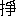
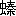

浮雲はしがき
薔薇の花は頭に咲て活人は絵となる世の中独り文章而已は黴の生えた陳奮翰の四角張りたるに頬返しを附けかね又は舌足らずの物言を学びて口に涎を流すは拙しこれはどうでも言文一途の事だと思立ては矢も楯もなく文明の風改良の熱一度に寄せ来るどさくさ紛れお先真闇三宝荒神さまと春のや先生を頼み奉り欠硯に朧の月の雫を受けて墨摺流す空のきおい夕立の雨の一しきりさらさらさっと書流せばアラ無情始末にゆかぬ浮雲めが艶しき月の面影を思い懸なく閉籠て黒白も分かぬ烏夜玉のやみらみっちゃな小説が出来しぞやと我ながら肝を潰してこの書の巻端に序するものは
明治丁亥初夏
二葉亭四迷
［＃改ページ］
浮雲第一篇序
古代の未だ曾て称揚せざる耳馴れぬ文句を笑うべきものと思い又は大体を評し得ずして枝葉の瑕瑾のみをあげつらうは批評家の学識の浅薄なるとその雅想なきを示すものなりと誰人にやありけん古人がいいぬ今や我国の文壇を見るに雅運日に月に進みたればにや評論家ここかしこに現われたれど多くは感情の奴隷にして我好む所を褒め我嫌うところを貶すその評判の塩梅たる上戸の酒を称し下戸の牡丹餅をもてはやすに異ならず淡味家はアライを可とし濃味家は口取を佳とす共に真味を知る者にあらず争でか料理通の言なりというべき就中小説の如きは元来その種類さまざまありて辛酸甘苦いろいろなるを五味を愛憎する心をもて頭くだしに評し去るは豈に心なきの極ならずや我友二葉亭の大人このたび思い寄る所ありて浮雲という小説を綴りはじめて数ならぬ主人にも一臂をかすべしとの頼みありき頼まれ甲斐のあるべくもあらねど一言二言の忠告など思いつくままに申し述べてかくて後大人の縦横なる筆力もて全く綴られしを一閲するにその文章の巧なる勿論主人などの及ぶところにあらず小説文壇に新しき光彩を添なんものは蓋しこの冊子にあるべけれと感じて甚だ僭越の振舞にはあれど只所々片言隻句の穩かならぬふしを刪正して竟に公にすることとなりぬ合作の名はあれどもその実四迷大人の筆に成りぬ文章の巧なる所趣向の面白き所は総て四迷大人の骨折なり主人の負うところはひとり僭越の咎のみ読人乞うその心してみそなわせ序ながら彼の八犬伝水滸伝の如き規摸の目ざましきを喜べる目をもてこの小冊子を評したまう事のなからんには主人は兎も角も二葉亭の大人否小説の霊が喜ぶべしと云爾
第二十年夏
春の屋主人
［＃改ページ］
第一編
第一回 アアラ怪しの人の
挙動
千早振る
神無月ももはや跡
二日の
余波となッた二十八日の午後三時頃に、
神田見附の内より、
塗渡る
蟻、散る
蜘蛛の子とうようよぞよぞよ
沸出でて来るのは、
孰れも
顋を気にし
給う方々。しかし
熟々見て
篤と
点
すると、これにも
種々種類のあるもので、まず
髭から書立てれば、口髭、
頬髯、
顋の
鬚、
暴に
興起した
拿破崙髭に、
狆の口めいた
比斯馬克髭、そのほか
矮鶏髭、
貉髭、ありやなしやの幻の髭と、濃くも
淡くもいろいろに
生分る。髭に続いて
差いのあるのは
服飾。
白木屋仕込みの
黒物ずくめには
仏蘭西皮の
靴の
配偶はありうち、これを召す
方様の鼻毛は延びて
蜻蛉をも
釣るべしという。これより
降っては、
背皺よると
枕詞の付く「スコッチ」の背広にゴリゴリするほどの牛の毛皮靴、そこで
踵にお飾を
絶さぬところから
泥に尾を
曳く
亀甲洋袴、いずれも
釣しんぼうの
苦患を今に脱せぬ
貌付。デモ持主は得意なもので、髭あり服あり我また
奚をか

めんと済した
顔色で、火をくれた
木頭と
反身ッてお帰り遊ばす、イヤお
羨しいことだ。その
後より続いて出てお出でなさるは
孰れも
胡麻塩頭、弓と曲げても張の弱い腰に無残や
空弁当を
振垂げてヨタヨタものでお帰りなさる。さては老朽してもさすがはまだ職に
堪えるものか、しかし日本服でも勤められるお手軽なお身の上、さりとはまたお気の毒な。
途上
人影の
稀れに成った頃、同じ見附の内より
両人の
少年が話しながら出て参った。一人は
年齢二十二三の男、顔色は
蒼味七分に土気三分、どうも
宜しくないが、
秀た
眉に
儼然とした眼付で、ズーと
押徹った鼻筋、
唯惜かな口元が
些と尋常でないばかり。しかし
締はよさそうゆえ、絵草紙屋の前に立っても、パックリ
開くなどという
気遣いは有るまいが、とにかく顋が
尖って頬骨が
露れ、
非道く

れている
故か顔の造作がとげとげしていて、
愛嬌気といったら
微塵もなし。醜くはないが
何処ともなくケンがある。
背はスラリとしているばかりで
左而已高いという程でもないが、
痩肉ゆえ、半鐘なんとやらという人聞の悪い
渾名に縁が有りそうで、年数物ながら
摺畳皺の存じた
霜降「スコッチ」の服を身に
纏ッて、
組紐を
盤帯にした
帽檐広な黒
羅紗の帽子を
戴いてい、今一人は、前の男より二ツ三ツ兄らしく、中肉中背で色白の丸顔、口元の尋常な所から眼付のパッチリとした所は仲々の好男子ながら、顔立がひねてこせこせしているので、何となく品格のない男。黒羅紗の半「フロックコート」に同じ色の「チョッキ」、洋袴は何か乙な
縞羅紗で、リュウとした
衣裳附、
縁の巻上ッた
釜底形の黒の帽子を
眉深に
冠り、左の手を
隠袋へ差入れ、右の手で細々とした
杖を
玩物にしながら、高い男に向い、
「しかしネー、
若し果して課長が我輩を信用しているなら、
蓋し
已むを得ざるに
出でたんだ。
何故と言ッて見給え、局員四十有余名と言やア大層のようだけれども、
皆腰の曲ッた
老爺に
非ざれば気の
利かない
奴ばかりだろう。その内で、こう言やア
可笑しい様だけれども、若手でサ、原書も
些たア
噛っていてサ、そうして事務を取らせて
捗の
往く者と言ったら、マア我輩二三人だ。だから若し果して信用しているのなら、
已を得ないのサ」
「けれども山口を見給え、事務を取らせたらあの男程捗の往く者はあるまいけれども、やっぱり免を
喰ったじゃアないか」
「
彼奴はいかん、彼奴は馬鹿だからいかん」
「何故」
「何故と言って、彼奴は馬鹿だ、課長に向って
此間のような事を言う所を見りゃア、
弥馬鹿だ」
「あれは全体課長が悪いサ、自分が不条理な事を言付けながら、何にもあんなに頭ごなしにいうこともない」
「それは課長の方が或は不条理かも知れぬが、しかし
苟も長官たる者に向って抵抗を試みるなぞというなア、馬鹿の骨頂だ。まず考えて見給え、山口は何んだ、属吏じゃアないか。属吏ならば、
仮令い課長の言付を条理と思ったにしろ思わぬにしろ、ハイハイ言ってその通り
処弁して往きゃア、職分は尽きてるじゃアないか。
然るに彼奴のように、苟も課長たる者に向ってあんな差図がましい事を……」
「イヤあれは指図じゃアない、注意サ」
「フム
乙う山口を弁護するネ、やっぱり同病
相憐れむのか、アハアハアハ」
高い男は中背の男の顔を
尻眼にかけて口を
鉗んでしまッたので
談話がすこし
中絶れる。
錦町へ曲り込んで二ツ目の横町の角まで参った時、中背の男は
不図立止って、
「ダガ君の免を
喰たのは、弔すべくまた賀すべしだぜ」
「何故」
「何故と言って、君、これからは朝から晩まで
情婦の
側にへばり付いている事が出来らアネ。アハアハアハ」
「フフフン、馬鹿を言給うな」
ト高い男は顔に
似気なく微笑を含み、さて失敬の
挨拶も手軽るく、別れて独り
小川町の方へ参る。顔の微笑が一かわ一かわ消え往くにつれ、足取も次第々々に
緩かになって、
終には虫の
這う様になり、
悄然と
頭をうな垂れて二三町程も参ッた頃、
不図立止りて
四辺を
回顧し、
駭然として二足三足立戻ッて、トある横町へ曲り込んで、角から三軒目の
格子戸作りの二階家へ
這入る。
一所に這入ッて見よう。
高い男は玄関を通り抜けて縁側へ
立出ると、
傍の
坐舗の障子がスラリ
開いて、年頃十八九の婦人の首、チョンボリとした
摘ッ
鼻と、日の丸の紋を染抜いたムックリとした頬とで、その持主の身分が知れるという奴が、ヌット出る。
「お
帰なさいまし」
トいって、何故か
口舐ずりをする。
「叔母さんは」
「
先程お嬢さまと
何処らへか」
「そう」
ト言捨てて高い男は縁側を
伝って参り、突当りの
段梯子を登ッて二階へ上る。ここは六畳の
小坐舗、一間の
床に三尺の押入れ付、三方は壁で唯南ばかりが障子になッている。床に掛けた軸は
隅々も既に
虫喰んで、
床花瓶に投入れた
二本三本の
蝦夷菊は、うら枯れて枯葉がち。坐舗の
一隅を顧みると古びた机が一脚
据え付けてあッて、筆、ペン、
楊枝などを
掴挿しにした筆立一個に、
歯磨の
函と肩を
比べた
赤間の
硯が一面載せてある。机の
側に押立たは二本
立の
書函、これには小形の
爛缶が載せてある。机の下に差入れたは
縁の欠けた火入、これには
摺附木の
死体が
横ッている。その外坐舗一杯に敷詰めた
毛団、
衣紋竹に釣るした
袷衣、柱の
釘に懸けた
手拭、いずれを見ても皆年数物、その証拠には
手擦れていて古色
蒼然たり。だが
自ら秩然と
取旁付ている。
高い男は
徐かに和服に着替え、脱棄てた服を畳みかけて見て、
舌鼓を撃ちながらそのまま押入へへし込んでしまう。ところへトパクサと上ッて来たは例の日の丸の紋を染抜いた首の持主、
横幅の広い筋骨の
逞しい、ズングリ、ムックリとした生理学上の美人で、持ッて来た郵便を高い男の前に差置いて、
「アノー
先刻この郵便が」
「ア、そう、何処から来たんだ」
ト郵便を手に取って見て、
「ウー、国からか」
「アノネ
貴君、今日のお嬢さまのお
服飾は、ほんとにお目に懸けたいようでしたヨ。まずネ、お下着が格子縞の
黄八丈で、お上着はパッとした
宜引［＃「引」は小書き右寄せ］縞の糸織で、お
髪は
何時ものイボジリ捲きでしたがネ、お
掻頭は
此間出雲屋からお取んなすったこんな」
と
故意々々手で形を
拵らえて見せ、
「
薔薇の
花掻頭でネ、それはそれはお美しゅう御座いましたヨ……私もあんな帯留が一ツ欲しいけれども……」
ト
些し
塞いで、
「お嬢さまはお化粧なんぞはしないと
仰しゃるけれども、今日はなんでも内々で薄化粧なすッたに違いありませんヨ。だってなんぼ色がお
白ッてあんなに……
私も
家にいる時分はこれでもヘタクタ
施けたもんでしたがネ、
此家へ上ッてからお正月ばかりにして不断は施けないの、施けてもいいけれども
御新造さまの悪口が
厭ですワ、だッて
何時かもお客様のいらッしゃる前で、『
鍋のお
白粉を施けたとこは
全然炭団へ霜が降ッたようで御座います』ッて……
余りじゃア有りませんか、ネー貴君、なんぼ私が不器量だッて余りじゃアありませんか」
ト
敵手が
傍にでもいるように、真黒になってまくしかける。高い男は先程より、手紙を
把ッては読かけ読かけてはまた下へ
措きなどして、さも迷惑な
体。この時も唯「フム」と鼻を鳴らした
而已で更に取合わぬゆえ、生理学上の美人はさなくとも
罅壊れそうな
両頬をいとど
膨脹らして、ツンとして二階を降りる。その後姿を
目送ッて高い男はホット顔、また手早く手紙を取上げて読下す。その
文言に
一筆示し※［＃「参らせ候」のくずし字、13-8］、さても時こうがら日増しにお寒う相成り候えども御無事にお勤め被成候や、それのみあんじくらし※［＃「参らせ候」のくずし字、13-9］、母事もこの頃はめっきり年をとり、髪の毛も大方は白髪になるにつき心まで愚痴に相成候と見え、今年の晩には御地へ参られるとは知りつつも、何とのう待遠にて、毎日ひにち指のみ折暮らし※［＃「参らせ候」のくずし字、13-11］、どうぞどうぞ一日も早うお引取下されたく念じ※［＃「参らせ候」のくずし字、13-12］、さる二十四日は父上の……
と読みさして覚えずも手紙を取落し、腕を組んでホット
溜息。
第二回 風変りな恋の
初峯入 上
高い男と仮に名乗らせた男は、本名を
内海文三と言ッて静岡県の者で、父親は旧幕府に仕えて
俸禄を
食だ者で有ッたが、幕府倒れて王政
古に
復り
時津風に
靡かぬ
民草もない明治の
御世に成ッてからは、旧里静岡に
蟄居して
暫らくは
偸食の民となり、
為すこともなく
昨日と送り今日と暮らす内、坐して
食えば山も
空しの
諺に
漏れず、次第々々に
貯蓄の手薄になるところから
足掻き出したが、さて木から落ちた
猿猴の身というものは意久地の無い者で、腕は真陰流に固ッていても
鋤鍬は使えず、口は
左様然らばと重く成ッていて見れば急にはヘイの
音も出されず、といって
天秤を肩へ当るも家名の
汚れ外聞が見ッとも
宜くないというので、足を
擂木に
駈廻ッて
辛くして静岡藩の史生に住込み、ヤレ
嬉しやと言ッたところが腰弁当の
境界、なかなか浮み上る程には参らぬが、デモ感心には
多も無い資本を
吝まずして一子文三に学問を仕込む。まず朝
勃然起る、弁当を
背負わせて学校へ
出て
遣る、帰ッて来る、直ちに傍近の私塾へ通わせると言うのだから、あけしい間がない。とても
余所外の小供では続かないが、
其処は文三、性質が
内端だけに学問には向くと見えて、余りしぶりもせずして出て参る。
尤も
途に
蜻蛉を追う友を見てフト気まぐれて遊び暮らし、
悄然として裏口から立戻ッて来る事も無いではないが、それは
邂逅の事で、ママ大方は勉強する。その内に学問の味も出て来る、サア面白くなるから、
昨日までは
督責されなければ取出さなかッた書物をも今日は我から
繙くようになり、
随ッて学業も進歩するので、人も
賞讃せば両親も喜ばしく、子の
生長にその身の
老るを忘れて春を送り秋を迎える内、文三の十四という春、
待に待た卒業も首尾よく済だのでヤレ嬉しやという間もなく、父親は不図感染した
風邪から余病を引出し、
年比の心労も手伝てドット床に
就く。
薬餌、
呪、
加持祈祷と人の善いと言う程の事を
為尽して見たが、さて
験も見えず、次第々々に頼み少なに成て、
遂に文三の事を言い
死にはかなく成てしまう。生残た妻子の愁傷は実に
比喩を取るに言葉もなくばかり、「
嗟矣幾程歎いても仕方がない」トいう口の下からツイ
袖に置くは
泪の露、
漸くの事で空しき
骸を
菩提所へ送りて
荼毘一片の
烟と立上らせてしまう。さて
人が没してから家計は一方ならぬ困難、
薬礼と葬式の
雑用とに
多もない
貯叢をゲッソリ遣い減らして、今は残り少なになる。デモ母親は
男勝りの気丈者、貧苦にめげない
煮焚の
業の片手間に一枚三厘の
襯衣を
縫けて、身を
粉にして
了ぐに追付く貧乏もないか、どうかこうか湯なり
粥なりを
啜て、公債の利の細い
烟を立てている。文三は父親の
存生中より、家計の困難に心附かぬでは無いが、何と言てもまだ幼少の事、
何時までもそれで居られるような心地がされて、親思いの心から、今に坊がああしてこうしてと、
年齢には増せた事を言い出しては両親に
袂を絞らせた事は
有ても、又
何処ともなく
他愛のない所も有て、
浪に漂う
浮艸の、うかうかとして月日を重ねたが、父の死後
便のない母親の辛苦心労を見るに付け聞くに付け、小供心にも心細くもまた悲しく、始めて浮世の塩が身に
浸みて、夢の覚たような心地。これからは給事なりともして、母親の
手足にはならずとも責めて我口だけはとおもう
由をも母に告げて相談をしていると、捨る神あれば
助る神ありで、文三だけは
東京に居る叔父の
許へ引取られる事になり、
泣の
泪で静岡を
発足して叔父を
便って出京したは明治十一年、文三が十五に成た春の事とか。
叔父は
園田孫兵衛と言いて、文三の亡父の為めには実弟に当る男、慈悲深く、
憐ッぽく、しかも
律義真当の気質ゆえ人の
望けも宜いが、
惜かな
些と気が弱すぎる。維新後は両刀を
矢立に替えて、朝夕
算盤を
弾いては見たが、慣れぬ事とて初の内は
損毛ばかり、今日に
明日にと
喰込で、果は借金の
淵に
陥まり、どうしようこうしようと
足掻き

いている内、不図した事から浮み
上て当今では些とは資本も出来、地面をも買い小金をも貸付けて、家を東京に持ちながら、その身は浜のさる
茶店の支配人をしている事なれば、
左而已富貴と言うでもないが、まず
融通のある
活計。留守を守る女房のお
政は、お
摩りからずるずるの
後配、
歴とした士族の娘と自分ではいうが……チト考え物。しかしとにかく如才のない、世辞のよい、地代から貸金の催促まで家事一切
独で切って廻る程あって、万事に抜目のない婦人。
疵瑕と言ッては
唯大酒飲みで、浮気で、しかも針を持つ事がキツイ
嫌いというばかり。さしたる事もないが、人事はよく言いたがらぬが世の習い、「あの
婦人は
裾張蛇の
変生だろう」ト近辺の者は影人形を使うとか言う。夫婦の間に二人の子がある。姉をお
勢と言ッて、その頃はまだ十二の
蕾、
弟を
勇と言ッて、これもまた袖で
鼻汁拭く
湾泊盛り（これは当今は某校に入舎していて宅には居らぬので）、トいう家内ゆえ、叔母一人の
機に入ればイザコザは無いが、さて文三には人の
機嫌気褄を取るなどという事は出来ぬ。唯心ばかりは
主とも親とも思ッて善く
事えるが、気が
利かぬと言ッては
睨付けられる事何時も何時も、その度ごとに親の
難有サが身に
染み骨に
耐えて、袖に露を置くことは有りながら、常に自ら
叱ッてジット辛抱、
使歩行きをする
暇には近辺の私塾へ通学して、
暫らく悲しい月日を送ッている。ト或る時、某学校で生徒の召募があると塾での評判取り取り、聞けば給費だという。何も試しだと文三が試験を受けて見たところ、幸いにして及第する、入舎する、ソレ給費が
貰える。
昨日までは叔父の家とは言いながら
食客の悲しさには、追使われたうえ気兼苦労
而已をしていたのが、今日は
外に
掣肘る所もなく、心一杯に勉強の出来る身の上となったから、ヤ喜んだの喜ばないのと、それはそれは
雀躍までして喜んだが、しかし書生と言ッてもこれもまた
一苦界。
固より
余所外のおぼッちゃま方とは違い、親から仕送りなどという
洒落はないから、
無駄遣いとては一銭もならず、また
為ようとも思わずして、
唯一心に、
便のない一人の母親の心を安めねばならぬ、世話になった叔父へも
報恩をせねばならぬ、と思う心より、寸陰を惜んでの刻苦勉強に学業の進みも著るしく、何時の試験にも一番と言ッて二番とは
下らぬ程ゆえ、得難い書生と教員も感心する。サアそうなると
傍が
喧ましい。
放蕩と
懶惰とを
経緯の糸にして
織上たおぼッちゃま方が、
不負魂の
妬み
嫉みからおむずかり遊ばすけれども、文三はそれ等の事には
頓着せず、独りネビッチョ
除け物と成ッて朝夕勉強
三昧に歳月を消磨する内、遂に多年
蛍雪の功が現われて一片の卒業証書を
懐き、再び叔父の家を
東道とするように成ッたからまず一安心と、それより手を替え品を替え
種々にして仕官の口を探すが、さて探すとなると無いもので、心ならずも小半年ばかり
燻ッている。その間始終叔母にいぶされる辛らさ苦しさ、
初は叔母も自分ながらけぶそうな
貌をして、やわやわ吹付けていたからまず
宜ッたが、次第にいぶし方に念が入ッて来て、果は
生松葉に
蕃椒をくべるように成ッたから、そのけぶいことこの上なし。文三も暫らくは鼻をも
潰していたれ、
竟には余りのけぶさに堪え兼て
噎返る胸を
押鎮めかねた事も有ッたが、イヤイヤこれも自分が
不甲斐ないからだと、思い返してジット辛抱。そういうところゆえ、その後或人の周旋で某省の
准判任御用係となッた時は天へも昇る心地がされて、ホッと一息
吐きは吐いたが、始て出勤した時は
異な感じがした。まず取調物を受取って我坐になおり、さて落着て居廻りを
視回すと、
仔細らしく
頸を
傾けて
書物をするもの、
蚤取眼になって
校合をするもの、筆を
啣えて
忙し気に帳簿を繰るものと種々さまざま有る中に、ちょうど文三の真向うに八字の浪を額に寄せ、
忙しく眼をしばたたきながら
間断もなく算盤を
弾いていた年配五十前後の老人が、不図手を
止めて珠へ指ざしをしながら、「エー六五七十の二……でもなしとエー六五」ト天下の安危この一挙に在りと言ッた様な、さも心配そうな顔を振揚げて、その癖口をアンゴリ開いて、
眼鏡越しにジット文三の顔を
見守め、「ウー八十の二か」ト
一越調子高な声を振立ててまた一心不乱に弾き出す。余りの
可笑しさに堪えかねて、文三は覚えずも微笑したが、考えて見れば笑う我と笑われる人と余り懸隔のない身の上。アア
曾て身の油に根気の
心を浸し、眠い眼を
睡ずして得た
学力を、こんなはかない馬鹿気た事に使うのかと、思えば悲しく情なく、我になくホット
太息を
吐いて、暫らくは唯
茫然としてつまらぬ者でいたが、イヤイヤこれではならぬと心を取直して、その日より事務に
取懸る。当座四五日は例の老人の顔を見る毎に嘆息
而已していたが、それも向う
境界に移る習いとかで、日を経る
随に苦にもならなく成る。この月より国許の老母へは月々仕送をすれば母親も
悦び、叔父へは月賦で借金
済しをすれば叔母も機嫌を直す。その年の暮に一等進んで本官になり、昨年の暑中には久々にて帰省するなど、いろいろ喜ばしき事が重なれば、
眉の
皺も自ら伸び、どうやら寿命も長くなったように思われる。ここにチト
艶いた一条のお
噺があるが、これを
記す前に、チョッピリ孫兵衛の長女お勢の小伝を伺いましょう。
お勢の
生立の有様、
生来子煩悩の孫兵衛を父に持ち、他人には薄情でも我子には眼の無いお政を母に持ッた事ゆえ、幼少の折より
挿頭の花、
衣の裏の玉と
撫で
愛まれ、何でもかでも
言成次第にオイソレと仕付けられたのが癖と成ッて、首尾よくやんちゃ娘に
成果せた。
紐解の賀の
済だ頃より、父親の望みで小学校へ通い、母親の好みで
清元の
稽古、
生得て
才溌の一徳には
生覚えながら飲込みも早く、学問、遊芸、
両ながら出来のよいように思われるから、母親は眼も口も一ツにして
大驩び、尋ねぬ人にまで
風聴する娘自慢の手前
味噌、
切りに
涎を垂らしていた。その頃
新に隣家へ引移ッて参ッた官員は家内四人
活計で、細君もあれば娘もある。隣ずからの
寒暄の挨拶が喰付きで、親々が心安く成るにつれ娘同志も親しくなり、毎日のように
訪つ
訪れつした。隣家の娘というはお勢よりは二ツ三ツ
年層で、優しく
温藉で、父親が儒者のなれの果だけ有ッて、小供ながらも学問が
好こそ物の上手で出来る。いけ年を
仕てもとかく人
真似は
輟められぬもの、
況てや小供という
中にもお勢は
根生の
軽躁者なれば
尚更、
 忽
忽その娘に
薫陶れて、
起居挙動から物の言いざままでそれに似せ、急に
三味線を
擲却して、
唐机の上に
孔雀の羽を押立る。お政は学問などという
正坐ッた事は虫が好かぬが、
愛し娘の
為たいと思ッて
為る事と、そのままに打棄てて置く内、お勢が小学校を卒業した頃、隣家の娘は芝辺のさる私塾へ入塾することに成ッた。サアそう成るとお勢は矢も
楯も
堪らず、急に入塾が仕たくなる。何でもかでもと親を
責がむ、寝言にまで言ッて責がむ。トいってまだ
年端も往かぬに、
殊にはなまよみの甲斐なき
婦人の身でいながら、入塾などとは
以の外、トサ
一旦は親の威光で叱り付けては見たが、例の絶食に腹を
空せ、「入塾が出来ない位なら生ている甲斐がない」ト
溜息噛雑ぜの愁訴、
萎れ返ッて見せるに両親も我を折り、それ程までに思うならばと、万事を隣家の娘に
托して、
覚束なくも入塾させたは今より二年
前の事で。
お勢の入塾した塾の塾頭をしている婦人は、新聞の受売からグット思い上りをした
女丈夫、しかも気を使ッて一飯の恩は
酬いぬがちでも、
睚眥の
怨は必ず報ずるという
蚰蜒魂で、気に入らぬ者と見れば何かにつけて真綿に針のチクチク責をするが性分。親の前でこそ
蛤貝と
反身れ、他人の前では
蜆貝と縮まるお勢の事ゆえ、
責まれるのが辛らさにこの女丈夫に取入ッて卑屈を働らく。固より根がお茶ッぴいゆえ、その風には染り易いか、
忽の中に見違えるほど
容子が変り、何時しか隣家の娘とは
疎々しくなッた。その後英学を初めてからは、
悪足掻もまた一段で、
襦袢がシャツになれば
唐人髷も束髪に化け、ハンケチで
咽喉を
緊め、
鬱陶しいを
耐えて眼鏡を掛け、
独よがりの人笑わせ、
天晴一個のキャッキャとなり済ました。然るに去年の暮、例の女丈夫は教師に雇われたとかで退塾してしまい、その手に属したお茶ッぴい連も一人去り二人
去して
残少なになるにつけ、お勢も何となく我宿恋しく成ッたなれど、まさかそうとも言い
難ねたか、漢学は
荒方出来たと
拵らえて、退塾して宿所へ帰ッたは今年の春の暮、桜の花の散る頃の事で。
既に記した如く、文三の出京した頃はお勢はまだ十二の蕾、幅の
狭い帯を締めて
姉様を荷
厄介にしていたなれど、こましゃくれた心から、「あの人はお前の御亭主さんに
貰ッたのだヨ」ト坐興に言ッた言葉の露を
実と
汲だか、初の内ははにかんでばかりいたが、小供の
馴むは早いもので、間もなく菓子
一を二ツに割ッて喰べる程
睦み合ッたも今は一昔。文三が某校へ入舎してからは
相逢う事すら
稀なれば、
況て
一に居た事は半日もなし。唯今年の冬期休暇にお勢が帰宅した時
而已、十日ばかりも朝夕顔を見合わしていたなれど、小供の時とは違い、年頃が年頃だけに文三もよろずに遠慮勝でよそよそしく
待遇して、更に打解けて物など言ッた事なし。その癖お勢が帰塾した当坐両三日は、百年の相識に別れた如く
何となく心
淋しかッたが……それも
日数を
経る
随に忘れてしまッたのに、今また思い懸けなく一ッ家に
起臥して、折節は
狎々しく物など言いかけられて見れば、嬉しくもないが一
月が
復た来たようで、何にとなく
賑かな心地がした。人一人殖えた事ゆえ、これはさもあるべき事ながら、唯怪しむ
可きはお勢と席を
同した時の文三の感情で、何時も可笑しく気が改まり、円めていた
脊を引伸して頸を据え、
異う済して変に片付る。魂が
裳抜れば一心に
主とする所なく、居廻りに在る程のもの
悉く
薄烟に包れて
虚有縹緲の
中に漂い、有るかと思えばあり、無いかと
想えばない
中に、唯
一物ばかりは見ないでも見えるが、この感情は
未だ何とも
名け難い。夏の初より頼まれてお勢に英語を教授するように成ッてから、文三も
些しく打解け出して、折節は日本婦人の有様、束髪の利害、さては男女交際の得失などを論ずるように成ると、不思議や今まで文三を男臭いとも思わず太平楽を並べ大風呂敷を
拡げていたお勢が、文三の前では何時からともなく口数を聞かなく成ッて、何処ともなく落着て、優しく
女性らしく成ッたように見えた。或
一日、お勢の何時になく眼鏡を外して
頸巾を取ッているを怪んで文三が尋ぬれば、「それでも
貴君が、健康な者には
却て害になると
仰ッたものヲ」トいう。文三は覚えずも
莞然、「それは至極
好い
事だ」ト言ッてまた莞然。
お勢の落着たに引替え、文三は何かそわそわし出して、出勤して事務を執りながらもお勢の事を思い続けに思い、退省の時刻を
待詫びる。帰宅したとてもお勢の顔を見ればよし、さも無ければ
落脱力抜けがする。「
彼女に何したのじゃアないのかしらぬ」ト或時我を
疑ッて、覚えずも顔を
※［＃「赤＋報のつくり」、22-13］らめた。
お勢の帰宅した初より、自分には気が付かぬでも文三の胸には虫が
生た。なれどもその頃はまだ小さく
場取らず、胸に在ッても邪魔に成らぬ
而已か、そのムズムズと
蠢動く時は世界中が
一所に集る如く、又この世から極楽浄土へ往生する如く、又春の日に
瓊葩綉葉の間、
和気香風の
中に、
臥榻を据えてその上に
臥そべり、次第に
遠り往く
虻の声を聞きながら、
眠るでもなく眠らぬでもなく、唯ウトウトとしているが如く、何ともかとも言様なく
愉快ッたが、虫
奴は何時の間にか太く
逞しく成ッて、「何したのじゃアないか」ト疑ッた頃には、既に「
添たいの
蛇」という
蛇に成ッて
這廻ッていた……
寧ろ
難面くされたならば、食すべき「たのみ」の
餌がないから、蛇奴も
餓死に死んでしまいもしようが、
憖に
卯の花くだし
五月雨のふるでもなくふらぬでもなく、
生殺しにされるだけに蛇奴も苦しさに堪え
難ねてか、のたうち廻ッて
腸を
噛断る……初の快さに引替えて、文三も今は苦しくなッて来たから、
窃かに叔母の
顔色を伺ッて見れば、気の
所為か
粋を通して見て見ぬ風をしているらしい。「
若しそうなればもう叔母の
許を受けたも同前……チョッ
寧そ
打附けに……」ト思ッた事は
屡々有ッたが、「イヤイヤ滅多な事を言出して取着かれぬ返答をされては」ト思い直してジット
意馬の
絆を
引緊め、
藻に住む虫の我から苦んでいた……これからが肝腎
要、回を改めて伺いましょう。
第三回 余程
風変な恋の初峯入 下
今年の仲の夏、或一
夜、文三が散歩より帰ッて見れば、叔母のお政は夕暮より所用あッて出たまま
未だ帰宅せず、下女のお
鍋も入湯にでも参ッたものか、これも留守、
唯お勢の
子舎に
而已光明が
射している。文三
初は何心なく二階の
梯子段を二段三段
登ッたが、不図立止まり、何か
切りに考えながら、一段降りてまた立止まり、また考えてまた降りる……
俄かに気を取直して、
将に再び二階へ登らんとする時、
忽ちお勢の子舎の
中に声がして、
「
誰方」
トいう。
「
私」
ト返答をして文三は肩を
縮める。
「オヤ誰方かと思ッたら文さん……
淋しくッてならないから
些とお
噺しにいらッしゃいな」
「エ
多謝う、だがもう
些と
後にしましょう」
「何か御用が有るの」
「イヤ何も用はないが……」
「それじゃア
宜じゃア有りませんか、ネーいらッしゃいヨ」
文三は
些し
躊躇て梯子段を降果てお勢の子舎の入口まで参りは参ッたが、
中へとては立入らず、唯
鵠立でいる。
「お
這入なさいな」
「エ、エー……」
ト言ッたまま文三は
尚お
鵠立でモジモジしている、何か這入りたくもあり這入りたくもなしといった様な
容子。
「
何故貴君、今夜に限ッてそう遠慮なさるの」
「デモ
貴嬢お一人ッきりじゃア……なんだか……」
「オヤマア貴君にも似合わない……アノ
何時か、気が弱くッちゃア主義の実行は到底覚束ないと
仰しゃッたのは
何人だッけ」
ト
の首を
斜に
傾しげて
嫣然片頬に含んだお勢の微笑に
釣られて、文三は部屋へ這入り込み坐に着きながら、
「そう言われちゃア一言もないが、しかし……」
「些とお遣いなさいまし」
トお勢は
団扇を
取出して文三に勧め、
「しかしどうしましたと」
「エ、ナニサ影口がどうも
五月蠅ッて」
「それはネ、どうせ些とは何とか言いますのサ。また何とか言ッたッて宜じゃア有りませんか、
若しお
相互に潔白なら。どうせ貴君、二千年来の習慣を破るんですものヲ、多少の
艱苦は
免れッこは有りませんワ」
「トハ思ッているようなものの、まさか影口が耳に入ると
厭なものサ」
「それはそうですヨネー。この間もネ貴君、鍋が生意気に
可笑しな事を言ッて私にからかうのですよ。それからネ私が
余り五月蠅なッたから、到底解るまいとはおもいましたけれども
試に男女交際論を説て見たのですヨ。そうしたらネ、アノなんですッて、私の言葉には漢語が
雑ざるから
全然何を言ッたのだか解りませんて……
真個に教育のないという者は仕様のないもんですネー」
「アハハハ
其奴は大笑いだ……しかし可笑しく思ッているのは鍋ばかりじゃア有りますまい、
必と
母親さんも……」
「母ですか、母はどうせ下等の人物ですから始終可笑しな事を言ッちゃアからかいますのサ。それでもネ、そのたんびに私が
辱しめ辱しめ
為い為いしたら、あれでも些とは
耻じたと見えてネ、この頃じゃアそんなに言わなくなりましたよ」
「ヘーからかう、どんな事を仰しゃッて」
「アノーなんですッて、そんなに親しくする位なら
寧ろ貴君と……（すこしもじもじして言かねて）結婚してしまえッて……」
ト聞くと等しく文三は
駭然としてお勢の顔を
目守る。されど
此方は平気の
躰で
「ですがネ、教育のない者ばかりを責める訳にもいけませんヨネー。私の
朋友なんぞは、教育の有ると言う程有りゃアしませんがネ、それでもマア普通の教育は
享けているんですよ、それでいて貴君、西洋主義の解るものは、二十五人の内に
僅四人しかないの。その
四人もネ、塾にいるうちだけで、
外へ出てからはネ、口程にもなく両親に圧制せられて、みんなお嫁に
往ッたりお
婿を取ッたりしてしまいましたの。だから今までこんな事を言ッてるものは私ばッかりだとおもうと、何だか
心細ッて心細ッてなりません。でしたがネ、この頃は貴君という親友が出来たから、アノー大変気丈夫になりましたわ」
文三はチョイと一礼して
「お世辞にもしろ
嬉しい」
「アラお世辞じゃア有りませんよ、
真実ですよ」
「真実なら尚お嬉しいが、しかし私にゃア
貴嬢と親友の交際は到底出来ない」
「オヤ何故ですエ、何故親友の交際が出来ませんエ」
「何故といえば、私には貴嬢が解からず、また貴嬢には私が解からないから、どうも親友の交際は……」
「そうですか、それでも私には貴君はよく解ッている積りですよ。貴君の学識が有ッて、品行が方正で、親に孝行で……」
「だから貴嬢には私が解らないというのです。貴嬢は私を親に孝行だと仰しゃるけれども、孝行じゃア有りません。私には……親より……大切な者があります……」
ト
吃ながら言ッて文三は
差俯向いてしまう。お勢は不思議そうに文三の容子を
眺めながら
「親より大切な者……親より……大切な……者……親より大切な者は私にも有りますワ」
文三はうな垂れた
頸を振揚げて
「エ、貴嬢にも有りますと」
「ハア有りますワ」
「
誰……誰れが」
「人じゃアないの、アノ真理」
「真理」
ト文三は
慄然と
胴震をして
唇を
喰いしめたまま
暫らく
無言、
稍あッて
俄に
喟然として歎息して、
「アア、貴嬢は清浄なものだ潔白なものだ……親より大切なものは真理……アア潔白なものだ……しかし感情という者は実に妙なものだナ、人を
愚にしたり、人を泣かせたり笑わせたり、人をあえだり
揉だりして
玩弄する。玩弄されると薄々気が附きながらそれを制することが出来ない。アア自分ながら……」
ト
些し考えて、稍ありて
熱気となり、
「ダガ思い切れない……どう有ッても思い切れない……お勢さん、貴嬢は御自分が潔白だからこんな事を言ッてもお解りがないかも知れんが、私には真理よりか……真理よりか大切な者があります。去年の暮から
全半歳、その者の
為めに感情を支配せられて、
寐ても
寤めても忘らればこそ、死ぬより
辛いおもいをしていても、先では
毫しも汲んでくれない。寧ろ
強顔なくされたならば、また思い切りようも有ろうけれども……」
ト些し声をかすませて、
「なまじい力におもうの親友だのといわれて見れば私は……どうも……どう有ッても思い……」
「アラ月が……まるで竹の中から出るようですよ、ちょっと御覧なさいヨ」
庭の
一隅に
栽込んだ
十竿ばかりの
繊竹の、葉を分けて出る月のすずしさ。月夜見の神の力の測りなくて、断雲一片の
翳だもない、
蒼空一面にてりわたる清光素色、唯
亭々皎々として
雫も
滴たるばかり。初は隣家の隔ての竹垣に
遮られて庭を
半より
這初め、中頃は縁側へ
上ッて
座舗へ這込み、
稗蒔の水に流れては
金瀲
、
簷馬の
玻璃に
透りては
玉玲瓏、座賞の人に影を添えて孤燈一
穂の光を奪い、
終に
間の壁へ
這上る。涼風一陣吹到る
毎に、ませ
籬によろぼい懸る夕顔の影法師が
婆娑として舞い出し、さてわ
百合の葉末にすがる露の
珠が、忽ち
蛍と成ッて飛迷う。
艸花立樹の風に
揉まれる音の
颯々とするにつれて、しばしは人の心も騒ぎ立つとも、
須臾にして風が
吹罷めば、また
四辺蕭然となって、軒の
下艸に
集く虫の
音のみ独り高く聞える。眼に見る景色はあわれに面白い。とはいえ心に物ある
両人の者の眼には止まらず、唯お勢が口ばかりで
「アア
佳こと」
トいって
何故ともなく
莞然と笑い、仰向いて月に
観惚れる
風をする。その
半面を文三が
窃むが如く眺め
遣れば、眼鼻口の美しさは常に
異ッたこともないが、月の光を受けて些し蒼味を
帯んだ
瓜実顔にほつれ掛ッたいたずら髪、二筋三筋
扇頭の微風に
戦いで
頬の
辺を往来するところは、
慄然とするほど
凄味が有る。暫らく文三がシケジケと眺めているト、やがて凄味のある
半面が次第々々に
此方へ
捻れて……パッチリとした涼しい眼がジロリと動き出して……見とれていた眼とピッタリ
出逢う。
螺の
壺々口に
莞然と含んだ微笑を、細根大根に
白魚を五本並べたような手が持ていた団扇で
隠蔽して、
耻かしそうなしこなし。文三の眼は俄に光り出す。
「お勢さん」
但し
震声で。
「ハイ」
但し小声で。
「お勢さん、
貴嬢もあんまりだ、
余り……残酷だ、私がこれ……これ程までに……」
トいいさして文三は顔に手を
宛てて黙ッてしまう。
意を
注めて
能く見れば、壁に写ッた影法師が、
慄然とばかり震えている。今
一言……今一言の言葉の関を、
踰えれば先は
妹背山、
蘆垣の間近き人を恋い
初めてより、昼は
終日夜は
終夜、唯その人の
面影而已常に
眼前にちらついて、
砧に映る軒の月の、払ッてもまた去りかねていながら、人の心を測りかねて、
末摘花の色にも出さず、
岩堰水の音にも立てず、独りクヨクヨ物をおもう、胸のうやもや、もだくだを、払うも払わぬも今一言の言葉の
綾……今一言……
僅一言……その一言をまだ言わぬ……
折柄ガラガラと表の
格子戸の
開く音がする……
吃驚して文三はお勢と顔を見合わせる、
蹶然と
起上る、転げるように部屋を駆出る。但しその晩はこれきりの事で別段にお話しなし。
翌朝に至りて
両人の者は始めて顔を合わせる。文三はお勢よりは気まりを悪がッて口数をきかず、この夏の事務の
鞅掌さ、暑中休暇も取れぬので
匆々に出勤する。十二時頃に帰宅する。
下坐舗で
昼食を済して二階の居間へ戻り、「アア熱かッた」ト風を
納れている所へ梯子バタバタでお勢が
上ッて参り、二ツ三ツ英語の不審を質問する。質問してしまえばもはや用の無い
筈だが、何かモジモジして
交野の
鶉を極めている。やがて差俯向いたままで鉛筆を
玩弄にしながら
「アノー
昨夕は貴君どうなすったの」
返答なし。
「何だか私が残酷だッて大変
憤ッていらしったが、何が残酷ですの」
ト
笑顔を
擡げて文三の顔を
窺くと、文三は
狼狽て
彼方を向いてしまい
「大抵察していながらそんな事を」
「アラそれでも私にゃ何だか解りませんものヲ」
「解らなければ解らないでよう御座んす」
「オヤ可笑しな」
それから後は文三と差向いになる毎に、お勢は例の事を種にして
乙うからんだ水向け文句、やいのやいのと責め立てて、
終には「仰しゃらぬとくすぐりますヨ」とまで迫ッたが、石地蔵と生れ付たしょうがには、情談のどさくさ紛れにチョックリチョイといって
除ける事の出来ない文三、
然らばという口付からまず重くろしく折目正しく居すまッて、しかつべらしく思いのたけを言い出だそうとすれば、お勢はツイと
彼方を向いて「アラ
鳶が飛でますヨ」と知らぬ顔の半兵衛
模擬、さればといって手を引けば、また
意あり気な色目遣い、トこうじらされて文三は
些とウロが来たが、ともかくも触らば散ろうという下心の
自ら素振りに現われるに「ハハア」と気が附て見れば嬉しく
難有く
辱けなく、罪も
報も忘れ果てて命もトントいらぬ顔付。
臍の下を住家として魂が何時の間にか有頂天外へ宿替をすれば、静かには坐ッてもいられず、ウロウロ座舗を
徘徊いて、舌を吐たり肩を
縮めたり思い出し笑いをしたり、又は変ぽうらいな手附きを為たりなど、よろずに
瘋癲じみるまで喜びは喜んだが、しかしお勢の前ではいつも四角四面に喰いしばって
猥褻がましい
挙動はしない。
尤も
曾てじゃらくらが高じてどやぐやと成ッた時、今まで

しそうに笑ッていた文三が俄かに両眼を閉じて静まり返えり何と言ッても口をきかぬので、お勢が笑らいながら「そんなに
真面目にお
成なさるとこう
成るからいい」とくすぐりに懸ッたその
手頭を払らい除けて文三が
熱気となり、「アア我々の感情はまだ習慣の奴隷だ。お勢さん下へ降りて下さい」といった為めにお勢に憤られたこともあッたが……しかしお勢も日を
経るままに
草臥れたか、余りじゃらくらもしなくなって、高笑らいを
罷めて静かになッて、この頃では折々物思いをするようには成ッたが、文三に向ッてはともすればぞんざいな言葉遣いをするところを見れば、泣寐入りに寐入ッたのでもない
光景。
アア
偶々咲懸ッた恋の
蕾も、事情というおもわぬ
沍にかじけて、可笑しく
葛藤れた
縁の糸のすじりもじった間柄、海へも附かず河へも附かぬ中ぶらりん、
月下翁の
悪戯か、それにしても余程風変りな恋の初峯入り。
文三の某省へ奉職したは
昨日今日のように思う間に既に二年近くになる。年頃節倹の功が現われてこの頃では
些しは
貯金も出来た事ゆえ、
老ッたお袋に何時までも
一人住の不自由をさせて置くも不孝の
沙汰、今年の暮には
東京へ迎えて一家を成して、そうして……と思う
旨を半分
報知せてやれば母親は
大悦び、文三にはお勢という
心宛が出来たことは知らぬが仏のような慈悲心から、「早く相応な者を
宛がって
初孫の顔を見たいとおもうは親の私としてもこうなれど、
其地へ往ッて一軒の家を
成ようになれば家の大黒柱とて無くて
叶わぬは妻、
到底貰う事なら親類
某の次女お
何どのは
内端で
温順く器量も十人
并で私には至極
機に入ッたが、この
娘を迎えて
妻としては」と写真まで添えての相談に、文三はハット当惑の
眉を
顰めて、物の
序に
云々と叔母のお政に話せばこれもまた当惑の
躰。初めお勢が退塾して家に帰ッた頃「
勇という
嗣子があッて見ればお勢は
到底嫁に遣らなければならぬが、どうだ文三に
配偶せては」と孫兵衛に相談をかけられた事も有ッたが、その頃はお政も
左様さネと生返事、
何方附かずに
綾なして月日を送る内、お勢の
甚だ文三に親しむを見てお政も
遂にその気になり、当今では孫兵衛が「ああ仲が
好のは仕合わせなようなものの、両方とも若い者同志だからそうでもない心得違いが有ッてはならぬから、お前が始終
看張ッていなくッてはなりませぬぜ」といっても、お政は「ナアニ大丈夫ですよ、また
些とやそッとの事なら有ッたッて好う御座んさアネ、
到底早かれ
晩かれ一所にしようと思ッてるとこですものヲ」ト、ズット
粋を通し顔でいるところゆえ、今文三の
説話を
听て当惑をしたもその筈の事で。「お袋の申通り
家を
有つようになれば
到底妻を貰わずに置けますまいが、しかし気心も解らぬ者を
無暗に貰うのは余りドットしませぬから、この縁談はまず
辞ッてやろうかと思います」ト常に
異ッた文三の決心を聞いてお政は
漸く眉を開いて
切りに
点頭き、「そうともネそうともネ、
幾程母親さんの機に入ッたからッて肝腎のお前さんの機に入らなきゃア不熟の
基だ。しかしよくお話しだッた。実はネお前さんのお嫁の事に
就ちゃア
些イと
良人でも考えてる事があるんだから、これから先き母親さんがどんな事を言ッておよこしでも、チョイと私に耳打してから返事を出すようにしておくんなさいヨ。いずれ
良人でお話し申すだろうが、些イと考えてる事があるんだから……それはそうと母親さんの貰いたいとお言いのはどんなお子だか、チョイとその写真をお見せナ」といわれて文三はさもきまりの悪るそうに、「エ写真ですか、写真は……私の所には有りません、
先刻アノ何が……お勢さんが何です……持ッて往ッておしまいなすった……」
トいう
光景で、母親も叔父夫婦の者も
宛とする所は思い思いながら一様に今年の
晩れるを
待詫びている
矢端、誰れの望みも彼れの望みも一ツにからげて背負ッて立つ文三が（話を第一回に戻して）今日思懸けなくも……諭旨免職となった。さても
星
というものは是非のないもの、トサ
昔気質の人ならば言うところでも有ろうか。
第四回 言うに言われぬ胸の
中
さてその日も
漸く暮れるに間もない五時頃に成っても、叔母もお勢も更に帰宅する
光景も見えず、
何時まで待っても果てしのない事ゆえ、文三は独り夜食を済まして、二階の
縁端に
端居しながら、身を
丁字欄干に寄せかけて暮行く空を
眺めている。この時日は既に
万家の
棟に没しても、
尚お
余残の影を
留めて、西の半天を薄紅梅に
染た。顧みて
東方の半天を眺むれば、
淡々とあがった水色、
諦視たら
宵星の一つ二つは
鑿り出せそうな
空合。
幽かに聞える
伝通院の
暮鐘の
音に誘われて、
塒へ急ぐ
夕鴉の声が、
彼処此処に聞えて
喧ましい。既にして日はパッタリ暮れる、
四辺はほの暗くなる。
仰向て
瞻る
蒼空には、
余残の色も何時しか消え
失せて、今は一面の青海原、星さえ
所斑に
燦き
出でて
殆んと
交睫をするような
真似をしている。今しがたまで見えた隣家の
前栽も、
蒼然たる夜色に
偸まれて、そよ吹く
小夜嵐に立樹の
所在を知るほどの
闇さ。デモ土蔵の白壁はさすがに
白だけに、見透かせば見透かされる……サッと
軒端近くに羽音がする、
回首ッて観る……何も
眼に
遮るものとてはなく、
唯もう
薄闇い
而已。
心ない身も秋の夕暮には
哀を知るが習い、
況して文三は糸目の切れた
奴凧の身の上、その時々の風次第で
落着先は
籬の梅か物干の
竿か、見極めの附かぬところが浮世とは言いながら、父親が没してから
全十年、
生死の海のうやつらやの高波に揺られ揺られて
辛じて
泳出した官海もやはり波風の静まる間がないことゆえ、どうせ一度は
捨小舟の寄辺ない身に成ろうも知れぬと兼て覚悟をして見ても、
其処が
凡夫のかなしさで、
危に慣れて見れば苦にもならず
宛に成らぬ事を宛にして、文三は今歳の暮にはお袋を引取ッて、チト
老楽をさせずばなるまい、国へ帰えると言ッてもまさかに素手でも
往かれまい、親類の所への土産は何にしよう、「ムキ」にしようか品物にしようかと、胸で
弾いた
算盤の
桁は合いながらも、とかく合いかねるは人の身のつばめ、今まで見ていた
廬生の夢も一
炊の間に覚め果てて「アアまた情ない身の上になッたかナア……」
俄にパッと西の
方が明るくなッた。見懸けた夢をそのままに、文三が振返ッて
視遣る向うは隣家の二階、戸を繰り忘れたものか、まだ障子のままで人影が
射している……スルトその人影が見る間にムクムクと膨れ出して、
好加減の怪物となる……パッと消失せてしまッた跡はまた
常闇。文三はホッと吐息を
吻て、顧みて
我家の中庭を
瞰下ろせば、
所狭きまで
植駢べた
艸花立樹なぞが、
詫し気に
啼く虫の音を包んで、
黯黒の
中からヌッと半身を
捉出して、
硝子張の障子を漏れる
火影を受けているところは、
家内を
覘う曲者かと怪まれる……ザワザワと庭の
樹立を
揉む夜風の余りに顔を吹かれて、文三は
慄然と身震をして
起揚り、居間へ
這入ッて手探りで
洋燈を
点し、
立膝の上に両手を重ねて、何をともなく
目守たまま
暫らくは唯
茫然……不図手近かに在ッた
薬鑵の
白湯を
茶碗に
汲取りて、一息にグッと飲乾し、
肘を
枕に横に倒れて、天井に円く映る
洋燈の
火燈を目守めながら、
莞爾と
片頬に
微笑を含んだが、
開た口が結ばって前歯が姿を隠すに連れ、
何処からともなくまた
愁の色が顔に
顕われて参ッた。
「それはそうとどうしようかしらん、到底言わずには置けん
事たから、今夜にも帰ッたら、
断念ッて言ッてしまおうかしらん。さぞ叔母が
厭な
面をする
事たろうナア……眼に見えるようだ……しかしそんな事を苦にしていた分には
埒が明かない、何にもこれが金銭を借りようというではなし、
毫しも
耻かしい事はない、チョッ今夜言ッてしまおう……だが……お勢がいては言い
難いナ。若しヒョット
彼の前で厭味なんぞを言われちゃア困る。これは何んでも居ない時を見て言う
事た。いない……時を……見……
何故、何故言難い、
苟も男児たる者が零落したのを耻ずるとは何んだ、そんな小胆な、
糞ッ今夜言ッてしまおう。それは
勿論彼娘だッて口へ出してこそ言わないが何んでも来年の春を楽しみにしているらしいから、今
唐突に免職になッたと聞いたら定めて落胆するだろう。しかし落胆したからと言ッて心変りをするようなそんな浮薄な
婦人じゃアなし、かつ通常の婦女子と違ッて教育も有ることだから、大丈夫そんな気遣いはない。それは
決してないが、叔母だて……ハテナ叔母だて。叔母はああいう人だから、
我が免職になッたと聞たら急にお勢をくれるのが厭になッて、無理に
彼娘を
他へかたづけまいとも言われない。そうなったからと言ッて
此方は何も
確い約束がして有るんでないから、
否そうは成りませんとも言われない……
嗚呼つまらんつまらん、
幾程おもい直してもつまらん。
全躰何故
我を免職にしたんだろう、解らんナ、
自惚じゃアないが
我だッて何も役に立たないという方でもなし、また残された者だッて何も別段役に立つという方でもなし、して見ればやっぱり課長におべッからなかったからそれで免職にされたのかな……実に課長は失敬な奴だ、課長も課長だが残された奴等もまた卑屈極まる。
僅かの月給の為めに腰を折ッて、
奴隷同様な真似をするなんぞッて実に卑屈極まる……しかし……
待よ……しかし今まで免官に成ッて程なく復職した者がないでも無いから、ヒョッとして
明日にも召喚状が……イヤ……来ない、召喚状なんぞが来て
耐るものか、よし来たからと言ッて
今度は
此方から辞してしまう、誰が何と言おうト
関わない、断然辞してしまう。しかしそれも短気かナ、やっぱり召喚状が来たら復職するかナ……馬鹿
奴、それだから
我は馬鹿だ、そんな架空な事を宛にして心配するとは何んだ馬鹿奴。それよりかまず差当りエート何んだッけ……そうそう免職の事を叔母に
咄して……さぞ厭な顔をするこッたろうナ……しかし咄さずにも置かれないから思切ッて今夜にも叔母に咄して……ダガお勢のいる前では……チョッいる前でも
関わん、叔母に咄して……ダガ若し
彼娘のいる前で口汚たなくでも言われたら……チョッ関わん、お勢に咄して、イヤ……お勢じゃない叔母に咄して……さぞ……厭な顔……厭な顔を咄して……口……口汚なく
咄……して……アア頭が乱れた……」
ト、ブルブルと
頭を左右へ打振る。
轟然と駆て来た車の音が、家の前でパッタリ止まる。ガラガラと
格子戸が
開く、ガヤガヤと人声がする。ソリャコソと文三が、まず起直ッて
突胸をついた。両手を
杖に
起んとしてはまた坐り、坐らんとしてはまた
起つ。腰の
蝶番は満足でも、胸の蝶番が「言ッてしまおうか」「言難いナ」と離れ離れに成ッているから、急には
起揚られぬ……俄に
蹶然と起揚ッて
梯子段の
下口まで参ッたが、不図立止まり、
些し
躊躇ッていて、「チョッ言ッてしまおう」と
独言を言いながら、
急足に二階を降りて
奥坐舗へ立入る。
奥坐舗の長手の
火鉢の
傍に年配四十
恰好の
年増、些し
痩肉で色が浅黒いが、
小股の
切上ッた、
垢抜けのした、何処ともでんぼう
肌の、
萎れてもまだ見所のある花。
櫛巻きとかいうものに髪を取上げて、
小弁慶の糸織の
袷衣と養老の
浴衣とを重ねた奴を素肌に着て、
黒繻子と
八段の腹合わせの帯をヒッカケに結び、
微酔機嫌の
啣楊枝でいびつに坐ッていたのはお政で。文三の
挨拶するを見て、
「ハイ
只今、大層遅かッたろうネ」
「全体
今日は
何方へ」
「今日はネ、
須賀町から
三筋町へ廻わろうと思ッて
家を出たんだアネ。そうするとネ、須賀町へ往ッたらツイ近所に、あれはエート芸人……なんとか言ッたッけ、芸人……」
「
親睦会」
「それそれその親睦会が有るから一所に往こうッてネお浜さんが勧めきるんサ。私は
新富座か二丁目ならともかくも、そんな
珍木会とか親睦会とかいう
者なんざア
七里々けぱいだけれども、お
勢……ウーイプー……お勢が
往たいというもんだから
仕様事なしのお
交際で
往て見たがネ、思ッたよりはサ。私はまた親睦会というから大方演じゅつ会のような
種のもんかしらとおもったら、なアにやっぱり
品の好い
寄席だネ。
此度文さんも往ッて御覧な、木戸は五十銭だヨ」
「ハアそうですか、それでは
孰れまた」
説話が些し
断絶れる。文三は
肚の
裏に「おなじ言うのならお勢の居ない時だ、チョッ今言ッてしまおう」ト思い
決めて今
将に口を開かんとする……折しも縁側にパタパタと
跫音がして、スラリと
背後の障子が
開く、
振反ッて見れば……お勢で。年は鬼もという十八の娘盛り、
瓜実顔で富士額、
生死を含む眼元の塩にピンとはねた
眉で
力味を付け、
壺々口の
緊笑いにも
愛嬌をくくんで
無暗には
滴さぬほどのさび、
背はスラリとして風に
揺めく
女郎花の、一時をくねる細腰もしんなりとしてなよやか、慾にはもうすこし
生際と
襟足とを善くして
貰いたいが、
何にしても七難を隠くすという雪白の羽二重肌、浅黒い親には似ぬ
鬼子でない天人娘。
艶やかな黒髪を惜気もなくグッと
引詰めての束髪、
薔薇の
花挿頭を

したばかりで
臙脂も
甞めねば
鉛華も
施けず、
衣服とても糸織の
袷衣に友禅と紫繻子の腹合せの帯か何かでさして取繕いもせぬが、
故意とならぬ
眺はまた格別なもので、火をくれて枝を
撓わめた
作花の
厭味のある色の及ぶところでない。
衣透姫に小町の
衣を懸けたという文三の
品題は、それは
惚れた慾眼の
贔負沙汰かも知れないが、とにもかくにも十人並優れて美くしい。坐舗へ這入りざまに文三と顔を見合わして
莞然、チョイと会釈をして
摺足でズーと火鉢の
側まで参り、
温藉に坐に着く。
お勢と顔を見合わせると文三は不思議にもガラリ気が変ッて、
咽元まで込み上げた免職の二字を
鵜呑みにして何
喰わぬ
顔色、肚の
裏で「もうすこし
経ッてから」
「
母親さん、咽が
涸いていけないから、お茶を一杯入れて下さいナ」
「アイヨ」
トいってお政は
茶箪笥を
覗き、
「オヤオヤ茶碗が
皆汚れてる……鍋」
ト呼ばれて出て来た者を見れば例の日の丸の紋を染抜いた首の持主で、
空嘯いた鼻の
端へ突出された
汚穢物を受取り、
振栄のあるお
尻を振立てて
却退る。やがて洗ッて持ッて来る、茶を入れる、サアそれからが今日聞いて来た歌曲の
噂で、
母子二の口が結ばる暇なし。免職の事を
吹聴したくも言出す
潮がないので、文三は余儀なく聴きたくもない
咄を聞て
空しく時刻を移す内、
説話は漸くに
清元長唄の優劣論に移る。
「母親さんは自分が清元が出来るもんだからそんな事をお言いだけれども、長唄の方が
好サ」
「長唄も
岡安ならまんざらでもないけれども、松永は唯つッこむばかりで面白くもなんとも有りゃアしない。それよりか清元の事サ、どうも意気でいいワ。『
四谷で始めて
逢うた時、すいたらしいと思うたが、因果な縁の糸車』」
ト中音で口癖の清元を
唄ッてケロリとして
「いいワ」
「その通り品格がないから
嫌い」
「また始まッた、ヘン
跳馬じゃアあるまいし、万古に
品々も
五月蠅い」
「だッて人間は品格が第一ですワ」
「ヘンそんなにお
人柄なら、
煮込みのおでんなんぞを
喰たいといわないがいい」
「オヤ何時私がそんな事を言ました」
「ハイ
一昨日の晩いいました」
「
嘘ばっかし」
トハ言ッたが
大にへこんだので大笑いとなる。不図お政は文三の方を振向いて
「アノ今日出懸けに母親さんの
所から郵便が着たッけが、お
落掌か」
「ア
真にそうでしたッけ、さっぱり
忘却ていました……エー母からもこの度は別段に手紙を差上げませんが
宜しく申上げろと申ことで」
「ハアそうですか、それは。それでも母親さんは
何時もお
異なすったことも無くッて」
「ハイ、お
蔭さまと丈夫だそうで」
「それはマア何よりの
事た。さぞ今年の暮を楽しみにしておよこしなすったろうネ」
「ハイ、指ばかり
屈ていると申てよこしましたが……」
「そうだろうてネ、
可愛い息子さんの側へ来るんだものヲ。それをネー
何処かの
人みたように親を馬鹿にしてサ、
一口いう二口目には
直に揚足を取るようだと義理にも可愛いと言われないけれど、文さんは親思いだから母親さんの恋しいのもまた一倍サ」
トお勢を
尻目にかけてからみ文句で
宛る。お勢はまた始まッたという
顔色をして
彼方を向てしまう、文三は余儀なさそうにエヘヘ笑いをする。
「それからアノー例の事ネ、あの事をまた何とか言ッてお
遣しなすッたかい」
「ハイ、また言ッてよこしました」
「なんッてネ」
「ソノー気心が解らんから厭だというなら、エー今年の暮帰省した時に、逢ッてよく気心を
洞察た上で極めたら好かろうといって遣しましたが、しかし……」
「なに、母親さん」
「エ、ナニサ、アノ、ソラお前にもこの間話したアネ、文さんの……」
お勢は独り
切りに
点頭く。
「ヘーそんな事を言ッておよこしなすッたかい、ヘーそうかい……それに附けても早く内で帰ッて来れば
好が……イエネ
此間もお咄し申た通りお前さんのお嫁の事に付ちゃア内でも
些と考えてる事も有るんだから……
尤も私も聞て知てる
事たから今咄してしまってもいいけれども……」
ト些し考えて
「何時返事をお出しだ」
「返事はもう出しました」
「エ、モー出したの、今日」
「ハイ」
「オヤマア文さんでもない、私になんとか
一言咄してからお出しならいいのに」
「デスガ……」
「それはマアともかくも、何と言ッてお上げだ」
「エー今は仲々婚姻どころじゃアないから……」
「アラそんな事を言ッてお上げじゃア母親さんが
尚お心配なさらアネ。それよりか……」
「イエまだお咄し申さぬから何ですが……」
「マアサ私の
言事をお聞きヨ。それよりかアノ叔父も何だか考えがあるというからいずれ
篤りと相談した上でとか、さもなきゃア
此地に心当りがあるから……」
「
母親さん、そんな事を
仰しゃるけれど、文さんは
此地に
何か心当りがお
有なさるの」
「マアサ有ッても無くッても、そう言ッてお上げだと母親さんが安心なさらアネ……イエネ、親の身に成ッて見なくッちゃア解らぬ
事たけれども、子供一人身を固めさせようというのはどんなに苦労なもんだろう。だからお勢みたようなこんな親不孝な
者でもそう何時までもお
懐中で
遊ばせても
置ないと思うと私は苦労で苦労でならないから、
此間も
私がネ、『お前ももう
押付お嫁に往かなくッちゃアならないんだから、ソノーなんだとネー、何時までもそんなに小供の様な心持でいちゃアなりませんと、それも母親さんのようにこんな気楽な家へお嫁に往かれりゃアともかくもネー、
若しヒョッと先に
姑でもある
所へ
往んで御覧、なかなかこんなに
我儘気儘をしちゃアいられないから、今の内に
些と覚悟をして置かなくッちゃアなりませんヨ』と私が先へ寄ッて苦労させるのが
可憐そうだから為をおもって言ッて遣りゃアネ文さん、マア聞ておくれ、こうだ。『ハイ
私にゃア私の了簡が有ります、ハイ、お嫁に往こうと往くまいと私の勝手で御座います』というんだヨ、それからネ私が『オヤそれじゃアお前はお嫁に往かない気かエ』と聞たらネ、『ハイ私は
生一本で通します』ッて……マア
呆れかえるじゃアないかネー文さん、何処の国にお前、尼じゃアあるまいし、
亭主持たずに一生暮すもんが有る
者かネ」
これは
万更形のないお
噺でもない。四五日
前何かの
小言序にお政が
尖り声で「ほんとにサ
戯談じゃアない、
何歳になるとお思いだ、十八じゃアないか。十八にも成ッてサ、
好頃嫁にでも往こうという身でいながら、なんぼなんだッて
余り勘弁がなさすぎらア。アアアア早く嫁にでも遣りたい、嫁に往ッて
小喧しい姑でも持ッたら、些たア親の
難有味が解るだろう」
ト言ッたのが
原因で
些ばかりいじり合をした事が有ッたが、お政の言ッたのは全くその
作替で、
「トいうが
畢竟るとこ、これが奥だからの
事サ。私共がこの位の時分にゃア、チョイとお
洒落をしてサ、
小色の一ツも
了だもんだけれども……」
「また
猥褻」
トお勢は顔を
皺める。
「オホオホオホほんとにサ、仲々
小悪戯をしたもんだけれども、この
娘はズー
体ばかり大くッても一向しきなお
懐だもんだから、それで何時まで経ッても世話ばッかり焼けてなりゃアしないんだヨ」
「だから母親さんは厭ヨ、
些とばかりお酒に酔うと
直に親子の差合いもなくそんな事をお言いだものヲ」
「ヘーヘー恐れ
煎豆はじけ豆ッ、あべこべに御意見か。ヘン、親の
謗はしりよりか些と自分の頭の
蠅でも
逐うがいいや、面白くもない」
「エヘヘヘヘ」
「イエネこの通り親を馬鹿にしていて、何を言ッてもとても私共の
言事を用いるようなそんな素直なお嬢さまじゃアないんだから、
此度文さんヨーク腹に落ちるように言ッて聞かせておくんなさい、これでもお前さんの言事なら、
些たア聞くかも知れないから」
トお政は又もお勢を尻目に懸ける。折しも
紙襖一ツ隔ててお鍋の声として、
「あんな帯留め……どめ……を……」
此方の三人は
吃驚して顔を見合わせ「オヤ鍋の
寐言だヨ」と果ては大笑いになる。お政は仰向いて柱時計を
眺め、
「オヤもう十一時になるヨ、鍋の寐言を言うのも無理はない、サアサア寝ましょう寝ましょう、あんまり夜深しをするとまた
翌日の朝がつらい。それじゃア文さん、
先刻の事はいずれまた
翌日にも
緩りお咄しましょう」
「ハイ私も……私も是非お咄し申さなければならん事が有りますが、いずれまた
明日……それではお休み」
ト
挨拶をして文三は
座舗を
立出で
梯子段の
下まで来ると、
後より、
「文さん、
貴君の
所に今日の新聞が有りますか」
「ハイ有ります」
「もうお読みなすッたの」
「読みました」
「それじゃア拝借」
トお勢は文三の跡に
従いて二階へ上る。文三が机上に載せた新聞を取ッてお勢に渡すと、
「文さん」
「エ」
返答はせずしてお勢は
唯笑ッている。
「何です」
「
何時か
頂戴した写真を今夜だけお返し申ましょうか」
「
何故」
「それでもお
淋しかろうとおもって、オホオホ」
ト笑いながら逃ぐるが如く二階を駆下りる。そのお勢の後姿を見送ッて文三は
吻と
溜息を
吐いて、
「ますます
言難い」
一時間程を経て文三は
漸く寐支度をして
褥へは
這入ッたが、さて眠られぬ。眠られぬままに
過去将来を思い
回らせば回らすほど、尚お気が
冴て眼も合わず、これではならぬと気を取直し
緊しく両眼を閉じて
眠入ッた
風をして見ても自ら
欺くことも出来ず、余儀なく寐返りを打ち溜息を
吻きながら眠らずして夢を見ている内に、一番
鶏が
唱い二番鶏が唱い、漸く
暁近くなる。
「
寧そ
今夜はこのままで」トおもう頃に漸く眼がしょぼついて来て
額が乱れだして、今まで眼前に
隠見ていた母親の
白髪首に
斑な
黒髯が生えて……課長の首になる、そのまた
恐らしい髯首が
暫らくの間眼まぐろしく
水車の如くに
廻転ている内に次第々々に小いさく成ッて……やがて
相恰が変ッて……何時の間にか
薔薇の
花掻頭を
挿して……お勢の……首……に……な……
第五回
胸算違いから
見一無法は難題
枕頭で
喚覚ます下女の声に見果てぬ夢を驚かされて、文三が
狼狽た顔を振揚げて向うを見れば、はや障子には朝日影が斜めに
射している。「ヤレ
寐過したか……」と思う間もなく引続いてムクムクと浮み上ッた「免職」の二字で狭い胸がまず
塞がる……

を振掛けられた
死蟇の身で、
躍上り、衣服を
更めて、夜の物を揚げあえず
楊枝を口へ
頬張り
故手拭を前帯に
んで、
周章て二階を降りる。その足音を聞きつけてか、奥の間で「文さん
疾く
為ないと遅くなるヨ」トいうお政の声に
圭角はないが、文三の胸にはぎっくり
応えて返答にも
迷惑く。そこで頬張ッていた楊枝をこれ幸いと、我にも解らぬ
出鱈目を
句籠勝に言ッてまず
一寸遁れ、
匆々に顔を洗ッて
朝飯の
膳に向ッたが、胸のみ塞がッて
箸の歩みも止まりがち、三膳の飯を二膳で済まして、
何時もならグッと突出す膳もソッと片寄せるほどの心遣い、
身体まで
俄に小いさくなったように思われる。
文三が食事を済まして縁側を廻わり
窃かに奥の間を
覗いて見れば、お政ばかりでお勢の姿は見えぬ。お勢は
近属早朝より
駿河台辺へ英語の
稽古に参るようになッたことゆえ、さては今日ももう出かけたのかと
恐々座舗へ
這入ッて来る。その文三の顔を見て今まで
火鉢の
琢磨をしていたお政が、俄かに
光沢布巾の手を
止めて不思議そうな顔をしたもその
筈、この時の文三の
顔色がツイ一通りの顔色でない。
蒼ざめていて力なさそうで、悲しそうで恨めしそうで
耻かしそうで、イヤハヤ何とも言様がない。
「文さんどうかお
為か、大変顔色がわりいヨ」
「イエどうも為ませぬが……」
「それじゃア
疾くお為ヨ。ソレ御覧な、モウ八時にならアネ」
「エーまだお話し……申しませんでしたが……実は、ス、さくじつ……め……め……」
息気はつまる、冷汗は流れる、顔は
※［＃「赤＋報のつくり」、50-8］くなる、
如何にしても言切れぬ。
暫らく無言でいて、更らに出直おして、
「ム、めん職になりました」
ト一思いに言放ッて、ハッと
差俯向いてしまう。聞くと等しくお政は手に持ッていた
光沢布巾を宙に
釣るして、「オヤ」と一
声叫んで身を反らしたまま一句も
出でばこそ、暫らくは
唯茫然として文三の
貌を
目守めていたが、
稍あッて
忙わしく布巾を
擲却り出して
小膝を進ませ、
「エ御免にお成りだとエ……オヤマどうしてマア」
「ど、ど、どうしてだか……
私にも解りませんが……大方……ひ、
人減らしで……」
「オーヤオーヤ仕様がないネー、マア御免になってサ。ほんとに仕様がないネー」
ト落胆した
容子。
須臾あッて、
「マアそれはそうと、これからはどうして
往く
積だエ」
「どうも仕様が有りませんから、
母親にはもう
些し国に居て
貰ッて、私はまた官員の口でも探そうかと思います」
「官員の口てッたッてチョックラチョイと有りゃアよし、無かろうもんならまた
何時かのような
憂い思いをしなくッちゃアならないやアネ……だから
私が言わない
事ちゃアないんだ、
些イと課長さんの
所へも
御機嫌伺いにお出でお出でと口の酸ぱくなるほど言ッても強情張ッてお出ででなかッたもんだから、それでこんな事になったんだヨ」
「まさかそういう訳でもありますまいが……」
「イイエ
必とそうに違いないヨ。デなくッて
成程人減らしだッて罪も
咎もない者をそう
無暗に御免になさる筈がないやアネ……それとも何か御免になっても仕様がないようなわりい事をした覚えがお有りか」
「イエ何にも悪い事をした覚えは有りませんが……」
「ソレ御覧なネ」
両人とも暫らく無言。
「アノ本田さんは（
この男の事は第六回にくわしく）どうだッたエ」
「かの男はよう御座んした」
「オヤ善かッたかい、そうかい、運の
善方は
何方へ廻ッても
善んだネー。それというが
全躰あの方は如才がなくッて発明で、ハキハキしてお出でなさるからだヨ。それに聞けば課長さんの
所へも
常不断御機嫌伺いにお出でなさるという
事たから、
必とそれで
此度も善かッたのに違いないヨ。だからお前さんも私の
言事を聴いて、課長さんに取り入ッて置きゃア今度もやっぱり善かッたのかも知れないけれども、人の言事をお聴きでなかッたもんだからそれでこんな事になっちまッたんだ」
「それはそうかも知れませんが、しかし
幾程免職になるのが
恐いと言ッて、私にはそんな
鄙劣な事は……」
「出来ないとお言いのか……フン
我慢をお言いでない、そんな了簡方だから課長さんにも
睨られたんだ。マアヨーク考えて御覧、本田さんのようなあんな方でさえ御免になってはならないと
思なさるもんだから、手間暇かいで課長さんに取り入ろうとなさるんじゃアないか、ましてお前さんなんざアそう言ッちゃアなんだけれども、本田さんから見りゃア……なんだから、
尚更の事だ。それもネー、これがお前さん一人の事なら
風見の
烏みたように高くばッかり止まッて、食うや食わずにいようといまいとそりゃアもうどうなりと御勝手次第サ、けれどもお前さんには
母親さんというものが有るじゃアないかエ」
母親と聞いて文三の
萎れ返るを見て、お政は好い
責道具を
視付けたという顔付、
長羅宇の
烟管で
席を
叩くをキッカケに、
「イエサ母親さんがお
可愛そうじゃアないかエ、マア
篤り胸に手を
宛てて考えて御覧。母親さんだッて
父親さんには早くお別れなさるし、今じゃ便りにするなアお前さんばっかりだから、どんなにか心細いか知れない。なにもああしてお国で一人暮しの不自由な思いをしてお出でなさりたくもあるまいけれども、それもこれも
皆お前さんの立身するばッかりを
楽にして辛抱してお出でなさるんだヨ。そこを
些しでも
汲分けてお出でなら、
仮令えどんな辛いと思う事が有ッても
厭だと思う事があッても我慢をしてサ、石に
噛付ても出世をしなくッちゃアならないと心懸なければならないとこだ。それをお前さんのように、ヤ人の機嫌を取るのは厭だの、ヤそんな
鄙劣な事は出来ないのとそんな我儘
気随を言ッて母親さんまで路頭に迷わしちゃア、
今日冥利がわりいじゃないか。それゃアモウお前さんは自分の勝手で苦労するんだから
関うまいけれども、それじゃア母親さんがお可愛そうじゃアないかい」
ト
層にかかッて
極付れど、文三は差俯向いたままで返答をしない。
「アアアア母親さんもあんなに今年の暮を楽しみにしてお出でなさるとこだから、
今度御免にお成りだとお聞きなすったらさぞマア
落胆なさる事だろうが、年を
寄ッて御苦労なさるのを見ると
真個にお
痛しいようだ」
「実に
母親には
面目が御座んせん」
「
当然サ、二十三にも成ッて母親さん一人さえ楽に
養す事が出来ないんだものヲ。フフン面目が無くッてサ」
ト、ツンと済まして
空嘯き、
烟草を
環に
吹ている。そのお政の
半面を文三は
畏らしい顔をして
佶と
睨付け、何事をか言わんとしたが……気を取直して
莞爾微笑した
積でも顔へ
顕われたところは苦笑い、
震声とも附かず
笑声とも附かぬ声で、
「ヘヘヘヘ面目は御座んせんが、しかし……出……出来た事なら……仕様が有りません」
「何だとエ」
トいいながら
徐かに
此方を振向いたお政の顔を見れば、何時しか額に
芋ほどの青筋を張らせ、
肝癪の
眥を釣上げて
唇をヒン曲げている。
「イエサ何とお言いだ。出来た事なら仕様が有りませんと……誰れが
出来した
事たエ、誰れが御免になるように仕向けたんだエ、皆自分の
頑固から起ッた
事じゃアないか。それも
傍で気を附けぬ事か、さんざッぱら
人に世話を焼かして置て、今更御免になりながら面目ないとも思わないで、出来た事なら仕様が有ませんとは何の
事たエ。それはお前さんあんまりというもんだ、
余り
人を踏付けにすると言う
者だ。全躰マア
人を何だと思ッてお
出でだ、そりゃアお前さんの
事たから
鬼老婆とか
糞老婆とか言ッて他人にしてお出でかも知れないが、私ア
何処までも叔母の積だヨ。ナアニこれが他人で見るがいい、お前さんが御免になッたッて成らなくッたッて
此方にゃア痛くも
痒くも何とも無い
事たから、何で世話を焼くもんですか。けれども血は
繋らずとも縁あッて叔母となり
甥となりして見れば、そうしたもんじゃア有りません。ましてお前さんは十四の春ポッと出の山出しの時から、長の
年月、この私が
婦人の手一ツで頭から足の
爪頭までの事を世話アしたから、私はお前さんを御迷惑かは知らないが血を分けた
子息同様に思ッてます。ああやッてお勢や勇という子供が有ッても、些しも
陰陽なくしている事がお前さんにゃア解らないかエ。今までだッてもそうだ、
何卒マア文さんも首尾よく立身して、早く
母親さんを
此地へお呼び申すようにして上げたいもんだと思わない事は唯の一日も有ません。そんなに思ッてるとこだものヲ、お前さんが御免にお成りだと聞いちゃア
私は
愉快はしないよ、
愉快はしないからアア困ッた事に成ッたと思ッて、ヤレこれからはどうして往く積だ、ヤレお前さんの身になったらさぞ母親さんに面目があるまいと、
人事にしないで
歎いたり
悔だりして心配してるとこだから、全躰なら『叔母さんの了簡に
就かなくッて、こう御免になって
実に面目が有りません』とか何とか
詫言の一言でも言う筈のとこだけれど、それも言わないでもよし聞たくもないが、
人の言事を取上げなくッて御免になりながら、糞落着に落着払ッて、出来た事なら仕様が有りませんとは何の
事たエ。マ何処を押せばそんな
音が出ます……アアアアつまらない心配をした、此方ではどこまでも実の甥と思ッて心を附けたり世話を焼たりして信切を尽していても、先様じゃア
屁とも
思召さない」
「イヤ決してそう言う訳じゃア有りませんが、御存知の通り口不調法なので、心には存じながらツイ……」
「イイエそんな言訳は聞きません。なんでも
私を他人にしてお出でに違いない、
糞老婆と思ッてお出でに違いない……此方はそんな不実な心意気の
人と知らないから、文さんも何時までもああやッて
一人でもいられまいから、来年母親さんがお出でなすったら
篤り御相談申して、誰と言ッて
宛もないけれども相応なのが有ッたら
一人授けたいもんだ、それにしても
外人と違ッて文さんがお嫁をお貰いの事たから黙ッてもいられない、何かしら祝ッて上げなくッちゃアなるまいからッて、この頃じゃア、アノ
博多の帯をくけ直おさして、コノお召
縮緬の
小袖を仕立直おさして、あれをこうしてこれをこうしてと、毎日々々
勘えてばッかいたんだ。そうしたら案外で、御免になるもいいけれども、面目ないとも思わないで、出来た事なら仕様が有りませぬと済まアしてお出でなさる……アアアアもういうまいいうまい、
幾程言ッても他人にしてお
出じゃア
無駄だ」
ト厭味文句を並べて始終肝癪の
思入。暫らく有ッて、
「それもそうだが、全躰その位なら
昨夕の
中に、実はこれこれで御免になりましたと
一言位言ッたッてよさそうなもんだ。お話しでないもんだから
此方はそんな事とは夢にも知らず、お弁当のお
菜も毎日おんなじ
物ばッかりでもお
倦きだろう、アアして勉強してお勤にお出の事たからその位な事は此方で気を附けて上げなくッちゃアならないと思ッて、今日のお弁当のお
菜は玉子焼にして上げようと思ッても鍋には出来ず、
余儀所ないから私が面倒な思いをして
拵らえて附けましたアネ……アアアア
偶に
人が気を
利かせればこんな
事ッた……しかし飛んだ余計なお世話でしたヨネー、誰れも頼みもしないのに……鍋」
「ハイ」
「文さんのお弁当は
打開けておしまい」
お鍋
女郎は
襖の
彼方から
横幅の広い顔を
差出して、「ヘー」とモッケな顔付。
「アノネ、内の文さんは
昨日御免にお成りだッサ」
「ヘーそれは」
「どうしても働のある
人は、フフン違ッたもんだヨ」
ト
半まで言切らぬ内、文三は血相を変てツと身を起し、ツカツカと
座舗を立出でて我
子舎へ戻り、机の前にブッ座ッて歯を
噛切ッての
悔涙、ハラハラと膝へ
濫した。
暫らく有ッて文三は、はふり落ちる涙の雨をハンカチーフで
拭止めた……がさて拭ッても取れないのは沸返える胸のムシャクシャ、
熟々と
思廻らせば廻らすほど、悔しくも又
口惜しくなる。免職と聞くより早くガラリと変る人の心のさもしさは、
道理らしい愚痴の
蓋で
隠蔽そうとしても
看透かされる。とはいえそれは忍ぼうと思えば忍びもなろうが、
面あたりに意久地なしと言わぬばかりのからみ文句、人を
見括ッた
一言ばかりは、
如何にしても腹に
据えかねる。
何故意久地がないとて叔母がああ
嘲り
辱めたか、
其処まで思い廻らす暇がない、唯もう
腸が
断れるばかりに悔しく口惜しく、恨めしく腹立たしい。文三は憤然として「ヨシ先がその気なら
此方もその気だ、
畢竟姨と思えばこそ甥と思えばこそ、言たい放題をも言わして置くのだ。ナニ縁を
断ッてしまえば赤の他人、他人に遠慮も
糸瓜もいらぬ事だ……糞ッ、
面宛半分に下宿をしてくれよう……」ト
肚の
裏で
独言をいうと、不思議やお勢の姿が目前にちらつく。「ハテそうしては
彼娘が……」ト文三は少しく
萎れたが……不図又叔母の
悪々しい
者面を
憶出して、又
憤然となり、「糞ッ止めても止まらぬぞ」ト
何時にない
断念のよさ。こう腹を
定めて見ると、サアモウ一刻も居るのが厭になる、借住居かとおもえば
子舎が気に喰わなくなる、我物でないかと思えば
縁の欠けた火入まで
気色に障わる。時計を見れば早十一時、今から荷物を
取旁付けて是非とも今日中には下宿を為よう、と思えば心までいそがれ、「糞ッ止めても止まらぬぞ」ト口癖のように言いながら、
熱気となって其処らを取旁付けにかかり、何か探そうとして机の
抽斗を開け、
中に
納れてあッた年頃五十の上をゆく白髪たる老婦の写真にフト眼を
注めて、我にもなく
熟々と
眺め入ッた。これは老母の写真で。御存知の通り文三は
生得の親おもい、母親の写真を視て、我が辛苦を
甞め
艱難を忍びながら定めない浮世に
存生らえていたる、自分
一個の
為而已でない事を
想出し、我と我を
叱りもし又励しもする事何時も何時も。今も今母親の写真を見て文三は日頃
喰付けの感情をおこし覚えずも
悄然と萎れ返ッたが、又
悪々しい叔母の
者面を憶出して又
熱気となり、
拳を握り歯を
喰切り、「糞ッ止めて止まらぬぞ」ト
独言を言いながら再び
将に
取旁付に懸らんとすると、二階の上り口で「お
飯で御座いますヨ」ト下女の呼ぶ声がする。
故らに二三度呼ばして返事にも
勿躰をつけ、しぶしぶ二階を降りて、気むずかしい苦り切ッた
怖ろしい顔色をして
奥坐舗の障子を開けると……お勢がいるお勢が……今まで残念口惜しいと
而已一途に思詰めていた事ゆえ、お勢の事は思出したばかりで心にも止めず忘れるともなく忘れていたが、今突然可愛らしい眼と眼を看合わせ、しおらしい口元で
嫣然笑われて見ると……
淡雪の日の眼に
逢ッて解けるが如く、胸の
鬱結も解けてムシャクシャも消え消えになり、今までの我を怪しむばかり、心の変動、
心底に沈んでいた
嬉しみ有難みが思い懸けなくもニッコリ顔へ浮み出し懸ッた……が、グッと飲込んでしまい、心では笑いながら顔ではフテテ膳に向ッた。さて食事も済む。二階へ立戻ッて文三が再び取旁付に懸ろうとして見たが、何となく
拍子抜けがして以前のような気力が出ない。ソッと小声で「大丈夫」と言ッて見たがどうも気が
引立たぬ。
依て更に出直して「大丈夫」ト
熱気とした
風をして見て、歯を
喰切ッて見て、「一旦思い定めた事を
変がえるという事が有るものか……しらん、止めても止まらんぞ」
と言ッて出て
往けば、
彼娘を捨てなければならぬかと落胆したおもむき。今更未練が出てお勢を捨るなどという事は
勿躰なくて出来ず、と言ッて叔母に
詫言を言うも無念、あれも
厭なりこれも厭なりで思案の糸筋が
乱れ出し、肚の
裏では上を下へとゴッタ返えすが、この時より既にどうやら人が止めずとも
遂には我から止まりそうな心地がせられた。「マアともかくも」ト取旁付に懸りは懸ッたが、考えながらするので思の外暇取り、二時頃までかかって
漸く旁付終りホッと一息吐いていると、ミシリミシリと
梯子段を登る人の
跫音がする。跫音を聞たばかりで姿を見ずとも文三にはそれと解ッた者か、先刻飲込んだニッコリを改めて顔へ現わして
其方を振向く。上ッて来た者はお勢で、文三の顔を見てこれもまたニッコリして、さて坐舗を見廻わし、
「オヤ大変片付たこと」
「余りヒッ散らかっていたから」
ト我知らず言ッて文三は我を怪んだ。何故
虚言を言ッたか自分にも解りかねる。お勢は座に着きながら、さして
吃驚した様子もなく、
「アノ今母親さんがお
噺しだッたが、文さん免職におなりなすったとネ」
「
昨日免職になりました」
ト文三も今朝とはうって
反ッて、今は其処どころで無いと言ッたような顔付。
「実に面目は有りませんが、しかし
幾程悔んでも出来た事は仕様が無いと思ッて今朝母親さんに
御風聴申したが……叱られました」
トいって歯を
囓切ッて
差俯向く。
「そうでしたとネー、だけれども……」
「二十三にも成ッて親一人楽に過す事の出来ない意久地なし、と言わないばかりに
仰しゃッた」
「そうでしたとネー、だけれども……」
「成程私は意久地なしだ、意久地なしに違いないが、しかしなんぼ叔母甥の
間柄だと言ッて面と向ッて意久地なしだと言われては、腹も立たないが
余り……」
「だけれどもあれは母親さんの方が不条理ですワ。今もネ母親さんが得意になってお話しだったから、私が議論したのですよ。議論したけれども母親さんには私の
言事が解らないと見えてネ、
唯腹ばッかり立てているのだから、教育の無い者は仕様がないのネー」
ト極り文句。文三は垂れていた
頭をフッと振挙げて、
「エ、母親さんと議論を
成すった」
「ハア」
「僕の為めに」
「ハア、君の為めに弁護したの」
「アア」
ト言ッて文三は差俯向いてしまう。
何だか
膝の上へボッタリ落ちた物が有る。
「どうかしたの、文さん」
トいわれて文三は漸く
頭を
擡げ、
莞爾笑い、その癖

を
湿ませながら、
「どうもしないが……実に……実に嬉れしい……母親さんの仰しゃる通り、二十三にも成ッてお袋一人さえ過しかねるそんな
不甲斐ない私をかばって母親さんと議論をなすったと、実に……」
「条理を説ても解らない癖に腹ばかり立てているから仕様がないの」
ト少し得意の
躰。
「アアそれ程までに
私を……思ッて下さるとは知らずして、
貴嬢に向ッて
匿立てをしたのが今更
耻かしい、アア耻かしい。モウこうなれば
打散けてお話してしまおう、実はこれから下宿をしようかと思ッていました」
「下宿を」
「サ
為ようかと思ッていたんだが、しかしもう出来ない。他人同様の私をかばって実の母親さんと議論をなすった、その貴嬢の御信切を聞ちゃ、しろと仰しゃッてももう出来ない……がそうすると、母親さんにお
詫を申さなければならないが……」
「
打遣ッてお置きなさいヨ。あんな教育の無い者が何と言ッたッて好う御座んさアネ」
「イヤそうでない、それでは済まない、是非お詫を申そう。がしかしお勢さん、お志は嬉しいが、もう母親さんと議論をすることは
罷めて下さい、私の為めに貴嬢を不孝の子にしては済まないから」
「お勢」
ト下坐舗の方でお政の呼ぶ声がする。
「アラ母親さんが呼んでお出でなさる」
「ナアニ用も何にも有るんじゃアないの」
「お勢」
「マア返事を
為さいヨ」
「お勢お勢」
「ハアイ……チョッ
五月蠅こと」
ト
起揚る。
「今話した事は
皆母親さんにはコレですよ」
ト文三が
手頭を振ッて見せる。お勢は唯
点頭た
而已で言葉はなく、二階を降りて奥坐舗へ参ッた。
先程より
疳癪の
眥を
釣り上げて手ぐすね引て待ッていた母親のお政は、お勢の顔を見るより早く、込み上げて来る小言を一時にさらけ出しての
大怒鳴。
「お……お……お勢、あれ程呼ぶのがお前には聞えなかッたかエ、
聾者じゃアあるまいし、
人が呼んだら好加減に返事をするがいい……全躰マア何の用が有ッて二階へお出でだ、エ、何の用が有ッてだエ」
ト
逆上あがッて
極め付けても、
此方は一向平気なもので、
「
何にも用は有りゃアしないけれども……」
「用がないのに何故お出でだ。
先刻あれほど、もうこれからは今までのようにヘタクタ二階へ往ッてはならないと言ッたのがお前にはまだ解らないかエ。さかりの附た犬じゃアあるまいし、
間がな
透がな文三の
傍へばッかし往きたがるよ」
「今までは二階へ往ッても善くッてこれからは悪いなんぞッて、そんな不条理な」
「チョッ解らないネー、今までの文三と文三が違います。お前にゃア免職になった事が解らないかエ」
「オヤ免職に成ッてどうしたの、文さんが人を見ると
咬付きでもする様になったの、ヘーそう」
「な、な、な、なんだと、何とお言いだ……コレお勢、それはお前あんまりと言うもんだ、
余り親をば、ば、ば、馬鹿にすると言うもんだ」
「ば、ば、ば、馬鹿にはしません。ヘー私は条理のある所を主張するので御座います」
ト唇を反らしていうを聞くや
否や、お政は
忽ち顔色を変えて手に持ッていた
長羅宇の
烟管を
席へ放り付け、
「エーくやしい」
ト歯を
喰切ッて
口惜しがる。その顔を横眼でジロリと見たばかりで、お勢はすまアし切ッて座舗を立出でてしまッた。
しかしながらこれを親子
喧嘩と思うと女丈夫の本意に
負く。どうしてどうして親子喧嘩……そんな不道徳な者でない。これはこれ
辱なくも
難有くも日本文明の一原素ともなるべき新主義と時代
後れの旧主義と衝突をするところ、よくお眼を止めて御覧あられましょう。
その夜文三は
断念ッて叔母に詫言をもうしたが、ヤ
梃ずったの梃ずらないのと言てそれはそれは……まずお政が今朝言ッた厭味に輪を懸け枝を添えて百
万陀羅并べ立てた
上句、お勢の親を
麁末にするのまでを文三の罪にして難題を言懸ける。されども文三が死だ気になって諸事お
容るされてで持切ッているに、お政もスコだれの拍子抜けという
光景で厭味の
音締をするように成ッたから、まず好しと思う間もなく、不図又文三の言葉
尻から燃出して以前にも
立優る火勢、
黒烟焔々と顔に
漲るところを見てはとても鎮火しそうも無かッたのも、文三が
済ませぬの水を
斟尽して
澆ぎかけたので次第々々に下火になって、プスプス
燻になって、遂に不精々々に
鎮火る。文三は
吻と一息、寸善
尺魔の世の習い、またもや御意の変らぬ内にと、
挨拶も
匆々に起ッて坐敷を立出で二三歩すると、
後の
方でお政がさも聞えよがしの
独語、
「アアアア
今度こそは
厄介払いかと思ッたらまた
背負込みか」
第六回 どちら
着ずのちくらが沖
秋の日影も
稍傾いて庭の
梧桐の影法師が背丈を伸ばす三時頃、お政は独り
徒然と長手の
火鉢に
凭れ懸ッて、
斜に坐りながら、
火箸を
執て灰へ書く、
楽書も
倭文字、牛の角文字いろいろに、心に物を思えばか、
怏々たる顔の色、
動もすれば
太息を吐いている折しも、表の
格子戸をガラリト開けて、案内もせず
這入ッて来て、
隔の障子の
彼方からヌット顔を差出して、
「
今日は」
ト
挨拶をした男を見れば、
何処かで見たような顔と思うも道理、文三の免職になった当日、打連れて神田見附の
裏より出て来た、ソレ中背の男と言ッたその男で。今日は退省後と見えて不断着の
秩父縞の
袷衣の上へ南部の羽織をはおり、チト
疲労れた博多の帯に
袂時計の
紐を
捲付けて、手に
土耳斯形の帽子を携えている。
「オヤ
何人かと思ッたらお珍らしいこと、
此間はさっぱりお見限りですネ。マアお
這入なさいナ、それとも
老婆ばかりじゃアお
厭かネ、オホホホホホ」
「イヤ結構……結構も
可笑しい、アハハハハハ。トキニ何は、
内海は居ますか」
「ハア居ますヨ」
「それじゃちょいと
逢て来てからそれからこの間の
復讐だ、覚悟をしてお置きなさい」
「
返討じゃアないかネ」
「違いない」
ト何か
判らぬ事を言ッて、中背の男は二階へ上ッてしまッた。
帰ッて来ぬ
間にチョッピリこの男の小伝をと言う
可きところなれども、何者の子でどんな教育を
享けどんな
境界を渡ッて来た事か、過去ッた事は
山媛の
霞に
籠ッておぼろおぼろ、トント判らぬ事
而已。風聞に
拠れば
総角の頃に早く
怙恃を
喪い、
寄辺渚の
棚なし
小舟では無く宿無小僧となり、
彼処の
親戚此処の
知己と流れ渡ッている内、
曾て侍奉公までした事が有るといいイヤ無いという、紛々たる人の
噂は滅多に
宛になら
坂や
児手柏の
上露よりももろいものと
旁付て置いて、さて正味の
確実なところを
掻摘んで
誌せば、
産は
東京で、水道の水臭い士族の
一人だと履歴書を見た者の
噺し、こればかりは
偽でない。本田
昇と言ッて、文三より二年
前に某省の等外を拝命した
以来、
吹小歇のない
仕合の風にグットのした
出来星判任、当時は六等属の
独身ではまず楽な身の上。
昇は
所謂才子で、
頗る
智慧才覚が有ッてまた
能く智慧才覚を鼻に懸ける。弁舌は縦横無尽、大道に出る
豆蔵の塁を摩して雄を争うも可なりという程では有るが、
竪板の水の流を
堰かねて折節は覚えず
法螺を吹く事もある。また
小奇用で、何一ツ知らぬという事の無い代り、これ一ツ
卓絶て出来るという芸もない、
怠るが性分で
倦るが病だといえばそれもその
筈か。
昇はまた頗る
愛嬌に富でいて、
極て世辞がよい。
殊に初対面の人にはチヤホヤもまた一段で、婦人にもあれ老人にもあれ、それ相応に調子を合せて曾てそらすという事なし。
唯不思議な事には、親しくなるに
随い次第に
愛想が無くなり、鼻の
頭で
待遇て折に触れては気に障る事を言うか、さなくば
厭におひゃらかす。それを
憤りて
喰て懸れば、手に合う者はその場で
捻返し、手に合わぬ者は一
時笑ッて済まして
後、必ず
讐を
酬ゆる……
尾籠ながら、犬の
糞で
横面を
打曲げる。
とはいうものの昇は才子で、能く課長殿に
事える。この課長殿というお方は、曾て西欧の水を飲まれた事のあるだけに「殿様風」という事がキツイお
嫌いと見えて、常に口を極めて御同僚方の尊大の風を御
誹謗遊ばすが、御自分は評判の気むずかし屋で、
御意に
叶わぬとなると
瑣細の事にまで眼を
剥出して御立腹遊ばす、言わば自由主義の圧制家という御方だから、哀れや属官の人々は
御機嫌の取様に
迷いてウロウロする中に、独り昇は
迷かぬ。まず課長殿の
身態声音はおろか、
咳払いの様子から
嚔の仕方まで
真似たものだ。ヤそのまた真似の
巧な事というものは、あたかもその人が
其処に居て
云為するが如くでそっくりそのまま、唯相違と言ッては、課長殿は誰の前でもアハハハとお笑い遊ばすが、昇は人に依ッてエヘヘ笑いをする
而已。また課長殿に物など言懸けられた時は、まず忙わしく席を離れ、
仔細らしく小首を傾けて
謹で承り、承り終ッてさて
莞爾微笑して
恭しく御返答申上る。要するに昇は長官を敬すると言ッても遠ざけるには至らず、
狎れるといっても
涜すには至らず、諸事万事御意の
随意々々曾て抵抗した事なく、しかのみならず……此処が肝賢
要……他の課長の遺行を
数て暗に盛徳を称揚する事も折節はあるので、課長殿は「見所のある奴じゃ」ト御意遊ばして
御贔負に遊ばすが、同僚の者は善く言わぬ。昇の考では皆
法界悋気で善く言わぬのだという。
ともかくも昇は才子で、毎日怠らず出勤する。事務に懸けては頗る
活溌で、他人の一日分
沢山の事を半日で済ましても平気孫左衛門、難渋そうな
顔色もせぬが、大方は見せかけの勉強
態、小使給事などを
叱散らして済まして置く。
退省て下宿へ帰る、衣服を
着更る、直ぐ
何処へか遊びに出懸けて、落着て在宿していた事は
稀だという。日曜日には、御機嫌伺いと号して課長殿の私邸へ伺候し、囲碁のお相手をもすれば御私用をも
達す。先頃もお手飼に
狆が欲しいと夫人の御意、
聞よりも早飲込み、日ならずして何処で
貰ッて来た事か、狆の子一
疋を携えて御覧に供える。
件の狆を御覧じて課長殿が「
此奴妙な
貌をしているじゃアないか、ウー」ト御意遊ばすと、昇も「左様で御座います、チト妙な貌をしております」ト申上げ、夫人が
傍から「それでも狆はこんなに貌のしゃくんだ方が好いのだと申ます」ト
仰しゃると、昇も「成程
夫人の
仰の通り狆はこんなに貌のしゃくんだ方が好いのだと申ます」ト申上げて、御愛嬌にチョイト狆の頭を
撫でて見たとか。しかし永い間には
取外しも有ると見えて、曾て何かの事で
些しばかり課長殿の御機嫌を損ねた時は、昇はその当坐
一両日の間、胸が
閉塞て食事が進まなかッたとかいうが、程なく夫人のお
癪から
揉やわらげて、殿さまの御肝癖も療治し、果は自分の胸の
痞も押さげたという、なかなか小腕のきく男で。
下宿が眼と鼻の間の
所為か、昇は
屡々文三の所へ遊びに来る。お勢が帰宅してからは、一段足繁くなって、三日にあげず遊びに来る。初とは違い、近頃は文三に対しては気に障わる事
而已を言散らすか、さもなければ同僚の非を数えて「
乃公は」との自負自讃、「人間
地道に事をするようじゃ役に立たぬ」などと勝手な熱を吐散らすが、それは
邂逅の事で、大方は下坐敷でお政を相手に
無駄口を
叩き、或る時は花合せとかいうものを手中に
弄して、
如何な真似をした
上句、
寿司などを取寄せて
奢散らす。
勿論お政には
殊の外気に入ッてチヤホヤされる、気に入り過ぎはしないかと岡焼をする者も有るが、まさか四十
面をさげて……お勢には……シッ
跫音がする、昇ではないか……当ッた。
「トキニ内海はどうも飛だ事で、実に気の毒な、今も
往て慰めて来たが
塞切ッている」
「
放擲てお置きなさいヨ。身から出た
錆だもの、
些とは塞ぐも
好のサ」
「そう言えばそんなような者だが、しかし何しろ気の毒だ。こういう事になろうと
疾くから知ていたらまたどうにか仕様も有たろうけれども、何しても……」
「何とか言ッてましたろうネ」
「何を」
「私の事をサ」
「イヤ何とも」
「フム
貴君も頼もしくないネ、あんな
者を
朋友にして
同類にお成んなさる」
「
同類にも何にも成りゃアしないが、
真実に」
「そう」
ト
談話の内に茶を入れ、地袋の菓子を取出して昇に
侑め、またお鍋を
以てお勢を
召ばせる。
何時もならば文三にもと言うところを今日は八
分したゆえ、お鍋が不審に思い、「お二階へは」ト尋ねると、「ナニ茶がカッ
食いたきゃア……
言ないでも
宜ヨ」ト答えた。これを
名けて
Woman's revenge（婦人の
復讐）という。
「どうしたんです、
鬩り合いでもしたのかネ」
「
鬩合いなら宜がいじめられたの、文三にいじめられたの……」
「それはまたどうした
理由で」
「マア本田さん、聞ておくんなさい、こうなんですヨ」
ト
昨日文三にいじめられた事を、おまけにおまけを
附着てベチャクチャと
饒舌り出しては
止度なく、
滔々蕩々として勢い
百川の一時に決した如くで、言損じがなければ
委みもなく、多年の
揣摩一時の
宏弁、自然に備わる抑揚
頓挫、
或は開き或は
闔じて縦横自在に言廻わせば、
鷺も
烏に成らずには置かぬ。
哀むべし文三は
竟に世にも
怖ろしい
悪棍と成り切ッた所へ、お勢は手に一部の女学雑誌を
把持ち、
立ながら読み読み
坐舗へ這入て来て、チョイト昇に一礼したのみで
嫣然ともせず、
饒舌ながら母親が
汲で出す
茶碗を
憚りとも言わずに受取りて、一口飲で下へ
差措たまま、済まアし切ッて
再復び読みさした雑誌を取り上げて
眺め詰めた、昇と同席の時は何時でもこうで。
「トいう訳でツイそれなり
鳧にしてしまいましたがネ、マア本田さん、
貴君は
何方が理屈だとお思なさる」
「それは勿論内海が悪い」
「そのまた
悪い文三の肩を持ッてサ、
私に喰ッて懸ッた者があると
思召せ」
「アラ喰ッて懸りはしませんワ」
「喰ッて懸らなくッてサ……私はもうもう腹が立て腹が立て
堪らなかッたけれども、何してもこの通り気が弱いシ、それに先には文三という
荒神様が附てるからとても
叶う
事ちゃア無いとおもって、虫を殺ろして
噤黙てましたがネ……」
「アラあんな
虚言ばッかり言ッて」
「虚言じゃないワ
真実だワ……マなんぼなんだッて
呆れ返るじゃ有りませんか。ネー貴君、何処の国にか他人の肩を持ッてサ、シシババの世話をしてくれた現在の親に喰ッて懸るという
者が有るもんですかネ。ネー本田さん、そうじゃア有りませんか。ギャット産れてからこれまでにするにア
仇や
疎かな
事じゃア有りません。子を持てば七十五
度泣くというけれども、この
娘の
事てはこれまで何百度泣たか知れやアしない。そんなにして
養育て貰ッても露程も有難いと思ッてないそうで、この頃じゃ一口いう二口目にゃ
速ぐ悪たれ口だ。マなんたら因果でこんな邪見な子を持ッたかと思うとシミジミ悲しくなりますワ」
「人が黙ッていれば
好気になってあんな事を言ッて、
余りだから
宜ワ。私は三歳の小児じゃないから親の恩位は知ていますワ。知ていますけれども条理……」
「アアモウ解ッた解ッた、何にも
宣うナ。よろしいヨ、解ッたヨ」
ト昇は
憤然と成ッて饒舌り懸けたお勢の火の手を
手頸で
煽り消して、さてお政に向い、
「しかし叔母さん、
此奴は一番
失策ッたネ、平生の
粋にも似合わないなされ方、チトお恨みだ。マア考えて
御覧じろ、内海といじり合いが有ッて見ればネ、ソレ……という訳が有るからお勢さんも黙ッては見ていられないやアネ、アハハハハ」
ト相手のない高笑い。お勢は
額で昇を
睨めたまま
何とも言わぬ、お政も苦笑いをした
而已でこれも
黙然、
些と席がしらけた趣き。
「それは
戯談だがネ、全体叔母さん余り慾が深過るヨ、お勢さんの様なこんな上出来な娘を持ちながら……」
「なにが上出来なもんですか……」
「イヤ上出来サ。上出来でないと思うなら、まず世間の
娘子を御覧なさい。お勢さん位の年
恰好でこんなに
縹致がよくッて見ると、学問や何かは
其方退けで是非色狂いとか何とか
碌な真似はしたがらぬものだけれども、お勢さんはさすがは叔母さんの仕込みだけ有ッて、縹致は好くッても品行は方正で、曾て浮気らしい真似をした事はなく、唯一心に勉強してお出でなさるから漢学は勿論出来るシ、英学も……今何を
稽古してお出でなさる」
「『ナショナル』の『フォース』に
列国史に……」
「フウ、『ナショナル』の『フォース』、『ナショナル』の『フォース』と言えば、なかなか
難しい書物だ、男子でも
読ない者は
幾程も有る。それを
芳紀も若くッてかつ婦人の身でいながら稽古してお出でなさる、感心な者だ。だからこの近辺じゃアこう言やア失敬のようだけれども、
鳶が
鷹とはあの事だと言ッて評判していますゼ。ソレ御覧、色狂いして親の顔に
泥を
塗ッても仕様がないところを、お勢さんが出来が宜いばっかりに叔母さんまで人に
羨まれる。ネ、何も足腰
按るばかりが孝行じゃアない、親を人に善く言わせるのも孝行サ。だから全体なら叔母さんは喜んでいなくッちゃアならぬところを、それをまだ不足に思ッてとやこういうのは慾サ、慾が深過ぎるのサ」
「ナニ
些とばかりなら
人様に悪く言われても
宜からもう
些し優しくしてくれると
宜だけれども、
邪慳で親を親臭いとも思ッていないから
悪くッて成りゃアしません」
ト眼を細くして娘の方を
顧視る。こういう
眺め方も有るものと見える。
「喜び
叙にもう一ツ喜んで下さい。我輩今日一等進みました」
「エ」
トお政は
此方を振向き、
吃驚した様子で
暫らく昇の顔を
目守めて、
「御結構が有ッたの……ヘエエー……それはマア何してもお
芽出度御座いました」
ト
鄭重に一礼して、さて改めて
頭を振揚げ、
「ヘー御結構が有ッたの……」
お勢もまた昇が「御結構が有ッた」と聞くと等しく吃驚した
顔色をして
些し顔を
※［＃「赤＋報のつくり」、74-9］らめた。
咄々怪事もあるもので。
「一等お
上なすッたと言うと、月給は」
「
僅五円違いサ」
「オヤ五円違いだッて結構ですワ。こうッ今までが三十円だッたから五円殖えて……」
「何ですネー
母親さん、他人の収入を……」
「マアサ五円殖えて三十五円、結構ですワ、結構でなくッてサ。
貴君どうして今時高利貸したッて月三十五円取ろうと言うなア容易な
事ちゃア有りませんヨ……三十五円……どうしても働らき
者は違ッたもんだネー。だからこの
娘とも
常不断そう言ッてます事サ、アノー本田さんは何だと、内の文三や
何かとは違ッてまだ若くッてお
出でなさるけれども、利口で気働らきが有ッて、如才が無くッて……」
「
談話も
艶消しにして
貰たいネ」
「艶じゃア無い、
真個にサ。如才が無くッてお世辞がよくッて男振も好けれども、唯
物喰いの
悪いのが
可惜瑜に
疵だッて、オホホホホ」
「アハハハハ、貧乏人の
質で上げ下げが怖ろしい」
「それはそうと、
孰れ御結構振舞いが有りましょうネ。
新富かネ、
但しは
市村かネ」
「
何処へなりとも、但し
負ぶで」
「オヤそれは
難有くも何ともないこと」
トまた口を
揃えて高笑い。
「それは
戯談だがネ、芝居はマア芝居として、どうです、
明後日団子坂へ菊見という奴は」
「菊見、さようさネ、菊見にも依りけりサ。
犬川じゃア、マア願い下げだネ」
「其処にはまた
異な寸法も有ろうサ」
「
笹の雪じゃアないかネ」
「まさか」
「
真個に往きましょうか」
「お出でなさいお出でなさい」
「お勢、お前もお出ででないか」
「菊見に」
「アア」
お勢は生得の
出遊き好き、下地は好きなり
御意はよし、菊見の
催頗る妙だが、オイソレというも不見識と思ッたか、手弱く辞退して直ちに同意してしまう。十分ばかりを経て昇が立帰ッた跡で、お政は
独言のように、
「
真個に本田さんは感心なもんだナ、
未だ
年齢も若いのに三十五円月給取るように成んなすった。それから思うと内の文三なんざア
盆暗の意久地なしだッちゃアない、二十三にも成ッて親を
養すどこか自分の
居所立所にさえ
迷惑てるんだ。なんぼ何だッて
愛想が尽きらア」
「だけれども本田さんは学問は出来ないようだワ」
「フム学問々々とお言いだけれども、立身出世すればこそ学問だ。
居所立所に
迷惑くようじゃア、
些とばかし
書物が読めたッてねっから
難有味がない」
「それは不運だから仕様がないワ」
トいう娘の顔をお政は
熟々目守めて、
「お勢、
真個にお前は文三と何にも約束した覚えはないかえ。エ、有るなら有ると言ておしまい、
隠立をすると
却てお前の為にならないヨ」
「またあんな事を言ッて……
昨日あれ程そんな覚えは無いと言ッたのが
母親さんには未だ解らないの、エ、まだ解らないの」
「チョッ、また始まッた。覚えが無いなら無いで好やアネ、何にもそんなに熱くならなくッたッて」
「だッて人をお
疑りだものヲ」
暫らく
談話が
断絶れる、母親も娘も何か思案顔。
「
母親さん、
明後日は何を
衣て行こうネ」
「何なりとも」
「エート、下着は
何時ものアレにしてト、それから上着は
何衣にしようかしら、やッぱり何時もの
黄八丈にして置こうかしら……」
「もう一ツのお召
縮緬の方にお
為ヨ、
彼方がお前にゃア似合うヨ」
「デモあれは品が悪いものヲ」
「
品が
悪いてッたッて」
「アアこんな時にア洋服が有ると好のだけれどもナ……」
「働き
者を
亭主に持ッて、洋服なとなんなと
拵えて貰うのサ」
トいう母親の顔をお勢はジット
目守めて不審顔。
［＃改丁］
第二編
第七回
団子坂の
観菊 上
日曜日は近頃に無い天下晴れ、風も穏かで
塵も
起たず、暦を
繰て見れば、旧暦で
菊月初旬という十一月二日の事ゆえ、
物観遊山には
持て来いと云う
日和。
園田
一家の者は朝から
観菊行の
支度とりどり。
晴衣の
亘長を気にしてのお勢のじれこみがお政の
肝癪と成て、廻りの髪結の来ようの遅いのがお鍋の落度となり、
究竟は万古の
茶瓶が生れも付かぬ
欠口になるやら、
架棚の
擂鉢が
独手に
駈出すやら、ヤッサモッサ
捏返している所へ
生憎な来客、しかも
名打の
長尻で、アノ
只今から団子坂へ参ろうと存じて、という言葉にまで
力瘤を入れて見ても、まや薬ほども
利かず、平気で済まして便々とお
神輿を
据えていられる。そのじれッたさ、もどかしさ。それでも
宜くしたもので、案じるより産むが易く、客もその内に帰れば髪結も来る、ソコデ、ソレ支度も調い、十一時頃には家内も
漸く静まッて、折節には高笑がするようになッた。
文三は
拓落失路の人、仲々
以て観菊などという
空は無い。それに昇は花で言えば今を
春辺と咲誇る桜の身、
此方は
日蔭の枯尾花、
到頭楯突く事が出来ぬ位なら打たせられに行くでも無いと、
境界に
随れて
僻みを起し、
一昨日昇に
誘引た時既にキッパリ
辞ッて行かぬと決心したからは、人が騒ごうが騒ぐまいが
隣家の
疝気で
関繋のない
噺、ズット澄していられそうなもののさて居られぬ。
嬉しそうに人のそわつくを見るに付け聞くに付け、またしても
昨日の我が
憶出されて、
五月雨頃の空と湿める、嘆息もする、面白くも無い。
ヤ面白からぬ。文三には昨日お勢が「
貴君もお
出なさるか」ト尋ねた時、行かぬと答えたら、「ヘーそうですか」ト平気で澄まして落着払ッていたのが面白からぬ。文三の心持では、成ろう事なら、行けと勧めて
貰いたかッた。それでも
尚お強情を張ッて行かなければ、「貴君と御一所でなきゃア私も
罷しましょう」とか何とか言て貰いたかッた……
「シカシこりゃア
嫉妬じゃアない……」
と不図何か
憶出して我と我に
分疏を言て見たが、まだ
何処かくすぐられるようで……不安心で。
行くも
厭なり
留まるも厭なりで、気がムシャクシャとして肝癪が起る。誰と云て取留めた相手は無いが腹が立つ。何か火急の要事が有るようでまた無いようで、無いようでまた有るようで、立てもいられず
坐てもいられず、どうしてもこうしても落着かれない。
落着かれぬままに文三がチト読書でもしたら紛れようかと、
書函の書物を手当放題に取出して読みかけて見たが、いッかな
争な紛れる事でない。小むずかしい
面相をして書物と
疾視競したところはまず
宜たが、開巻第一章の一行目を反覆読過して見ても、更にその意義を
解し得ない。その癖
下坐舗でのお勢の
笑声は意地悪くも善く聞えて、
一回聞けば
則ち耳の
洞の
主人と成ッて、
暫らくは立去らぬ。
舌鼓を打ちながら文三が腹立しそうに書物を
擲却して、腹立しそうに机に
靠着ッて、腹立しそうに
頬杖を
杖き、腹立しそうに何処ともなく
凝視めて……フトまた起直ッて、
蘇生ッたような
顔色をして、
「モシ罷めになッたら……」
ト
取外して言いかけて
倏忽ハッと心附き、
周章て口を
鉗んで、
吃驚して、
狼狽して、
遂に
憤然となッて、「畜生」と言いざま
拳を振挙げて我と我を
威して見たが、
悪戯な虫
奴は心の底でまだ……やはり……
シカシ
生憎故障も無かッたと見えて昇は一時頃に参ッた。今日は
故意と日本服で、茶の糸織の一ツ
小袖に
黒七子の羽織、帯も何か乙なもので、相変らず
立とした
服飾。
梯子段を
踏轟かして上ッて来て、
挨拶をもせずに
突如まず
大胡坐。我鼻を視るのかと怪しまれる程の下眼を遣ッて文三の顔を視ながら、
「どうした、
土左的宜しくという
顔色だぜ」
「
些し頭痛がするから」
「そうか、
尼御台に油を取られたのでもなかッたか、アハハハハ」
チョイと云う事からしてまず
気に障わる。文三も
怫然とはしたが、
其処は内気だけに何とも言わなかった。
「どうだ、どうしても
往かんか」
「まずよそう」
「剛情だな……ゴジョウだからお
出なさいよじゃ無いか、アハハハ。ト独りで笑うほかまず仕様が無い、何を云ッても先様にゃお通じなしだ、アハハハ」
戯言とも附かず
罵詈とも附かぬ
曖昧なお
饒舌に暫らく時刻を移していると、
忽ち梯子段の下にお勢の声がして、
「本田さん」
「何です」
「アノ車が参りましたから、よろしくば」
「出懸けましょう」
「それではお早く」
「チョイとお勢さん」
「ハイ」
「
貴嬢と
合乗なら行ても
宜というのがお
一方出来たが承知ですかネ」
返答は無く、
唯バタバタと駆出す足音がした。
「アハハハ、何にも言わずに逃出すなぞは
未だしおらしいネ」
ト言ったのが文三への挨拶で、昇はそのまま
起上ッて二階を降りて往った。跡を
目送りながら文三が、さもさも苦々しそうに口の
中で、
「馬鹿
奴……」
ト言ったその声が未だ
中有に
徘徊ッている内に、フト今年の春
向島へ
観桜に往った時のお勢の姿を憶出し、どういう
心計か
蹶然と起上り、キョロキョロと
四辺を
環視して
火入に眼を
注けたが、おもい直おして
旧の座になおり、また苦々しそうに、
「馬鹿奴」
これは
自ら
叱責ったので。
午後はチト風が出たがますます上天気、
殊には日曜と云うので団子坂近傍は花観る人が道去り
敢えぬばかり。イヤ出たぞ出たぞ、束髪も出た島田も出た、
銀杏返しも出た
丸髷も出た、
蝶々髷も出たおケシも出た。
○○会幹事、実は古猫の怪という、
鍋島騒動を
生で見るような「マダム」
某も出た。
芥子の実ほどの
眇少しい
智慧を両足に打込んで、飛だり
跳たりを夢にまで見る「ミス」某も出た。お乳母も出たお
爨婢も出た。ぞろりとした半元服、
一夫数妻論の未だ行われる証拠に上りそうな婦人も出た。イヤ出たぞ出たぞ、坊主も出た
散髪も出た、五分刈も出たチョン髷も出た。天帝の
愛子、運命の
寵臣、人の
中の人、男の
中の男と世の人の尊重の的、
健羨の府となる昔
所謂お役人様、今の所謂官員さま、後の世になれば社会の公僕とか何とか
名告るべき方々も出た。
商賈も出た
負販の徒も出た。人の
横面を
打曲げるが主義で、身を忘れ家を忘れて拘留の
辱に
逢いそうな
毛臑暴出しの政治家も出た。猫も出た
杓子も出た。人様々の顔の
相好、おもいおもいの
結髪風姿、
聞覩に
聚まる
衣香襟影は紛然雑然として千態
万状、ナッカなか以て一々枚挙するに
遑あらずで、それにこの辺は
道幅が
狭隘ので尚お一段と
雑沓する。そのまた中を合乗で乗切る心無し
奴も
有難の君が代に、その日
活計の土地の者が
摺附木の
函を張りながら、往来の花観る人をのみ
眺めて遂に
真の花を観ずにしまうかと、おもえば実に浮世はいろいろさまざま。
さてまた団子坂の景況は、例の
招牌から釣込む植木屋は家々の招きの
旗幟を
翩翻と
金風に
飄し、木戸々々で客を呼ぶ声はかれこれからみ合て
乱合て、
入我我入でメッチャラコ、唯
逆上ッた木戸番の口だらけにした
面が見える
而已で、
何時見ても変ッた事もなし。中へ
這入ッて見てもやはりその通りで。
一体全体菊というものは、
一本の
淋しきにもあれ
千本八千本の
賑しきにもあれ、自然のままに
生茂ッてこそ見所の有ろう者を、それをこの辺の菊のようにこう
無残々々と作られては、興も
明日も覚めるてや。百草の花のとじめと
律義にも衆芳に
後れて折角咲いた黄菊白菊を、何でも御座れに寄集めて
小児騙欺の
木偶の
衣裳、洗張りに
糊が過ぎてか何処へ触ッてもゴソゴソとしてギゴチ無さそうな
風姿も、小言いッて観る者は千人に一人か二人、十人が十人まず花より団子と思詰めた
顔色、去りとはまた苦々しい。ト何処かの隠居が、菊細工を観ながら愚痴を
滴したと
思食せ。（看官）何だ、つまらない。
閑話
不題。
轟然と飛ぶが如くに
駆来ッた二台の
腕車がピッタリと
停止る。車を下りる男女三人の者はお
馴染の昇とお勢
母子の者で。
昇の
服装は前文にある通り。
お政は
鼠微塵の糸織の一ツ小袖に黒の
唐繻子の丸帯、
襦袢の
半襟も黒
縮緬に金糸でパラリと縫の
入ッた奴か何かで、まず気の利いた
服飾。
お勢は黄八丈の一ツ小袖に
藍鼠金入繻珍の丸帯、
勿論下にはお
定りの
緋縮緬の
等身襦袢、
此奴も金糸で縫の
入ッた
水浅黄縮緬の半襟をかけた奴で、帯上はアレハ
時色縮緬、
統括めて云えばまず上品なこしらえ。
シカシ
人足の留まるは
衣裳附よりは
寧ろその態度で、髪も
例の束髪ながら何とか結びとかいう手のこんだ束ね方で、大形の
薔薇の
花挿頭を
挿し、本化粧は自然に
背くとか云ッて薄化粧の
清楚な作り、風格
 神
神共に優美で。
「色だ、ナニ夫婦サ」と
法界悋気の岡焼連が
目引袖引取々に評判するを漏聞く
毎に、昇は得々として
機嫌顔、これ見よがしに
母子の者を
其処茲処と植木屋を引廻わしながらも片時と黙してはいない。人の
傍聞するにも
関わず例の
無駄口をのべつに並べ立てた。
お勢も今日は取分け気の晴れた
面相で、
宛然籠を出た小鳥の如くに、言葉は勿論
歩風身体のこなしにまで何処ともなく
活々としたところが有ッて
冴が見える。昇の無駄を聞ては
可笑しがッて絶えず笑うが、それもそうで、
強ち昇の
言事が可笑しいからではなく、黙ッていても
自然と可笑しいからそれで笑うようで。
お政は菊細工には
甚だ冷淡なもので、唯「綺麗だことネー」ト云ッてツラリと
見亘すのみ。さして眼を
注める様子もないが、その代りお勢と同年配頃の娘に逢えば、
叮嚀にその
顔貌風姿を
研窮する。まず最初に
容貌を視て、次に
衣服を視て、帯を視て
爪端を視て、行過ぎてからズーと
後姿を一
瞥して、また帯を視て髪を視て、その跡でチョイとお勢を横目で視て、そして澄ましてしまう。妙な癖も有れば有るもので。
昇等三人の者は最後に坂下の植木屋へ立寄ッて、次第々々に見物して、とある
小舎の前に立止ッた。其処に
飾付て在ッた
木像の顔が文三の
欠伸をした
面相に
酷く
肖ているとか昇の云ッたのが可笑しいといって、お勢が
嬌面に袖を
加てて、
勾欄におッ
被さッて笑い出したので、
傍に
鵠立でいた書生
体の男が、
俄に
此方を振向いて
愕然として眼鏡越しにお勢を
凝視めた。「みッともないよ」ト母親ですら小言を言ッた位で。
漸くの事で笑いを
留めて、お勢がまだ
莞爾々々と微笑のこびり付ている
貌を
擡げて
傍を視ると、昇は居ない。「オヤ」ト云ッてキョロキョロと
四辺を
環視わして、お勢は忽ち
真面目な貌をした。
と見れば
後の
小舎の前で、昇が
磬折という風に腰を
屈めて、其処に
鵠立でいた洋装紳士の
背に向ッて
荐りに礼拝していた。されども紳士は一向心附かぬ
容子で、尚お
彼方を向いて
鵠立でいたが、再三再四
虚辞儀をさしてから、漸くにムシャクシャと
頬鬚の
生弘ッた気むずかしい貌を
此方へ振向けて、昇の貌を眺め、
莞然ともせず帽子も被ッたままで唯
鷹揚に
点頭すると、昇は忽ち平身低頭、何事をか
喃々と言いながら続けさまに二ツ三ツ礼拝した。
紳士の
随伴と見える
両人の婦人は、一人は今様おはつとか
称える
突兀たる大丸髷、今一人は
落雪とした妙齢の束髪頭、
孰れも
水際の立つ玉
揃い、
面相といい
風姿といい、どうも
姉妹らしく見える。昇はまず丸髷の婦人に一礼して次に束髪の令嬢に及ぶと、令嬢は
狼狽て
卒方を向いて礼を返えして、サット顔を
※［＃「赤＋報のつくり」、87-7］めた。
暫らく
立在での
談話、
間が
隔離れているに
四辺が騒がしいのでその言事は
能く解らないが、なにしても昇は絶えず
口角に微笑を含んで、折節に手真似をしながら何事をか
喋々と饒舌り立てていた。その内に、何か可笑しな事でも言ッたと見えて、紳士は
俄然大口を
開いて肩を揺ッてハッハッと笑い出し、丸髷の夫人も
口頭に
皺を寄せて笑い出し、束髪の令嬢もまた
莞爾笑いかけて、急に袖で口を
掩い、
額越に昇の貌を眺めて眼元で笑った。身に余る面目に昇は得々として満面に笑いを含ませ、紳士の笑い
罷むを待ッてまた何か饒舌り出した。お勢
母子の待ッている事は全く忘れているらしい。
お勢は紳士にも貴婦人にも眼を
注めぬ代り、束髪の令嬢を穴の開く程
目守めて一心不乱、
傍目を触らなかった、
呼吸をも
吻かなかッた、母親が物を言懸けても返答もしなかった。
その内に紳士の一行がドロドロと
此方を指して来る容子を見て、お政は
茫然としていたお勢の袖を
匆わしく
曳揺かして
疾歩に
外面へ立出で、
路傍に
鵠在で待合わせていると、暫らくして昇も紳士の
後に随って出て参り、木戸口の所でまた更に小腰を
屈めて皆それぞれに
分袂の
挨拶、叮嚀に
慇懃に喋々しく
陳べ立てて、さて別れて独り
此方へ両三歩来て、フト何か憶出したような面相をしてキョロキョロと
四辺を
環視わした。
「本田さん、此処だよ」
ト云うお政の声を聞付けて、昇は
急足に
傍へ
歩寄り、
「ヤ
大にお待遠う」
「今の方は」
「アレガ課長です」
ト云ってどうした
理由か
莞爾々々と笑い、
「今日来る
筈じゃ無かッたんだが……」
「アノ丸髷に
結ッた方は、あれは
夫人ですか」
「そうです」
「束髪の方は」
「アレですか、ありゃ……」
ト言かけて後を振返って見て、
「妻君の妹です……内で見たよりか
余程別嬪に見える」
「別嬪も別嬪だけれども、好いお
服飾ですことネー」
「ナニ今日はあんなお嬢様然とした風をしているけれども、
家にいる時は
疎末な
衣服で、
侍婢がわりに使われているのです」
「学問は出来ますか」
ト突然お勢が尋ねたので、昇は愕然として、
「エ学問……出来るという
噺も聞かんが……それとも出来るかしらん。この間から課長の所に来ているのだから、我輩もまだ深くは
情実を知らないのです」
ト聞くとお勢は忽ち眼元に冷笑の気を含ませて、振反って、今
将に坂の
半腹の植木屋へ這入ろうとする令嬢の後姿を
目送ッて、チョイと我帯を
撫でてそしてズーと澄ましてしまッた。
坂下に待たせて置た車に乗ッて三人の者はこれより上野の方へと参ッた。
車に乗ッてからお政がお勢に向い、
「お勢、お前も今のお
娘さんのように、本化粧にして来りゃア宜かッたのにネー」
「
厭サ、あんな本化粧は」
「オヤ
何故え」
「だッて厭味ッたらしいもの」
「ナニお前十代の内なら
秋毫も厭味なこたア有りゃしないわネ。アノ方が
幾程宜か知れない、
引立が好くッて」
「フフンそんなに宜きゃア
慈母さんお
做なさいな。人が厭だというものを
好々ッて、可笑しな慈母さんだよ」
「好と思ッたから唯好じゃ無いかと云ッたばかしだアネ、それをそんな事いうッて
真個にこの娘は可笑しな娘だよ」
お勢はもはや弁難攻撃は不必要と認めたと見えて、何とも言わずに黙してしまッた。それからと云うものは、
塞ぐのでもなく
萎れるのでもなく、唯何となく沈んでしまッて、母親が再び
談話の
墜緒を
紹うと試みても相手にもならず、どうも乙な
塩梅であったが、シカシ上野公園に来着いた頃にはまた口をきき出して、また
旧のお勢に立戻ッた。
上野公園の秋景色、
彼方此方にむらむらと立
駢ぶ
老松奇檜は、
柯を交じえ葉を折重ねて
鬱蒼として
翠も深く、観る者の心までが
蒼く染りそうなに引替え、
桜杏桃李の
雑木は、
老木稚木も押なべて一様に枯葉勝な立姿、見るからがまずみすぼらしい。
遠近の
木間隠れに立つ
山茶花の
一本は、枝一杯に花を持ッてはいれど、
 々
々として友欲し気に見える。
楓は既に紅葉したのも有り、まだしないのも有る。鳥の
音も時節に連れて哀れに聞える、淋しい……ソラ風が吹通る、一重桜は
戦栗をして
病葉を震い落し、芝生の上に
散布いた落葉は魂の有る如くに立上りて、
友葉を追って舞い歩き、フトまた云合せたように
一斉にパラパラと
伏ッてしまう。
満眸の秋色
蕭条として
却々春のきおいに似るべくも無いが、シカシさびた
眺望で、また一種の趣味が有る。団子坂へ行く者
皈る者が
茲処で落合うので、処々に
人影が見える、若い女の笑い
動揺めく声も聞える。
お勢が散歩したいと云い出したので、三人の者は教育博物館の前で車を降りて、ブラブラ行きながら、石橋を渡りて動物園の前へ
出で、車夫には「先へ往ッて観音堂の
下辺に待ッていろ」ト命じて其処から車に離れ、
真直に行ッて、
矗立千尺、
空を
摩でそうな杉の樹立の間を通抜けて、東照宮の
側面へ出た。
折しも其処の裏門より
Let us go on（行こう）ト「日本の」と冠詞の付く英語を叫びながらピョッコリ飛出した者が有る。と見れば軍艦
羅紗の洋服を着て、
金鍍金の
徽章を附けた大黒帽子を仰向けざまに
被った、年の頃十四歳ばかりの、栗虫のように
肥った少年で、
同遊と見える同じ
服装の少年を顧みて、
「ダガ何か
食たくなったなア」
「食たくなった」
「食たくなってもか……」
ト愚痴ッぽく言懸けて、フトお政と顔を視合わせ、
「ヤ……」
「オヤ
勇が……」
ト云う間もなく少年は
駈出して来て、
狼狽てて昇に三ツ四ツ辞儀をして、サッと赤面して、
「
母親さん」
「何を
狼狽てて
［＃「狼狽てて」は底本では「狼狙てて」］いるんだネー」
「
家へ往ったら……鍋に聞いたら、文さんばッかだッてッたから、僕ア……それだから……」
「お前、モウ試験は済んだのかえ」
「ア済んだ」
「どうだッたえ」
「そんな事よりか、
些し用が有るから……母親さん……」
ト
心有気に母親の顔を
凝視めた。
「用が有るなら
茲処でお言いな」
少年は横目で昇の顔をジロリと視て、
「チョイと
此方へ来ておくれッてば」
「フンお前の用なら大抵知れたもんだ、また『小遣いが無い』だろう」
「ナニそんな
事ちゃない」
ト云ッてまた昇の顔を横眼で視て、サッと赤面して、調子外れな高笑いをして、無理矢理に母親を引張ッて、
彼方の杉の樹の
下へ連れて参ッた。
昇とお勢はブラブラと歩き出して、来るともなく
往くともなしに宮の
背後に出た。
折柄四時頃の事とて日影も大分
傾いた塩梅、
立駢んだ樹立の影は
古廟の
築墻を
斑に染めて、
不忍の池水は大魚の
鱗かなぞのように
燦めく。ツイ眼下に、
瓦葺の
大家根の
翼然として
峙ッているのが視下される。アレハ大方
馬見所の家根で、土手に隠れて形は見えないが車馬の声が
轆々として聞える。
お勢は
大榎の
根方の所で立止まり、
翳していた
蝙蝠傘をつぼめてズイと一通り
四辺を
見亘し、
嫣然一笑しながら昇の顔を
窺き込んで、唐突に、
「
先刻の方は
余程別嬪でしたネー」
「エ、先刻の方とは」
「ソラ、課長さんの令妹とか
仰しゃッた」
「ウー誰の事かと思ッたら……そうですネ、随分別嬪ですネ」
「そして家で視たよりか美しくッてネ。それだもんだから……ネ……
貴君もネ……」
ト眼元と口元に一杯笑いを
溜めてジッと昇の貌を
凝視めて、さてオホホホと
吹溢ぼした。
「アッ
失策ッた、不意を討たれた。ヤどうもおそろ感心、手は二本きりかと思ッたらこれだもの、油断も
隙もなりゃしない」
「それにあの
嬢も、オホホホ何だと見えて、お辞儀する
度に顔を真赤にして、オホホホホホ」
「トたたみかけて
意地目つけるネ、よろしい、覚えてお出でなさい」
「だッて実際の事ですもの」
「シカシあの娘が
幾程美しいと云ッたッても、何処かの人にゃア……とても……」
「アラ、よう御座んすよ」
「だッて実際の事ですもの」
「オホホホ直ぐ
復讐して」
「
真に
戯談は
除けて……」
ト言懸ける折しも、官員風の男が
十ばかりになる女の子の手を引いて
来蒐ッて、
両人の容子を不思議そうにジロジロ視ながら行過ぎてしまッた。昇は再び言葉を
続いで、
「戯談は除けて、幾程美しいと云ッたッてあんな娘にゃア、
先方もそうだろうけれども
此方も気が無い」
「気が無いから横目なんぞ遣いはなさらなかッたのネー」
「マアサお聞きなさい。あの娘ばかりには限らない、どんな美しいのを視たッても気移りはしない。我輩には『アイドル』（本尊）が一人有るから」
「オヤそう、それはお芽出度う」
「ところが一向お芽出度く無い事サ、
所謂鮑の片思いでネ。
此方はその『アイドル』の顔が視たいばかりで、気まりの悪いのも
堪えて毎日々々その家へ遊びに往けば、
先方じゃ
五月蠅と云ッたような顔をして口も
碌々きかない」
トあじな眼付をしてお勢の貌をジッと
凝視めた。その意を
暁ッたか暁らないか、お勢は唯ニッコリして、
「厭な『アイドル』ですネ、オホホホ」
「シカシ考えて見れば
此方が無理サ、
先方には隠然亭主と云ッたような者が有るのだから。それに……」
「モウ何時でしょう」
「それに
想を懸けるは宜く無い宜く無いと思いながら、因果とまた思い
断る事が出来ない。この頃じゃ夢にまで見る」
「オヤ厭だ……モウ
些と
彼地の方へ行て見ようじゃ有りませんか」
「
漸くの思いで一所に物観遊山に出るとまでは
漕付は漕付たけれども、それもほんの一所に歩く
而已で、
慈母さんと云うものが始終
傍に附ていて見れば思う様に
談話もならず」
「慈母さんと云えば何を
做ているんだろうネー」
ト
背後を振返ッて観た。
「
偶好機会が有ッて言出せば、その通りとぼけておしまいなさるし、考えて見ればつまらんナ」
ト愚痴ッぽくいッた。
「厭ですよ、そんな戯談を仰しゃッちゃ」
ト云ッてお勢が
莞爾々々と笑いながら
此方を振向いて視て、
些し
真面目な顔をした。昇は
萎れ返ッている。
「戯談と聞かれちゃ
填まらない、こう言出すまでにはどの位苦しんだと思いなさる」
ト昇は歎息した。お勢は
眼睛を地上に注いで、
黙然として一語をも吐かなかッた。
「こう言出したと云ッて、何にも
貴嬢に義理を欠かして
私の
望を遂げようと云うのじゃア無いが、唯貴嬢の口から
僅一言、『
断念めろ』と云ッて
戴きたい。そうすりゃア私もそれを力に断然思い切ッて、今日ぎりでもう貴嬢にもお眼に懸るまい……ネーお勢さん」
お勢は尚お黙然としていて返答をしない。
「お勢さん」
ト云いながら昇が
項垂れていた首を振揚げてジッとお勢の顔を
窺き込めば、お勢は
周章狼狽してサッと顔を
※［＃「赤＋報のつくり」、96-9］らめ、漸く聞えるか聞えぬ程の小声で、
「
虚言ばッかり」
ト云ッて全く
差俯向いてしまッた。
「アハハハハハ」
ト
突如に昇が
轟然と一大笑を発したので、お勢は
吃驚して顔を振揚げて視て、
「オヤ厭だ……アラ厭だ……憎らしい本田さんだネー、真面目くさッて人を
威かして……」
ト云ッて悔しそうにでもなく恨めしそうにでもなく、
謂わば気まりが悪るそうに
莞爾笑ッた。
「お
巫山戯でない」
ト云う声が
忽然背後に聞えたのでお勢が
喫驚して振返ッて視ると、母親が帯の間へ紙入を
挿みながら来る。
「
大分談判が
難かッたと見えますネ」
「大きにお待ち遠うさま」
ト云ッてお勢の顔を視て、
「お前、どうしたんだえ、顔を真赤にして」
ト
咎められてお勢は尚お顔を赤くして、
「オヤそう、歩いたら
暖かに成ッたもんだから……」
「マア本田さん聞ておくんなさい、
真個にあの児の
銭遣いの荒いのにも困りますよ。
此間ネ試験の始まる前に来て、一円前借して持ッてッたんですよ。それを十日も経たない内にもう
使用ッちまって、またくれろサ。
宿所ならこだわりを附けてやるんだけれども……」
「あんな事を云ッて
虚言ですよ、
慈母さんが小遣いを遣りたがるのよ、オホホホ」
ト無理に押出したような高笑をした。
「黙ッてお出で、お前の知ッた
事ちゃない……こだわりを附けて遣るんだけれども、途中だからと思ッてネ黙ッて五十銭出して遣ッたら、それんばかじゃ足らないから一円くれろと云うんですよ。そうそうは方図が無いと思ッてどうしても遣らなかッたらネ、不承々々に五十銭取ッてしまッてネ、それからまた今度は、
明後日お友達同志寄ッて
飛鳥山で
饂飩会とかを……」
「オホホホ」
この
度は真に可笑しそうにお勢が笑い出した。昇は
荐りに
点頭いて、
「運動会」
「そのうんどうかいとか
蕎麦買いとかをするからもう五十銭くれろッてネ、
明日取りにお出でと云ッても何と云ッても聞かずに持ッて往きましたがネ。それも宜いが、憎い事を云うじゃ有りませんか。
私が『明日お出でか』ト聞いたらネ、『これさえ貰えばもう用は無い、また無くなってから行く』ッて……」
「慈母さん、書生の運動会なら会費と云ッても高が十銭か二十銭位なもんですよ」
「エ、十銭か二十銭……オヤそれじゃ三十銭足駄を履かれたんだよ……」
ト云ッて昇の顔を
凝視めた。とぼけた顔であッたと見えて、昇もお勢も同時に
「オホホホ」
「アハハハ」
第八回 団子坂の観菊 下
お勢
母子の者の出向いた
後、文三は
漸く
些し
沈着て、
徒然と机の
辺に
蹲踞ッたまま腕を
拱み
顋を
襟に埋めて
懊悩たる物思いに沈んだ。
どうも気に懸る、お勢の事が気に懸る。こんな区々たる事は苦に病むだけが損だ損だと思いながら、ツイどうも気に懸ってならぬ。
凡そ
相愛する二ツの心は、一体分身で孤立する者でもなく、又仕ようとて出来るものでもない。
故に
一方の心が歓ぶ時には
他方の心も共に歓び、
一方の心が悲しむ時には
他方の心も共に悲しみ、
一方の心が楽しむ時には
他方の心も共に楽み、
一方の心が苦しむ時には
他方の心も共に苦しみ、
嬉笑にも相感じ
怒罵にも相感じ、愉快適悦、不平
煩悶にも相感じ、気が気に通じ心が心を
喚起し決して
齟齬し
扞格する者で無い、と今日が日まで文三は思っていたに、今文三の
痛痒をお勢の感ぜぬはどうしたものだろう。
どうも気が知れぬ、文三には平気で澄ましているお勢の心意気が
呑込めぬ。
若し
相愛していなければ、文三に親しんでから、お勢が言葉遣いを改め
起居動作を変え、
蓮葉を
罷めて優に
艶しく
女性らしく成る
筈もなし、又今年の夏
一夕の情話に、我から
隔の関を
取除け、乙な
眼遣をし
麁匆な言葉を遣って、折節に物思いをする
理由もない。
若し
相愛していなければ、
婚姻の相談が有った時、お勢が
戯談に
托辞けてそれとなく文三の
肚を探る筈もなし、また叔母と
悶着をした時、他人
同前の文三を
庇護って真実の母親と抗論する
理由もない。
「イヤ
妄想じゃ無い、おれを思っているに違いない……ガ……そのまた思ッているお勢が、そのまた死なば同穴と心に誓った形の影が、そのまた共に感じ共に思慮し共に呼吸生息する身の片割が、
従兄弟なり親友なり未来の……夫ともなる文三の
鬱々として楽まぬのを
余所に見て、
行かぬと云ッても勧めもせず、平気で澄まして
不知顔でいる
而已か、文三と
意気が合わねばこそ
自家も
常居から
嫌いだと云ッている昇如き者に伴われて、
物観遊山に出懸けて行く……
「解らないナ、どうしても解らん」
解らぬままに文三が、想像弁別の両刀を執ッて、
種々にしてこの気懸りなお勢の冷淡を解剖して見るに、何か物が有ってその
中に
籠っているように思われる、イヤ籠っているに相違ない。が、何だか地体は更に解らぬ。依てさらに又勇気を振起して唯この一点に注意を集め、
傍目も触らさず一心不乱に
茲処を
先途と解剖して見るが、歌人の
所謂箒木で有りとは見えて、どうも解らぬ。文三は
徐々ジレ出した。スルト
悪戯な
妄想奴が野次馬に飛出して来て、アアでは無いかこうでは無いかと、真赤な
贋物、
宛事も無い邪推を
掴ませる。贋物だ邪推だと必ずしも見透かしているでもなく、又必ずしも居ないでもなく、ウカウカと文三が
掴ませられるままに掴んで、あえだり
揉だり円めたり、また引延ばしたりして骨を折て
事実にしてしまい、今目前にその事が
出来したように
足掻きつ
きつ四苦八苦の
苦楚を
甞め、
然る後フト
正眼を得てさて観ずれば、何の事だ、皆夢だ邪推だ取越苦労だ。腹立紛れに贋物を取ッて
骨灰微塵と打砕き、ホッと一息
吐き敢えずまた
穿鑿に取懸り、また贋物を掴ませられてまた
事実にしてまた打砕き、打砕いてはまた掴み、掴んではまた打砕くと、
何時まで
経っても
果しも附かず、始終同じ所に
而已止ッていて、前へも進まず後へも
退かぬ。そして退いて
能く
視れば、尚お何物だか冷淡の
中に在ッて
朦朧として見透かされる。
文三ホッと精を尽かした。今はもう進んで穿鑿する気力も
竭き勇気も
沮んだ。
乃ち眼を閉じ
頭顱を抱えて
其処へ横に倒れたまま、五官を馬鹿にし七情の
守を解いて、是非も曲直も栄辱も窮達も叔母もお勢も我の
吾たるをも何もかも忘れてしまって、一瞬時なりともこの苦悩この煩悶を
解脱れようと
力め、
良暫らくの間というものは身動もせず
息気をも吐かず死人の如くに成っていたが、
倏忽勃然と
跳起きて、
「もしや本田に……」
ト言い懸けて敢て言い詰めず、
宛然何か
捜索でもするように
愕然として
四辺を
環視した。
それにしてもこの疑念は
何処から生じたもので有ろう。天より降ッたか地より沸いたか、
抑もまた文三の
僻みから出た
蜃楼海市か、
忽然として生じて思わずして
来り、
恍々惚々としてその
来所を知るに
由しなしといえど、何にもせよ、あれ程までに
足掻きつ
きつして穿鑿しても解らなかった
所謂冷淡中の一
物を、今訳もなく造作もなくツイチョット突留めたらしい心持がして、文三覚えず身の毛が
弥立ッた。
とは云うものの心持は
未だ事実でない。事実から出た心持で無ければウカとは信を
措き難い。依て今までのお勢の
挙動を
憶出して熟思審察して見るに、さらにそんな
気色は見えない。成程お勢はまだ若い、血気も
未だ定らない、志操も
或は根強く有るまい。が、
栴檀は
二葉から
馨ばしく、
蛇は一寸にして人を呑む気が有る。文三の眼より見る時はお勢は所謂
女豪の
萌芽だ。見識も
高尚で気韻も高く、
洒々落々として愛すべく
尊ぶべき少女であって見れば、
仮令道徳を飾物にする
偽君子、
磊落を
粧う
似而非豪傑には、或は
欺かれもしよう迷いもしようが、昇如きあんな卑屈な軽薄な犬畜生にも劣った奴に、怪我にも迷う筈はない。さればこそ常から文三には信切でも昇には冷淡で、文三をば推尊していても昇をば
軽蔑している。相愛は相敬の隣に
棲む、軽蔑しつつ迷うというは、我輩人間の能く了解し得る事でない。
「シテ見れば大丈夫かしら……ガ……」
トまた引懸りが有る、まだ
決徹しない。文三
周章ててブルブルと首を振ッて見たが、それでも
未だ散りそうにもしない。この「ガ」
奴が、
藕糸孔中蚊睫の間にも
這入りそうなこの
眇然たる一小「ガ」
奴が、眼の
中の星よりも邪魔になり、地平線上に現われた砲車一片の雲よりも
畏ろしい。
然り畏ろしい。この「ガ」の先にはどんな
不了簡が
竊まッているかも知れぬと思えば、文三畏ろしい。物にならぬ内に一刻も早く散らしてしまいたい。シカシ散らしてしまいたいと思うほど尚お散り
難る。しかも時刻の移るに
随ッて枝雲は出来る、
砲車雲は
拡がる、今にも一大
颶風が吹起りそうに見える。気が気で無い……
国
許より郵便が参ッた。散らし薬には
崛竟の物が参ッた。飢えた
蒼鷹が小鳥を
抓むのはこんな
塩梅で有ろうかと思う程に文三が手紙を
引掴んで、
封目を押切ッて、
故意と
声高に読み出したが、中頃に至ッて……フト黙して考えて……また読出して……また黙して……また考えて……
遂に天を仰いで
轟然と一大笑を発した。何を云うかと思えば、
「お勢を疑うなんぞと云ッて
我も
余程どうかしている、アハハハハ。帰ッて来たら
全然咄して笑ッてしまおう、お勢を疑うなんぞと云ッて、アハハハハ」
この最後の大笑で
砲車雲は全く打払ッたが、その代り手紙は何を読んだのだか
皆無判らない。
ハッと気を取直おして文三が
真面目に成ッて落着いて、さて再び母の手紙を読んで見ると、免職を知らせた手紙のその返辞で、
老耋の悪い耳、愚痴を
溢したり薄命を
歎いたりしそうなものの、
文の
面を見ればそんなけびらいは露程もなく、何もかも
因縁ずくと
断念めた思切りのよい
文言。シカシさすがに心細いと見えて、返えす
書に、跡で憶出して書加えたように薄墨で、
こう申せばそなたはお笑い被成候かは存じ不申候えども、手紙の着きし当日より一日も早く旧のようにお成り被成候ように○○のお祖師さまへ茶断して願掛け致しおり候まま、そなたもその積りにて油断なく御奉公口をお尋ね被成度念じ※［＃「参らせ候」のくずし字、103-14］。
文三は手紙を下に
措いて、
黙然として腕を
拱んだ。
叔母ですら
愛想を尽かすに、親なればこそ子なればこそ、ふがいないと云ッて愚痴をも溢さず茶断までして子を励ます、その親心を
汲分けては
難有泪に暮れそうなもの、トサ文三自分にも思ッたが、どうしたものか感涙も流れず、唯
何となくお勢の帰りが待遠しい。
「畜生、
慈母さんがこれ程までに思ッて下さるのに、お勢なんぞの事を……不孝極まる」
ト
熱気として自ら
叱責ッて、お勢の
貌を視るまでは
外出などを
做たく無いが、
故意と意地悪く、
「これから往って頼んで来よう」
ト口に言って、「お勢の帰って来ない内に」ト内心で言足しをして、
憤々しながら
晩餐を喫して宿所を
立出で、
疾足に
番町へ参って知己を尋ねた。
知己と云うは石田
某と云って某学校の英語の教師で、文三とは師弟の
間繋、
曾て某省へ奉職したのも実はこの男の周旋で。
この男は曾て英国に留学した事が有るとかで英語は一通り出来る。当人の
噺に
拠れば
彼地では経済学を修めて随分上出来の方で有ったと云う事で、帰朝後も経済学で立派に押廻わされるところでは有るが、少々
仔細有ッて当分の内（七八年来の当分の内で）、唯の英語の教師をしていると云う事で。
英国の学者社会に
多人数知己が有る中に、かの有名の「ハルベルト・スペンセル」とも曾て半面の識が有るが、シカシもう七八年も以前の事ゆえ、今面会したら恐らくは互に
面忘れをしているだろうと云う、これも当人の
噺で。
ともかくもさすがは留学しただけ有りて、英国の事情、
即ち
上下議院の
宏壮、
竜動府市街の繁昌、車馬の華美、料理の献立、衣服
杖履、日用諸雑品の名称等、
凡て
閭巷猥瑣の事には
能く
通暁していて、
骨牌を
弄ぶ事も出来、紅茶の
好悪を飲別ける事も出来、指頭で
紙巻烟草を製する事も出来、片手で
鼻汁を
拭く事も出来るが、その代り日本の事情は皆無解らない。
日本の事情は皆無解らないが当人は一向苦にしない。
啻苦にしないのみならず、凡そ一切の事一切の物を「日本の」トさえ冠詞が附けば
則ち鼻息でフムと吹飛ばしてしまって、そして平気で済ましている。
まだ中年の癖に、この男はあだかも老人の如くに過去の追想
而已で生活している。人に
逢えば必ず
先ず留学していた頃の
手柄噺を
咄し出す。
尤もこれを封じてはさらに
談話の出来ない男で。
知己の者はこの男の事を
種々に評判する。
或は「
懶惰だ」ト云い、或は「
鉄面皮だ」ト云い、或は「
自惚だ」ト云い、或は「
法螺吹きだ」と云う。この最後の説だけには新知故交
統括めて総起立、薬種屋の
丁稚が熱に浮かされたように「そうだ」トいう。
「シカシ、毒が無くッて
宜」と誰だか評した者が有ッたが、これは極めて確評で、恐らくは毒が無いから懶惰で鉄面皮で自惚で法螺を吹くので、ト云ッたら或は「イヤ懶惰で鉄面皮で自惚で法螺を吹くから、それで毒が無いように見えるのだ」ト云う説も出ようが、ともかくも文三はそう信じているので。
尋ねて見ると幸い在宿、
乃ち面会して委細を咄して依頼すると、「よろしい承知した」ト手軽な
挨拶。文三は
肚の
裏で、「毒がないから安請合をするが、その代り身を入れて周旋はしてくれまい」と思ッて
私に嘆息した。
「これが英国だと君一人位どうでもなるんだが、日本だからいかん。我輩こう見えても英国にいた頃は随分知己が有ったものだ。まず『タイムス』新聞の社員で
某サ、それから……」
ト記憶に存した知己の名を一々言い立てての噺、
屡々聞いて耳にタコが
入ッている程では有るが、イエそのお噺ならもう承りましたとも言兼ねて、文三も始めて聞くような
面相をして耳を借している。そのジレッタサもどかしさ、モジモジしながらトウトウ二時間ばかりというもの
無間断に受けさせられた。その受賃という訳でも有るまいが帰り
際になって、
「新聞の翻訳物が有るから周旋しよう。
明後日午後に
来給え、取寄せて置こう」
トいうから文三は喜びを述べた。
「フン新聞か……日本の新聞は英国の新聞から見りゃ
全で
小児の新聞だ、見られたものじゃない……」
文三は
狼狽てて
告別の挨拶を
做直おして
 々
々に
戸外へ立出で、ホッと一息
溜息を
吐いた。
早くお勢に逢いたい、早くつまらぬ心配をした事を咄してしまいたい、早く心の清い所を見せてやりたい、ト一心に思詰めながら文三がいそいそ帰宅して見るとお勢はいない。お鍋に聞けば、
一旦帰ってまた入湯に往ったという。文三
些し
拍子抜けがした。
居間へ戻ッて燈火を点じ、
臥て見たり起きて見たり、立て見たり坐ッて見たりして、今か今かと文三が一刻千秋の思いをして
頸を延ばして待構えていると、
頓て
格子戸の開く音がして、縁側に優しい声がして、
梯子段を上る
跫音がして、お勢が目前に現われた。と見れば常さえ
艶やかな緑の黒髪は、
水気を含んで
天鵞絨をも欺むくばかり、玉と透徹る
肌は塩引の色を帯びて、眼元にはホンノリと
紅を
潮した
塩梅、何処やらが
悪戯らしく見えるが、ニッコリとした口元の塩らしいところを見ては是非を論ずる
遑がない。文三は何もかも忘れてしまッて、だらしも無くニタニタと笑いながら、
「お
皈なさい。どうでした団子坂は」
「非常に
雑沓しましたよ、お天気が
宜のに日曜だッたもんだから」
ト言いながら
膝から先へベッタリ坐ッて、お勢は両手で
嬌面を
掩い、
「アアせつない、
厭だと云うのに本田さんが無理にお酒を飲まして」
「
母親さんは」
ト文三が尋ねた、お勢が何を言ッたのだかトント解らないようで。
「お湯から買物に回ッて……そしてネ
自家もモウ好加減に酔てる癖に、私が飲めないと云うとネ、
助けて
遣るッてガブガブそれこそ
牛飲したもんだから、
究竟にはグデングデンに酔てしまッて」
ト聞いて文三は満面の笑を
半引込ませた。
「それからネ、私共を家へ送込んでから、仕様が無いんですものヲ、
巫山戯て巫山戯て。それに
慈母さんも悪いのよ、今夜だけは大眼に看て置くなんぞッて云うもんだから
好気になって尚お巫山戯て……オホホホ」
ト思出し笑をして、
「
真個に失敬な人だよ」
文三は全く笑を引込ませてしまッて腹立しそうに、
「そりゃさぞ面白かッたでしょう」
ト云ッて顔を
皺めたが、お勢はさらに気が附かぬ様子。
暫らく黙然として何か考えていたが、
頓てまた思出し笑をして、
「真個に失敬な人だよ」
つまらぬ心配をした事を
全然咄して、快よく一笑に付して、心の清いところを見せて、お勢に……お勢に……感信させて、そして
自家も安心しようという文三の胸算用は、ここに至ッてガラリ外れた。昇が酒を
強いた、飲めぬと云ッたら
助けた、何でも無い事。送り込んでから
巫山戯た……道学先生に聞かせたら巫山戯させて置くのが悪いと云うかも知れぬが、シカシこれとても酒の上の事、一時の
戯ならそう立腹する訳にもいかなかッたろう。要するにお勢の
噺に
於て深く
咎むべき節も無い。がシカシ文三には気に喰わぬ、お勢の
言様が気に喰わぬ。「昇如き犬畜生にも劣ッた奴の事を、そう
嬉しそうに『本田さん本田さん』ト
噂をしなくても宜さそうなものだ」トおもえばまた不平に成ッて、また面白く無くなッて、またお勢の心意気が
呑込めなく成ッた。文三は
差俯向いたままで
黙然として考えている。
「何をそんなに
塞いでお出でなさるの」
「何も塞いじゃいません」
「そう、私はまたお
留さん（
大方老母が文三の嫁に欲しいと云ッた娘の名で）とかの事を
懐出して、それで塞いでお出でなさるのかと思ッたら、オホホホ」
文三は愕然としてお勢の貌を暫らく
凝視めて、ホッと溜息を吐いた。
「オホホホ溜息をして。やっぱり当ッたんでしょう、ネそうでしょう、オホホホ。当ッたもんだから黙ッてしまッて」
「そんな気楽じゃ有りません。今日母の所から郵便が来たから
読で見れば、私のこういう身に成ッたを心配して、この頃じゃ茶断して願掛けしているそうだシ……」
「茶断して、慈母さんが、オホホホ。慈母さんもまだ旧弊だ事ネー」
文三はジロリとお勢を
尻眼に懸けて、恨めしそうに、
「
貴嬢にゃ
可笑しいか知らんが
私にゃさっぱり可笑しく無い。薄命とは云いながら私の身が
定らんばかりで、
老耋ッた母にまで心配掛けるかと思えば、随分……
耐らない。それに慈母さんも……」
「また何とか云いましたか」
「イヤ何とも
仰しゃりはしないが、アレ以来始終
気不味い顔ばかりしていて打解けては下さらんシ……それに……それに……」
「
貴嬢も」ト
口頭まで出たが、どうも
鉄面皮しく
嫉妬も言いかねて思い返してしまい、
「ともかくも一日も早く身を
定めなければ成らぬと思ッて、今も石田の所へ往ッて頼んでは来ましたが、シカシこれとても宛にはならんシ、実に……弱りました。唯私一人苦しむのなら何でもないが、私の身が
定らぬ為めに『
方々』が
我他彼此するので誠に困る」
ト
萎れ返ッた。
「そうですネー」
ト今まで
冴えに冴えていたお勢もトウトウ引込まれて、共に気をめいらしてしまい、暫らくの間黙然としてつまらぬものでいたが、やがて小さな
欠伸をして、
「アア
寐むく成ッた、ドレもう往ッて寐ましょう。お休みなさいまし」
ト
会釈をして
起上ッてフト立止まり、
「アそうだッけ……文さん、貴君はアノー課長さんの
令妹を御存知」
「知りません」
「そう、今日ネ、団子坂でお眼に懸ッたの。
年紀は十六七でネ、随分
別品は……別品だッたけれども、束髪の癖にヘゲル程
白粉を
施けて……薄化粧なら宜けれども、あんなに施けちゃア厭味ッたらしくッてネー……オヤ好気なもんだ、また
噺込んでいる積りだと見えるよ。お休みなさいまし」
ト再び会釈してお勢は二階を降りてしまッた。
縁側で唯今帰ッたばかりの母親に出逢ッた。
「お勢」
「エ」
「エじゃないよ、またお前二階へ上ッてたネ」
また始まッたと云ッたような
面相をして、お勢は返答をもせずそのまま
子舎へ
這入ッてしまッた。
さて子舎へ這入ッてからお勢は
手疾く
寐衣に着替えて床へ這入り、暫らくの間
臥ながら今日の新聞を
覧ていたが……フト新聞を取落した。寐入ッたのかと思えばそうでもなく、眼はパッチリ
視開いている、その癖静まり返ッていて身動きをもしない。やがて、
「
何故アア
不活溌だろう」
ト口へ出して考えて、フト
両足を
蹈延ばして
莞然笑い、
狼狽てて
起揚ッて
枕頭の
洋燈を吹消してしまい、枕に就いて二三度
臥反りを打ッたかと思うと間も無くスヤスヤと寐入ッた。
第九回 すわらぬ
肚
今日は十一月四日、打続いての快晴で空は
余残なく晴渡ッてはいるが、
憂愁ある身の心は曇る。文三は朝から
一室に
垂籠めて、独り
屈托の
頭を
疾ましていた。実は
昨日朝飯の時、文三が叔母に
対て、
一昨日教師を番町に訪うて身の振方を依頼して来た趣を
縷々咄し出したが、叔母は
木然として情
寡き者の如く、「ヘー」ト
余所事に聞流していてさらに取合わなかッた、それが
未だに気になって気になってならないので。
一時頃に
勇が帰宅したとて遊びに参ッた。浮世の塩を踏まぬ身の気散じさ、腕押、
坐相撲の
噺、体操、音楽の
噂、取締との議論、
賄方征討の義挙から、試験の模様、落第の
分疏に至るまで、
凡そ偶然に
懐に浮んだ事は、月足らずの
水子思想、まだ
完成ていなかろうがどうだろうがそんな事に
頓着はない、
訥弁ながらやたら無性に
陳べ立てて返答などは更に聞ていぬ。文三も最初こそ相手にも成ていたれ、
遂にはホッと精を尽かしてしまい、勇には随意に空気を鼓動さして置いて、自分は自分で
余所事を、と云たところがお勢の上や身の成行で、熟思黙想しながら、折々
間外れな
溜息噛交ぜの返答をしていると、フトお勢が
階子段を
上ッて来て、中途から
貌而已を差出して、
「勇」
「だから
僕ア議論して
遣ッたんだ。ダッテ君、失敬じゃないか。『ボート』の順番を『クラッス』（級）の順番で……」
「勇と云えば。お前の耳は木くらげかい」
「だから何だと云ッてるじゃ無いか」
「
綻を縫てやるからシャツをお脱ぎとよ」
勇はシャツを脱ぎながら、
「『クラッス』の順番で
定めると云うんだもの、『ボート』の順番を『クラッス』の順番で定めちゃア、僕ア何だと思うな、僕ア失敬だと思うな。だって君、『ボート』は……」
「さッさとお脱ぎで無いかネー、人が待ているじゃ無いか」
「そんなに急がなくッたッて
宜やアネ、失敬な」
「
誰方が失敬だ……アラあんな事言ッたら
尚お
故意と
愚頭々々しているよ。チョッ、ジレッタイネー、
早々としないと姉さん知らないから
宜い」
「そんな事云うなら
Bridle path と云う字を知てるか、
I was at our uncle's ト云う事知てるか、
I will keep your……」
「チョイとお黙り……」
ト口早に制して、お勢が耳を
聳てて何か聞済まして、
忽ち満面に
笑を含んでさも
嬉しそうに、
「
必と本田さんだよ」
ト言いながら
狼狽てて
梯子段を
駈下りてしまッた。
「オイオイ姉さん、シャツを持ッてッとくれッてば……オイ……ヤ失敬な、モウ
往ちまッた。
渠奴近頃生意気になっていかん。
先刻も僕ア
喧嘩して遣たんだ。
婦人の癖に園田勢子と云う
名刺を
拵らえるッてッたから、お勢ッ子で沢山だッてッたら、非常に
憤ッたッけ」
「アハハハハ」
ト今まで黙想していた文三が突然無茶苦茶に高笑を
做出したが、
勿論秋毫も
可笑しそうでは無かッた。シカシ少年の議論家は
称讃されたのかと思ッたと見えて、
「お勢ッ子で沢山だ、婦人の癖にいかん、生意気で」
ト云いながら得々として二階を降りて往た。跡で文三は
暫らくの間また腕を
拱んで黙想していたが、フト何か
憶出したような
面相をして、
起上ッて羽織だけを着替えて、帽子を片手に二階を降りた。
奥の間の障子を開けて見ると、果して昇が
遊に来ていた。しかも
傲然と
火鉢の
側に
大胡坐をかいていた。その
傍にお勢がベッタリ坐ッて、何かツベコベと
端手なく
囀ッていた。少年の議論家は
素肌の上に
上衣を羽織ッて、
仔細らしく首を
傾げて、ふかし
甘薯の皮を
剥いてい、お政は
囂々しく針箱を前に控えて、
覚束ない手振りでシャツの
綻を縫合わせていた。
文三の顔を
視ると、昇が顔で
電光を光らせた、
蓋し
挨拶の
積で。お勢もまた
後方を振反ッて
顧は顧たが、「誰かと思ッたら」ト云わぬばかりの索然とした情味の無い
面相をして、急にまた
彼方を向いてしまッて、
「
真個」
ト云いながら、首を傾げてチョイと昇の顔を
凝視めた
光景。
「真個さ」
「
虚言だと聴きませんよ」
アノ筋の解らない他人の
談話と云う者は、聞いて余り快くは無いもので。
「チョイと番町まで」ト文三が叔母に
会釈をして
起上ろうとすると、昇が、
「オイ内海、
些し噺が有る」
「
些と急ぐから……」
「
此方も急ぐんだ」
文三はグット視下ろす、昇は視上げる、眼と眼を
疾視合わした、何だか
異な
塩梅で。それでも文三は渋々ながら
坐舗へ
這入ッて坐に着いた。
「他の事でも無いんだが」
ト昇がイヤに冷笑しながら咄し出した。スルトお政はフト針仕事の手を
止めて不思議そうに昇の
貌を
凝視めた。
「今日役所での評判に、この間免職に成た者の
中で二三人復職する者が出来るだろうと云う事だ。そう云やア課長の談話に些し思当る事も有るから、
或は実説だろうかと思うんだ。ところで我輩考えて見るに、君が免職になったので叔母さんは勿論お勢さんも……」
ト云懸けてお勢を
尻眼に懸けてニヤリと笑ッた。お勢はお勢で
可笑しく
下唇を突出して、ムッと口を結んで、
額で昇を
疾視付けた。イヤ疾視付ける
真似をした。
「お勢さんも非常に心配してお
出でなさるシ、かつ君だッてもナニモ
遊んでいて食えると云う身分でも有るまいシするから、
若し復職が出来ればこの上も無いと云ッたようなもんだろう。ソコデ若し果してそうならば、
宜しく人の
定らぬ内に課長に
呑込ませて置く
可しだ。がシカシ君の
事たから今更
直付けに
往き
難いとでも思うなら、我輩一
臂の力を仮しても宜しい、
橋渡をしても宜しいが、どうだお
思食は」
「それは御信切……
難有いが……」
ト言懸けて文三は黙してしまった。迷惑は
匿しても匿し切れない、
自ら
顔色に現われている。モジ付く文三の
光景を視て昇は早くもそれと悟ッたか、
「
厭かネ、ナニ厭なものを無理に頼んで周旋しようと云うんじゃ無いから、そりゃどうとも君の随意サ、ダガシカシ……
痩我慢なら大抵にして置く方が宜かろうぜ」
文三は血相を変えた……
「そんな事
仰しゃるが
無駄だよ」
トお政が横合から
嘴を
容れた。
「内の文さんはグッと気位が立上ってお出でだから、そんな
卑劣な事ア出来ないッサ」
「ハハアそうかネ、それは至極お立派な
事た。ヤこれは
飛だ失敬を申し上げました、アハハハ」
ト聞くと等しく文三は
真青に成ッて、
慄然と震え出して、
拳を握ッて歯を
喰切ッて、昇の半面をグッと
疾視付けて、今にもむしゃぶり付きそうな顔色をした……が、ハッと心を取直して、
「エヘヘヘヘ」
何となく席がしらけた。誰も口をきかない。勇がふかし
甘薯を
頬張ッて、右の頬を
脹らませながら、モッケな顔をして文三を
凝視めた。お勢もまた不思議そうに文三を凝視めた。
「お勢が顔を視ている……このままで
阿容々々と
退くは残念、何か云ッて遣りたい、何かコウ品の
好い悪口雑言、一
言の
下に昇を
気死させる程の事を云ッて、アノ
鼻頭をヒッ
擦ッて、アノ
者面を
※［＃「赤＋報のつくり」、117-7］らめて……」トあせるばかりで
凄み文句は以上見附からず、そしてお勢を視れば、
尚お文三の顔を凝視めている……文三は
周章狼狽とした……
「モウそ……それッきりかネ」
ト覚えず取外して云って、我ながら我音声の変ッているのに
吃驚した。
「何が」
またやられた。
蒼ざめた顔をサッと※
［＃「赤＋報のつくり」、117-12］らめて文三が、
「用事は……」
「ナニ用事……ウー用事か、用事と云うから
判らない……さよう、これッきりだ」
モウ席にも堪えかねる。黙礼するや
否や文三が
蹶然起上ッて坐舗を出て二三歩すると、
後の方でドッと口を
揃えて高笑いをする声がした。文三また
慄然と震えてまた蒼ざめて、
口惜しそうに奥の間の方を
睨詰めたまま、暫らくの間
釘付けに
逢ッたように
立在でいたが、やがてまた気を取直おして
悄々と出て参ッた。
が文三無念で残念で口惜しくて、堪え切れぬ憤怒の気がカッとばかりに
激昂したのをば無理無体に
圧着けた為めに、発しこじれて内攻して胸中に
磅
鬱積する、胸板が張裂ける、
腸が
断絶れる。
無念々々、文三は
耻辱を取ッた。ツイ
近属と云ッて二三日前までは、官等に
些とばかりに高下は有るとも同じ一課の局員で、
優り劣りが無ければ押しも押されもしなかッた昇如き
犬自物の為めに耻辱を取ッた、
然り耻辱を取ッた。シカシ何の遺恨が有ッて、
如何なる原因が有ッて。
想うに文三、昇にこそ
怨はあれ、昇に怨みられる覚えは更にない。然るに昇は何の道理も無く何の理由も無く、あたかも人を
辱める特権でも
有ているように、文三を
土芥の如くに
蔑視して、犬猫の如くに
待遇ッて、
剰え叔母やお勢の居る前で
嘲笑した、侮辱した。
復職する者が有ると云う役所の評判も、課長の言葉に思当る事が有ると云うも、昇の云う事なら
宛にはならぬ。
仮令それ等は実説にもしろ、人の痛いのなら百年も我慢すると云う昇が、
自家の利益を
賭物にして他人の為めに周旋しようと云う、まずそれからが呑込めぬ。
仮りに一歩を譲ッて、全く
朋友の信実心からあの様な事を言出したとしたところで、それならそれで
言様が有る。それを昇は、官途を離れて
零丁孤苦、みすぼらしい身に成ッたと云ッて文三を
見括ッて、失敬にも無礼にも、復職が出来たらこの上が無かろうト云ッた。
それも宜しいが、課長は昇の為めに課長なら、文三の為めにもまた課長だ。それを昇は、あだかも
自家一個の課長のように、課長々々とひけらかして、頼みもせぬに「一
臂の力を仮してやろう、橋渡しをしてやろう」と云ッた。
疑いも無く昇は、課長の信用、三文不通の信用、主人が
奴僕に措く如き信用を得ていると云ッて、それを鼻に掛けているに相違ない。それも
己一個で鼻に掛けて、
己一個でひけらかして、
己と
己が
愚を
披露している分の事なら空家で棒を振ッたばかり、当り触りが無ければ文三も黙ッてもいよう、立腹もすまいが、その三文信用を
挟んで人に臨んで、人を軽蔑して、人を
嘲弄して、人を侮辱するに至ッては文三腹に
据えかねる。
面と向ッて
図大柄に、「痩我慢なら大抵にしろ」と昇は云ッた。
痩我慢々々々、誰が痩我慢していると云ッた、また何を痩我慢していると云ッた。
俗務をおッつくねて、課長の顔色を
承けて、
強て笑ッたり
諛言を呈したり、
四ン
這に這廻わッたり、
乞食にも劣る真似をして
漸くの事で三十五円の
慈恵金に有附いた……それが
何処が栄誉になる。頼まれても文三にはそんな卑屈な真似は出来ぬ。それを昇は、お政如き愚痴無知の婦人に
持長じられると云ッて、
我程働き者はないと
自惚てしまい、しかも
廉潔な心から文三が手を下げて頼まぬと云えば、
嫉み
妬みから負惜しみをすると
臆測を
逞うして、人も有ろうにお勢の前で、
「痩我慢なら大抵にしろ」
口惜しい、腹が立つ。
余の事はともかくも、お勢の目前で辱められたのが口惜しい。
「しかも辱められるままに辱められていて、
手出もしなかッた」
ト何処でか
異な声が聞えた。
「手出がならなかッたのだ、手出がなっても
為得なかッたのじゃない」
ト文三
憤然として
分疏を
為出した。
「
我だッて男児だ、虫も有る胆気も有る。昇なんぞは
蚊蜻蛉とも思ッていぬが、シカシあの時
憖じ
此方から手出をしては益々向うの思う坪に
陥ッて
玩弄されるばかりだシ、かつ婦人の前でも有ッたから、
為難い我慢もして遣ッたんだ」
トは知らずしてお勢が、
怜悧に見えても
未惚女の事なら、
蟻とも
螻とも
糞中の
蛆とも云いようのない人非人、利の
為めにならば人糞をさえ
甞めかねぬ
廉耻知らず、昇如き者の為めに文三が嘲笑されたり玩弄されたり侮辱されたりしても手出をもせず
阿容々々として
退いたのを視て、
或は
不甲斐ない意久地が無いと思いはしなかッたか……
仮令お勢は何とも思わぬにしろ、文三はお勢の手前面目ない、
耻かしい……
「ト云うも昇、貴様から起ッた事だぞ、ウヌどうするか見やがれ」
ト
憤然として文三が拳を握ッて歯を
喰切ッて、ハッタとばかりに
疾視付けた。疾視付けられた者は通りすがりの巡査で、巡査は立止ッて不思議そうに文三の
背長を眼分量に見積ッていたが、それでも何とも言わずにまた
彼方の方へと巡行して往ッた。
愕然として文三が、夢の覚めたような
面相をしてキョロキョロと
四辺を
環視わして見れば、
何時の間にか
靖国神社の
華表際に
鵠立でいる。考えて見ると、成程
俎橋を渡ッて九段坂を上ッた覚えが
微に残ッている。
乃ち社内へ
進入ッて、左手の方の
杪枯れた桜の樹の植込みの間へ這入ッて、両手を背後に合わせながら、顔を
皺めて
其処此処と
徘徊き出した。
蓋し、尋ねようと云う石田の宿所は
後門を抜ければツイ其処では有るが、何分にも胸に燃す
修羅苦羅の火の手が
盛なので、暫らく散歩して
余熱を冷ます積りで。
「シカシ考えて見ればお勢も恨みだ」
ト文三が
徘徊きながら愚痴を
溢し出した。
「現在自分の……
我が、本田のような畜生に辱められるのを傍観していながら、悔しそうな顔もしなかッた……平気で人の顔を視ていた……」
「しかも立際に一所に成ッて高笑いをした」ト無慈悲な記臆が用捨なく
言足をした。
「そうだ高笑いをした……シテ見れば
弥々心変りがしているかしらん……」
ト思いながら文三が力無さそうに、とある桜の樹の
下に据え付けてあッたペンキ塗りの腰掛へ腰を掛ける、と云うよりは
寧ろ
尻餅を
搗いた。暫らくの間は腕を
拱んで、
顋を
襟に
埋めて、身動きをもせずに
静り返ッて黙想していたが、
忽ちフッと首を振揚げて、
「ヒョットしたらお勢に
愛想を尽かさして……そして
自家の方に
靡びかそうと思ッて……それで
故意と
我を……お勢のいる処で我を……そういえばアノ
言様、アノ……お勢を視た眼付き……コ、コ、コリャこのままには措けん……」
ト云ッて文三は血相を変えて
突起上ッた。
がどうしたもので有ろう。
何かコウ非常な手段を用いて、非常な豪胆を示して、「文三は男児だ、虫も胆気もこの通り有る、今まで何と言われても笑ッて済ましていたのはな、全く
恢量大度だからだぞ、無気力だからでは無いぞ」ト口で言わんでも
行為で
見付けて、昇の
胆を
褫ッて、叔母の
睡を覚まして、若し愛想を尽かしているならばお勢の信用をも買戻して、そして……そして……自分も実に胆気が有ると……確信して見たいが、どうしたもので有ろう。
思うさま言ッて言ッて言いまくッて、そして断然絶交する……イヤイヤ昇も仲々
口強馬、舌戦は文三の得策でない。と云ッてまさか腕力に訴える事も出来ず、
「ハテどうしてくれよう」
ト
殆んど口へ出して云いながら、文三がまた
旧の腰掛に尻餅を搗いて
熟々と考込んだまま、一時間ばかりと云うものは静まり返ッていて身動きをもしなかッた。
「オイ内海君」
ト云う声が
頭上に響いて、誰だか肩を
叩く者が有る。
吃驚して文三がフッと
貌を振揚げて見ると、
手摺れて
垢光りに光ッた洋服、しかも二三カ所
手痍を負うた奴を着た壮年の男が、余程
酩酊していると見えて、鼻持のならぬ程の
熟柿臭い
香をさせながら、何時の間にか目前に突立ッていた。これは
旧と同僚で有ッた山口
某という男で、第一回にチョイト
噂をして置いたアノ山口と同人で、やはり踏外し連の一人。
「ヤ誰かと思ッたら一別以来だネ」
「ハハハ一別以来か」
「大分
御機嫌のようだネ」
「然り御機嫌だ。シカシ酒でも飲まんじゃー
堪らん。アレ以来今日で五日になるが、毎日酒浸しだ」
ト云ッてその証拠立の為めにか、胸で妙な間投詞を発して聞かせた。
「
何故またそう
Despair を起したもんだネ」
「Despair じゃー無いが、シカシ君面白く無いじゃーないか。何等の不都合が有ッて我々共を追出したんだろう、また何等の取得が有ッてあんな
庸劣な奴ばかりを
撰んで残したのだろう、その理由が聞いて見たいネ」
ト真黒に成ッてまくし立てた。その貌を見て、
傍を通りすがッた黒衣の園丁らしい男が冷笑した。文三は
些し気まりが悪くなり出した。
「君もそうだが、僕だッても事務にかけちゃー……」
「些し小いさな声で
咄し
給え、人に聞える」
ト気を附けられて
俄に声を低めて、
「事務に懸けちゃこう云やア
可笑しいけれども、跡に残ッた奴等に
敢て多くは譲らん積りだ。そうじゃないか」
「そうとも」
「そうだろう」
ト
乗地に成ッて、
「然るに
唯一種事務外の事務を勉励しないと云ッて我々共を追出した、面白く無いじゃないか」
「面白く無いけれども、シカシ
幾程云ッても仕様が無いサ」
「仕様が無いけれども面白く無いじゃないか」
「トキニ、本田の云事だから宛にはならんが、復職する者が二三人出来るだろうと云う事だが、君はそんな評判を聞いたか」
「イヤ聞かない。ヘー復職する者が二三人」
「二三人」
山口は俄に口を
鉗んで何か黙考していたが、やがてスコシ
絶望気味で、
「復職する者が有ッても僕じゃ無い、僕はいかん、課長に憎まれているからもう駄目だ」
ト云ッてまた暫らく黙考して、
「本田は一等上ッたと云うじゃないか」
「そうだそうだ」
「どうしても事務外の事務の
巧なものは違ッたものだネ、僕のような愚直なものにはとてもアノ真似は出来ない」
「誰にも出来ない」
「奴の事だからさぞ得意でいるだろうネ」
「得意も宜いけれども、人に
対ッて失敬な事を云うから腹が立つ」
ト云ッてしまッてからアア悪い事を云ッたと気が附いたが、モウ取返しは附かない。
「エ失敬な事を、どんな事をどんな事を」
「エ、ナニ些し……」
「どんな事を」
「ナニネ、本田が今日僕に或人の所へ往ッてお
髯の
塵を払わないかと云ッたから、失敬な事を云うと思ッてピッタリ
跳付けてやッたら、痩我慢と云わんばかりに云やアがッた」
「それで君、黙ッていたか」
ト山口は憤然として
眼睛を据えて、文三の貌を
凝視めた。
「
余程やッつけて遣ろうかと思ッたけれども、シカシあんな奴の云う事を取上げるも
大人気ないト思ッて、
赦して置てやッた」
「そ、そ、それだから
不可、そう君は内気だから不可」
ト苦々しそうに
冷笑ッたかと思うと、忽ちまた憤然として文三の貌を
疾視んで、
「僕なら直ぐその場でブン
打ッてしまう」
「
打ぐろうと思えば訳は無いけれども、シカシそんな
疎暴な事も出来ない」
「疎暴だッて
関わんサ、あんな
奴は時々
打ぐッてやらんと癖になっていかん。君だから何だけれども、僕なら直ぐブン打ッてしまう」
文三は黙してしまッてもはや
弁駁をしなかッたが、暫らくして、
「トキニ君は、何だと云ッて
此方の方へ来たのだ」
山口は俄かに何か思い出したような
面相をして、
「アそうだッけ……一番町に親類が有るから、この勢でこれから其処へ往ッて金を借りて来ようと云うのだ。それじゃこれで別れよう、
些と遊びに遣ッて来給え。失敬」
ト
自己が云う事だけを
饒舌り立てて、人の
挨拶は耳にも懸けず
急歩に通用門の方へと行く。その後姿を
目送りて文三が肚の
裏で、
「
彼奴まで
我の事を、意久地なしと云わんばかりに云やアがる」
第十回 負るが勝
知己を番町の家に訪えば
主人は不在、留守居の者より翻訳物を受取ッて、文三が
旧と来た
路を引返して
俎橋まで来た頃はモウ
点火し頃で、町家では皆
店頭洋燈を
点している。「免職に成ッて
懐淋しいから、今頃帰るに食事をもせずに来た」ト思われるも残念と、つまらぬ所に
力瘤を入れて、文三はトある牛店へ立寄ッた。
この牛店は開店してまだ間もないと見えて見掛けは至極よかッたが、
裏へ
這入ッて見ると大違い、
尤も客も相応にあッたが、給事の
婢が不慣れなので
迷惑く程には手が廻わらず、帳場でも間違えれば出し物も
後れる。酒を命じ肉を命じて、文三が待てど暮らせど持て来ない、催促をしても持て来ない、また催促をしてもまた持て来ない、
偶々持て来れば後から来た客の所へ置いて行く。さすがの文三も
遂には
肝癪を起して、厳しく談じ付けて、不愉快不平な思いをして
漸くの事で食事を済まして、勘定を済まして、「毎度
難有御座い」の声を聞流して
戸外へ出た時には、
厄落しでもしたような心地がした。
両側の
夜見世を
窺きながら、文三がブラブラと
神保町の通りを通行した頃には、胸のモヤクヤも漸く絶え絶えに成ッて、どうやら酒を飲んだらしく思われて、昇に
辱められた事も忘れ、お勢の高笑いをした事をも忘れ、山口の言葉の気に障ッたのも忘れ、牛店の不快をも忘れて、
唯 顔
顔に当る夜風の涼味をのみ感じたが、シカシ長持はしなかッた。
宿所へ来た。何心なく文三が
格子戸を開けて
裏へ這入ると、
奥坐舗の方でワッワッと云う高笑いの声がする。耳を
聳てて
能く聞けば、昇の声もその
中に聞える……まだ居ると見える。文三は覚えず立止ッた。「
若しまた無礼を加えたら、モウその時は破れかぶれ」ト思えば
荐りに胸が
浪だつ。
暫らく
鵠立でいて、度胸を
据えて、戦争が初まる前の軍人の如くに思切ッた
顔色をして、文三は縁側へ
廻り出た。
奥坐舗を窺いて見ると、
杯盤狼藉と取散らしてある中に、昇が背なかに
円く切抜いた
白紙を張られてウロウロとして立ている、その
傍にお勢とお鍋が腹を抱えて絶倒している、が、お政の姿はカイモク見えない。顔を見合わしても「帰ッたか」ト云う者もなく、「叔母さんは」ト尋ねても返答をする者もないので、文三が
憤々しながらそのままにして行過ぎてしまうと、
忽ち
後の方で、
（昇）「オヤこんな
悪戯をしたネ」
（勢）「アラ私じゃ有りませんよ、アラ鍋ですよ、オホホホホ」
（鍋）「アラお嬢さまですよ、オホホホホ」
（昇）「誰も彼も無い、二人共
敵手だ。ドレまずこの
肥満奴から」
（鍋）「アラ
私じゃ有りませんよ、オホホホホ。アラ
厭ですよ……アラー
御新造さアん引
［＃「引」は小書き右寄せ］」
ト大声を揚げさせての騒動、ドタバタと云う足音も聞えた、オホホホと云う笑声も聞えた、お勢の
荐りに「
引掻てお
遣りよ、引掻て」ト
叫喚く声もまた聞えた。
騒動に気を取られて、文三が覚えず立止りて
後方を振向く途端に、バタバタと
跫音がして、避ける間もなく誰だかトンと文三に
衝当ッた。
狼狽た声でお政の声で、
「オー危ない……誰だネーこんな
所に黙ッて突立ッてて」
「ヤ、コリャ失敬……文三です……
何処ぞ痛めはしませんでしたか」
お政は何とも言わずにツイと奥坐舗へ這入りて跡ピッシャリ。恨めしそうに跡を
目送ッて文三は暫らく
立在でいたが、やがて二階へ上ッて来て、まず手探りで
洋燈を点じて
机辺に
蹲踞してから、さて、
「実に
淫哇だ。叔母や本田は論ずるに足らんが、お勢が、品格々々と口癖に云ッているお勢が、あんな
猥褻な席に
連ッている……しかも一所に成ッて
巫山戯ている……平生の持論は何処へ遣ッた、何の
為めに学問をした、
先自侮而後人侮レ之、その位の事は承知しているだろう、それでいてあんな真似を……実に
淫哇だ。叔父の留守に
不取締が有ッちゃ
我が済まん、
明日厳しく叔母に……」
トまでは調子に連れて黙想したが、ここに至ッてフト今の我身を省みてグンニャリと
萎れてしまい、暫らくしてから「まずともかくも」ト気を替えて、懐中して来た翻訳物を取出して読み初めた。
The ever difficult task of defining the distinctive characters and aims of English political parties threatens to become more formidable with the increasing influence of what has hitherto been called the Radical party. For over fifty years the party……
ドッと下坐舗でする高笑いの声に流読の腰を折られて、文三はフト口を
鉗んで、
「チョッ失敬極まる。
我の帰ッたのを知ッていながら、
何奴も
此奴も本田一人の相手に成ッてチヤホヤしていて、飯を喰ッて来たかと云う者も無い……アまた笑ッた、アリャお勢だ……
弥々心変りがしたならしたと云うが
宜、切れてやらんとは云わん。何の
糞、
我だッて男児だ、
心変のした者に……」
ハッと
心附て、また一
越調子高に、
The ever difficult task of defining the distinctive characters and aims of English political……
フト格子戸の開く音がして笑い声がピッタリ止ッた。文三は耳を
聳てた。
わしく縁側を通る人の足音がして、暫らくすると
梯子段の下で洋燈をどうとかこうとか云うお鍋の声がしたが、それから後は
粛然として
音沙汰をしなくなった。何となく来客でもある
容子。
高笑いの声がする内は何をしている位は大抵想像が附たからまず宜かッたが、こう
静ッて見るとサア容子が解らない。文三
些し不安心に成ッて来た。「客の相手に叔母は坐舗へ出ている。お鍋も用がなければ
可し、有れば傍に附てはいない。シテ見ると……」文三は起ッたり居たり。
キット思付いた、イヤ
憶出した事が有る。今初まッた事では無いが、先刻から酔醒めの気味で
咽喉が渇く。水を飲めば
渇が
歇まるが、シカシ水は台所より外には無い。しこうして台所は二階には附いていない。
故に若し水を飲まんと欲せば、是非とも下坐舗へ降りざるを得ず。「折が悪いから何となく何だけれども、シカシ我慢しているも馬鹿気ている」ト
種々に
分疏をして、文三は
遂に二階を降りた。
台所へ来て見ると、
小洋燈が
点しては有るがお鍋は居ない。皿
小鉢の洗い懸けたままで打捨てて有るところを見れば、急に用が出来て
遣にでも往たものか。「奥坐舗は」と聞耳を引立てれば、ヒソヒソと
私語く声が聞える。全身の注意を耳一ツに集めて見たが、どうも聞取れない。ソコで
竊むが如くに水を飲んで、抜足をして台所を出ようとすると、忽ち奥坐舗の障子がサッと開いた。文三は
振反ッて見て覚えず立止ッた。お勢が
開懸けた障子に
掴まッて、出るでも無く出ないでもなく、唯
此方へ背を向けて
立在んだままで坐舗の
裏を
窺き込んでいる。
「チョイと
茲処へお
出で」
ト云うは
慥に昇の声。お勢はだらしもなく
頭振りを振りながら、
「厭サ、あんな事をなさるから」
「モウ
悪戯しないからお出でと云えば」
「厭」
「ヨーシ厭と云ッたネ」
「
真個か、
其処へ
往きましょうか」
ト、チョイと首を
傾げた。
「ア、お出で、サア……サア……」
「
何方の眼で」
「コイツメ」
ト確に
起上る真似。
オホホホと笑いを
溢しながら、お勢は
狼狽てて駈出して来て
危く文三に衝当ろうとして立止ッた。
「オヤ誰……文さん……
何時帰ッたの」
文三は何にも言わず、ツンとして二階へ上ッてしまッた。
その
後からお勢も続いて上ッて来て、遠慮会釈も無く文三の傍にベッタリ坐ッて、常よりは
馴々しく、しかも顔を
皺めて
可笑しく
身体を揺りながら、
「本田さんが
巫山戯て巫山戯て仕様がないんだもの」
ト鼻を鳴らした。
文三は恐ろしい
顔色をしてお勢の
柳眉を
顰めた
嬌面を
疾視付けたが、恋は
曲物、こう疾視付けた時でも
尚お「美は美だ」と思わない訳にはいかなかッた。折角の
相好もどうやら崩れそうに成ッた……が、はッと心附いて、
故意と苦々しそうに
冷笑いながら
率方を向いてしまッた。
折柄梯子段を
踏轟かして昇が上ッて来た。ジロリと
両人の
光景を見るや
否や、忽ちウッと身を反らして、さも
業山そうに、
「これだもの……大切なお客様を置去りにしておいて」
「だッて
貴君があんな事をなさるもの」
「どんな事を」
ト言いながら昇は坐ッた。
「どんな事ッて、あんな事を」
「ハハハ、
此奴ア宜い。それじゃーあんな事ッてどんな事を、ソラいいたちこッこだ」
「そんなら云ッてもよう御座んすか」
「宜しいとも」
「ヨーシ宜しいと
仰しゃッたネ、そんなら云ッてしまうから宜い。アノネ文さん、今ネ、本田さんが……」
ト言懸けて昇の顔を
凝視めて、
「オホホホ、マアかにして上げましょう」
「ハハハ言えないのか、それじゃー我輩が代ッて
噺そう。『今ネ本田さんがネ……』」
「本田さん」
「私の……」
「アラ本田さん、仰しゃりゃー承知しないから宜い」
「ハハハ、自分から言出して置きながら、そうも亭主と云うものは
恐いものかネ」
「恐かア無いけれども私の不名誉になりますもの」
「
何故」
「何故と云ッて、貴君に
凌辱されたんだもの」
「ヤこれは飛でも無いことを云いなさる、唯チョイと……」
「チョイとチョイと本田さん、敢て一問を呈す、オホホホ。貴方は何ですネ、口には同権論者だ同権論者だと仰しゃるけれども、
虚言ですネ」
「同権論者でなければ何だと云うんでゲス」
「非同権論者でしょう」
「非同権論者なら」
「絶交してしまいます」
「エ、絶交してしまう、アラ恐ろしの決心じゃなアじゃないか、アハハハ。どうしてどうして我輩程熱心な同権論者は恐らくは有るまいと思う」
「
虚言仰しゃい。
譬えばネ熱心でも、貴君のような同権論者は私ア
大嫌い」
「これは
御挨拶。大嫌いとは情ない事を仰しゃるネ。そんならどういう同権論者がお好き」
「どう云うッてアノー、僕の好きな同権論者はネ、アノー……」
ト横眼で天井を
眺めた。
昇が小声で、
「文さんのような」
お勢も小声で、
「
Yes……」
ト
微かに云ッて、可笑しな身振りをして、両手を
貌に
宛てて笑い出した。文三は
愕然としてお勢を
凝視めていたが、見る間に顔色を変えてしまッた。
「イヨー
妬ます引
［＃「引」は小書き右寄せ］羨ましいぞ引
［＃「引」は小書き右寄せ］。どうだ内海、エ、今の御託宣は。『文さんのような人が好きッ』アッ
堪らぬ堪らぬ、モウ今夜
家にゃ寝られん」
「オホホホホそんな事仰しゃるけれども、文さんのような同権論者が好きと云ッたばかりで、文さんが好きと云わないから宜いじゃ有りませんか」
「その
分疏闇い闇い。文さんのような人が好きも文さんが好きも同じ事で御座います」
「オホホホホそんならばネ……アこうですこうです。私はネ文さんが好きだけれども、文さんは私が嫌いだから
宜じゃ有りませんか。ネー文さん、そうですネー」
「ヘン嫌いどころか好きも好き、
足駄穿いて首ッ丈と云う念の入ッた
落こちようだ。
些し
水層が増そうものならブクブク往生しようと云うんだ。ナア内海」
文三はムッとしていて
莞爾ともしない。その貌をお勢はチョイと横眼で視て、
「あんまり貴君が
戯談仰しゃるものだから、文さん
憤ッてしまいなすッたよ」
「ナニまさか
嬉しいとも云えないもんだから、それであんな貌をしているのサ。シカシ、アア澄ましたところは内海も仲々好男子だネ、苦味ばしッていて。モウ些しあの
顋がつまると申分がないんだけれども、アハハハハ」
「オホホホ」
ト笑いながらお勢はまた文三の貌を横眼で視た。
「シカシそうは云うものの内海は果報者だよ。まずお勢さんのようなこんな」
ト、チョイとお勢の
膝を
叩いて、
「
頗る付きの別品、しかも実の有るのに
想い附かれて、叔母さんに油を取られたと云ッては
保護して
貰い、ヤ何だと云ッては保護して貰う、実に羨ましいネ。明治年代の
丹治と云うのはこの男の事だ。
焼て
粉にして飲んでしまおうか、そうしたら
些とはあやかるかも知れん、アハハハハ」
「オホホホ」
「オイ好男子、そう苦虫を
喰潰していずと、
些と
此方を向いてのろけ
給え。コレサ丹治君。これはしたり、御返答が無い」
「オホホホホ」
トお勢はまた作笑いをして、また横眼でムッとしている文三の貌を視て、
「アー可笑しいこと。
余り笑ッたもんだから咽喉が渇いて来た。本田さん、下へ往ッてお茶を入れましょう」
「マアもう些と御亭主さんの
傍に居て顔を視せてお上げなさい」
「
厭だネー御亭主さんなんぞッて。そんなら入れて
茲処へ持ッて来ましょうか」
「茶を入れて持て来る実が有るなら
寧そ水を持ッて来て貰いたいネ」
「水を、お砂糖入れて」
「イヤ砂糖の無い方が宜い」
「そんならレモン入れて来ましょうか」
「レモンが
這入るなら砂糖
気がチョッピリ有ッても宜いネ」
「何だネーいろんな事云ッて」
ト云いながらお勢は
起上ッて、二階を降りてしまッた。跡には
両人の者が、
暫らく手持
無沙汰と云う気味で
黙然としていたが、やがて文三は厭に落着いた声で、
「本田」
「エ」
「君は酒に酔ッているか」
「イイヤ」
「それじゃア
些し聞く事が有るが、
朋友の
交と云うものは互に尊敬していなければ出来るものじゃ有るまいネ」
「何だ、可笑しな事を言出したな。さよう、尊敬していなければ出来ない」
「それじゃア……」
ト云懸けて黙していたが、思切ッて些し声を震わせて、
「君とは暫らく交際していたが、モウ今夜ぎりで……絶交して貰いたい」
「ナニ絶交して貰いたいと……何だ、唐突千万な。何だと云ッて絶交しようと云うんだ」
「その理由は君の胸に聞て貰おう」
「可笑しく云うな、我輩少しも絶交しられる覚えは無い」
「フン覚えは無い、あれ程人を侮辱して置きながら」
「人を侮辱して置きながら。誰が、何時、何と云ッて」
「フフン仕様が無いな」
「君がか」
文三は
黙然として暫らく昇の顔を
凝視めていたが、やがて些し
声高に、
「何にもそうとぼけなくッたッて宜いじゃ無いか。君みたようなものでも人間と思うからして、
即ち
廉耻を知ッている動物と思うからして、人間らしく美しく絶交してしまおうとすれば、君は一度ならず二度までも人を侮辱して置きながら……」
「オイオイオイ、人に物を云うならモウ
些と解るように云って貰いたいネ。君一人位友人を失ッたと云ッてそんなに悲しくも無いから、絶交するならしても宜しいが、シカシその理由も説明せずして
唯無暗に人を侮辱した侮辱したと云うばかりじゃ、ハアそうかとは云ッておられんじゃないか」
「それじゃ何故
先刻叔母や
お勢のいる前で、僕に『
痩我慢なら大抵にしろ』と云ッた」
「それがそんなに気に障ッたのか」
「
当前サ……何故今また僕の事を明治年代の丹治即ち意久地なしと云ッた」
「アハハハ
弥々腹筋だ。それから」
「事に大小は有ッても理に
巨細は無い。痩我慢と云ッて侮辱したも丹治と云ッて侮辱したも、帰するところは
唯一の
軽蔑からだ。既に軽蔑心が有る以上は朋友の交際は出来ないものと認めたからして絶交を
申出したのだ。解ッているじゃないか」
「それから」
「
但しこうは云うようなものの、園田の家と絶交してくれとは云わん。からして今までのように毎日遊びに来て、叔母と
骨牌を取ろうが」
ト云ッて文三冷笑した。
「
お勢を
芸娼妓の如く
弄ぼうが」
ト云ッてまた冷笑した。
「僕の関係した事でないから、僕は何とも云うまい。だから君もそう落胆イヤ
狼狽して
遁辞を設ける必要も有るまい」
「フフウ
嫉妬の原素も
雑ッている。それから」
「モウこれより外に言う事も無い。また君も何にも言う
必要も有るまいから、このまま下へ降りて貰いたい」
「イヤ言う必要が有る。
冤罪を
被ッてはこれを弁解する必要が有る。だからこのまま下へ降りる事は出来ない。何故痩我慢なら大抵にしろと『忠告』したのが侮辱になる。成程親友でないものにそう直言したならば侮辱したと云われても仕様が無いが、シカシ君と我輩とは親友の
関繋じゃ無いか」
「親友の間にも礼義は有る。
然るに君は面と向ッて僕に『痩我慢なら大抵にしろ』と云ッた。無礼じゃないか」
「何が無礼だ。『痩我慢なら大抵にしろ』と云ッたッけか、『大抵にした方がよかろうぜ』と云ッたッけか、
何方だッたかモウ忘れてしまッたが、シカシ
何方にしろ忠告だ。
凡そ忠告と云う者は――君にかぶれて哲学者振るのじゃアないが――忠告と云う者は、人の所行を非と認めるから云うもので、
是と認めて忠告を試みる者は無い。
故に
若し非を非と直言したのが侮辱になれば、
総の忠告と云う者は皆君の
所謂無礼なものだ。若しそれで君が我輩の忠告を
怒るのならば、我輩一言もない、
謹で罪を謝そう。がそうか」
「忠告なら僕は
却て聞く事を好む。シカシ君の言ッた事は忠告じゃない、侮辱だ」
「何故」
「若し忠告なら何故人のいる前で言ッた」
「叔母さんやお勢さんは内輪の人じゃないか」
「そりゃ内輪の者サ……内輪の者サ……けれども……しかしながら……」
文三は狼狽した。昇はその
光景を見て
私かに冷笑した。
「内輪な者だけれども、シカシ何にもアア口汚く言わなくッても好じゃないか」
「どうも種々に
論鋒が変化するから君の趣意が解りかねるが、それじゃア何か、我輩の言方即ち忠告の
Manner が気に
喰わんと云うのか」
「
勿論 Manner も気に
喰んサ」
「Manner が気に喰わないのなら改めてお断り申そう。君には侮辱と聞えたかも知れんが我輩は忠告の積りで言ッたのだ、それで宜かろう。それならモウ絶交する必要も有るまい、アハハハ」
文三は何と
駁して宜いか解らなくなッた、唯ムシャクシャと腹が立つ。風が宜ければさほどにも思うまいが、風が悪いので尚お一層腹が立つ。油汗を
鼻頭ににじませて、
下唇を喰締めながら、暫らくの間
口惜しそうに昇の馬鹿笑いをする顔を
疾視んで黙然としていた。
お勢が
溢れるばかりに水を盛ッた「コップ」を盆に載せて持ッて参ッた。
「ハイ本田さん」
「これはお待遠うさま」
「何ですと」
「エ」
「アノとぼけた顔」
「アハハハハ、シカシ余り遅かッたじゃないか」
「だッて用が有ッたんですもの」
「浮気でもしていやアしなかッたか」
「
貴君じゃ有るまいシ」
「我輩がそんなに浮気に見えるかネ……ドッコイ『課長さんの令妹』と云いたそうな口付をする。云えば
此方にも『文さん』ト云う武器が有るから直ぐ返討だ」
「厭な人だネー、人が何にも言わないのに邪推を廻わして」
「邪推を廻わしてと云えば」
ト文三の方を向いて、
「どうだ隊長、まだ胸に落んか」
「君の云う事は皆
遁辞だ」
「何故」
「そりゃ説明するに及ばん、
Self-evident truth だ」
「アハハハ、とうとう Self-evident truth にまで達したか」
「どうしたの」
「マア聞いて御覧なさい、余程面白い議論が有るから」
ト云ッてまた文三の方を向いて、
「それじゃその方の口はまず片が附たと。それからしてもう一口の方は何だッけ……そうそう丹治丹治、アハハハ何故丹治と云ッたのが侮辱になるネ、それもやはり Self-evident truth かネ」
「どうしたの」
「ナニネ、
先刻我輩が明治年代の丹治と云ッたのが
御気色に障ッたと云ッて、この通り顔色まで変えて御立腹だ。
貴嬢の
情夫にしちゃア
些と野暮天すぎるネ」
「本田」
昇は飲かけた「コップ」を下に置いて、
「何でゲス」
「人を侮辱して置きながら、
咎められたと云ッて遁辞を設けて逃るような
破廉耻的の人間と舌戦は無益と認める。からしてモウ僕は何にも言うまいが、シカシ最初の『プロポーザル』（申出）より一歩も引く事は出来んから、モウ降りてくれ給え」
「まだそんな事を云ッてるのか、ヤどうも君も驚く
可き負惜しみだな」
「何だと」
「負惜しみじゃないか、君にももう自分の悪かッた事は解ッているだろう」
「失敬な事を云うな、降りろと云ッたら降りたが宜じゃないか」
「モウお
罷しなさいよ」
「ハハハお勢さんが心配し出した。シカシ
真にそうだネ、モウ罷した方が宜い。オイ内海、笑ッてしまおう。マア考えて見給え、馬鹿気切ッているじゃないか。忠告の仕方が気に喰わないの、丹治と云ッたが
癪に障るのと云ッて絶交する、
全で子供の
喧嘩のようで、人に対して
噺しも出来ないじゃないか。ネ、オイ笑ッてしまおう」
文三は黙ッている。
「不承知か、困ッたもんだネ。それじゃ宜ろしい、こうしよう、我輩が謝まろう。全くそうした深い
考が有ッて云ッた訳じゃないから、お気に障ッたら
真平御免下さい。それでよかろう」
文三はモウ堪え切れない
憤りの声を振上げて、
「降りろと云ッたら降りないか」
「それでもまだ承知が出来ないのか。それじゃ仕様がない、降りよう。今何を言ッても解らない、
逆上ッているから」
「何だと」
「イヤ此方の事だ。ドレ」
ト
起上る。
「馬鹿」
昇も些しムッとした趣きで、立止ッて暫らく文三を
疾視付けていたが、やがてニヤリと
冷笑ッて、
「フフン、前後忘却の
体か」
ト云いながら二階を降りてしまッた。お勢も続いて起上ッて、不思議そうに文三の
容子を振反ッて観ながら、これも二階を降りてしまッた。
跡で文三は悔しそうに歯を
喰切ッて、
拳を振揚げて机を撃ッて、
「畜生ッ」
梯子段の下あたりで昇とお勢のドッと笑う声が聞えた。
第十一回 取付く島
翌朝朝飯の時、家内の者が顔を合わせた。お政は始終顔を
皺めていて口も
碌々聞かず、文三もその通り。独りお勢
而已はソワソワしていて更らに
沈着かず、
端手なく
囀ッて
他愛もなく笑う。かと思うとフト口を
鉗んで
真面目に成ッて、
憶出したように
額越しに文三の顔を
眺めて、笑うでも無く笑わぬでもなく、不思議そうな
剣呑そうな奇々妙々な
顔色をする。
食事が済む。お勢がまず
起上ッて
坐舗を出て、縁側でお鍋に
戯れて高笑をしたかと思う間も無く、
忽ち部屋の方で
低声に詩吟をする声が聞えた。
益々顔を皺めながら文三が続いて起上ろうとして、叔母に呼留められて又
坐直して、不思議そうに
恐々叔母の顔色を
窺ッて見てウンザリした。
思做かして叔母の顔は
尖ッている。
人を呼留めながら叔母は
悠々としたもので、まず
煙草を
環に吹くこと五六ぷく、お鍋の
膳を引終るを見済ましてさて
漸くに、
「他の事でも有りませんがネ、
昨日私がマア
傍で聞てれば――また余計なお世話だッて
叱られるかも知れないけれども――本田さんがアアやッて信切に言ておくんなさるものを、お前さんはキッパリ断ッておしまいなすッたが、ソリャモウお前さんの
事たから、いずれ先に何とか
確乎な
見当が無くッてあんな事をお言いなさりゃアすまいネ」
「イヤ何にも
見当が有ッてのどうのと云う訳じゃ有りませんが、
唯……」
「ヘー、見当も有りもしないのに
無暗に
辞ッておしまいなすッたの」
「目的なしに断わると云ッては
或は
無考のように聞えるかも知れませんが、シカシ本田の言ッた事でもホンノ風評と云うだけで、ナニモ確に……」
縁側を通る人の
跫音がした。多分お勢が英語の
稽古に
出懸るので。改ッて外出をする時を除くの外は、お勢は大抵母親に
挨拶をせずして出懸る、それが習慣で。
「確にそうとも……」
「それじゃ何ですか、
弥々となりゃ御布告にでもなりますか」
「イヤそんな、布告なんぞになる気遣いは有りませんが」
「それじゃマア人の
噂を
宛にするほか仕様が無いと云ッたようなもんですネ」
「デスガ、それはそうですが、シカシ……本田なぞの言事は……」
「宛にならない」
「イヤそ、そ、そう云う訳でも有りませんが……ウー……シカシ……
幾程苦しいと云ッて……課長の所へ……」
「何ですとえ、
幾程苦しいと云ッて課長さんの
所へは
往けないとえ。まだお前さんはそんな気楽な事を言てお
出でなさるのかえ」
トお政が
層に懸ッて
極付けかけたので、文三は
狼狽てて、
「そ、そ、そればかりじゃ有りません……
仮令今課長に依頼して復職が出来たと云ッても、とても
私のような者は永くは続きませんから、
寧ろ官員はモウ思切ろうかと思います」
「官員はモウ思切る、フン何が何だか
理由が解りゃしない。この間お前さん何とお言いだ。私がこれからどうして行く積だと聞いたら、また官員の口でも探そうかと思ッてますとお言いじゃなかッたか。それを今と成ッて、モウ官員は思切る……
左様サ、親の口は干上ッても
関わないから、モウ官員はお
罷めなさるが宜いのサ」
「イヤ親の口が干上ッても関わないと云う訳じゃ有りませんが、シカシ官員ばかりが職業でも有りませんから、教師に成ッても親一人位は養えますから……」
「だから誰もそうはならないとは申しませんよ。そりゃお前さんの勝手だから、教師になと
車夫になと何になとお
成なさるが宜いのサ」
「デスガそう御立腹なすッちゃ
私も実に……」
「誰が腹を
立てると云いました。ナニお前さんがどうしようと
此方に
関繋の無い事だから誰も腹も背も立ちゃしないけれども、唯本田さんがアアやッて信切に言ッておくンなさるもんだから、
周旋て
貰ッて課長さんに取入ッて置きゃア、
仮令んば今度の復職とやらは出来ないでも、また先へよって何ぞれ
角ぞれお世話アして下さるまいものでも無いトネー、そうすりゃ、お前さんばかしか
慈母さんも御安心なさる
事たシ、それに……何だから『三方四方』円く納まる
事たから（この時文三はフット顔を振揚げて、不思議そうに叔母を
凝視めた）ト思ッて、チョイとお聞き申したばかしさ。けれども、ナニお前さんがそうした
了簡方ならそれまでの事サ」
両人共
暫らく無言。
「鍋」
「ハイ」
トお鍋が
襖を開けて顔のみを出した。見れば口をモゴ付かせている。
「まだ
御膳を仕舞わないのかえ」
「ハイ、まだ」
「それじゃ仕舞ッてからで
宜いからネ、
何時もの車屋へ往ッて一人乗
一挺誂らえて来ておくれ、
浜町まで
上下」
「ハイ、それでは
只今直に」
ト云ッてお鍋が襖を
閉切るを待兼ねていた文三が、また改めて叔母に向って、
「段々と承ッて見ますと、叔母さんの
仰しゃる事は一々
御尤のようでも有るシ、かつ
私一個の強情から、
母親は
勿論叔母さんにまで
種々御心配を懸けまして
甚だ恐入りますから、今一応
篤と考えて見まして」
「今一応も二応も無いじゃ有りませんか、お前さんがモウ官員にゃならないと決めてお出でなさるんだから」
「そ、それはそうですが、シカシ……事に寄ッたら……思い直おすかも知れませんから……」
お政は冷笑しながら、
「そんならマア考えて御覧なさい。だがナニモ何ですよ、お前さんが官員に成ッておくんなさらなきゃア私どもが立往かないと云うんじゃ無いから、無理に何ですよ、勧めはしませんよ」
「ハイ」
「それから
序だから言ッときますがネ、聞けば
昨夕本田さんと何だか入組みなすったそうだけれども、そんな事が有ッちゃ誠に迷惑しますネ。本田さんはお前さんのお
朋友とは云いじょう、今じゃア
家のお客も同前の方だから」
「ハイ」
トは云ッたが、文三実は叔母が何を言ッたのだかよくは解らなかッた、
些し考え事が有るので。
「そりゃアア云う胸の
広い方だから、そんな事が有ッたと云ッてそれを根葉に
有ッて
周旋をしないとはお言いなさりゃすまいけれども、全体なら……マアそれは今言ッても
無駄だ、お前さんが腹を
極めてからの事にしよう」
ト自家
撲滅、文三はフト首を振揚げて、
「ハイ」
「イエネ、またの事にしましょう、と云う事サ」
「ハイ」
何だかトンチンカンで。
叔母に一礼して文三が起上ッて、そこそこに部屋へ戻ッて、
室の中央に
突立ッたままで坐りもせず、
良暫くの間と云うものは
造付けの
木偶の如くに黙然としていたが、やがて
溜息と共に、
「どうしたものだろう」
ト云ッて、
宛然雪
達磨が日の眼に
逢ッて解けるように、グズグズと崩れながらに坐に着いた。
何故「どうしたものだろう」かとその
理由を
繹ねて見ると、
概略はまず
箇様で。
先頃免職が種で油を取られた時は、文三は
一途に叔母を薄情な婦人と思詰めて恨みもし立腹もした事では有るが、その後
沈着いて考えて見るとどうやら叔母の心意気が飲込めなくなり出した。
成程叔母は賢婦でも無い、烈女でもない、文三の感情、思想を
忖度し得ないのも勿論の事では有るが、シカシ
菽麦を弁ぜぬ程の
痴女子でもなければ自家独得の識見をも
保着している、
論事矩をも保着している、処世の法をも保着している。それでいて何故アア何の道理も無く何の理由もなく、唯文三が免職に成ッたと云うばかりで、自身も恐らくは無理と知り
宛無理を
陳べて一人で立腹して、また一人で立腹したとてまた一人で立腹して、罪も
咎も無い文三に手を
杖かして
謝罪さしたので有ろう。お勢を
嫁するのが
厭になってと
或時は思いはしたようなものの、考えて見ればそれも
可笑しい。二三
分時前までは文三は
我女の夫、我女は文三の妻と思詰めていた者が、免職と聞くより早くガラリ気が
渝ッて、
俄に
配合せるのが厭に成ッて、
急拵の
愛想尽かしを
陳立てて、故意に文三に立腹さしてそして娘と手を切らせようとした……どうも可笑しい。
こうした疑念が起ッたので、文三がまた叔母の言草、悔しそうな言様、ジレッタそうな顔色を一々漏らさず
憶起して、さらに出直おして
思惟して見て、文三は
遂に
昨日の非を
覚ッた。
叔母の心事を察するに、叔母はお勢の身の固まるのを楽みにしていたに相違ない。来年の春を心待に待ていたに相違ない。アノ帯をアアしてコノ衣服をこうしてと
私に胸算用をしていたに相違ない。それが文三が免職に成ッたばかりでガラリト
宛が外れたので、それで失望したに相違ない。
凡そ失望は落胆を生み落胆は愚痴を生む。「叔母の
言艸を
愛想尽かしと聞取ッたのは全く
此方の
僻耳で、或は愚痴で有ッたかも知れん」ト云う所に文三気が附いた。
こう気が
附て見ると文三は幾分か
恨が晴れた。叔母がそう憎くはなくなった、イヤ
寧ろ叔母に対して気の毒に成ッて来た。文三の
今我は
故吾でない、シカシお政の故吾も今我でない。
悶着以来まだ五日にもならぬに、お政はガラリその
容子を一変した。勿論以前とてもナニモ非常に文三を親愛していた、手車に乗せて下へも措かぬようにしていたト云うでは無いが、ともかくも以前は、チョイと顔を見る眼元、チョイと物を云う口元に、真似て真似のならぬ一種の和気を帯びていたが、この頃は眼中には雲を懸けて口元には
苦笑を含んでいる。以前は言事がさらさらとしていて
厭味気が無かッたが、この頃は言葉に針を含めば聞て耳が痛くなる。以前は
人我の隔歴が無かッたが、この頃は全く他人にする。
霽顔を見せた事も無い、温語をきいた事も無い。物を言懸ければ聞えぬ
風をする事も有り、気に喰わぬ事が有れば目を
側てて
疾視付ける事も有り、要するに可笑しな処置振りをして見せる。免職が種の悶着はここに至ッて、
沍ててかじけて凝結し出した。
文三は篤実温厚な男、
仮令その人と
為りはどう有ろうとも叔母は叔母、
有恩の人に相違ないから、尊尚親愛して
水乳の如くシックリと和合したいとこそ願え、決して
乖背し
 離
離したいとは願わないようなものの、心は境に
随ッてその相を
顕ずるとかで、叔母にこう仕向けられて見ると万更好い心地もしない。好い心地もしなければツイ不吉な顔もしたくなる。が
其処は篤実温厚だけに、何時も思返してジッと辛抱している。
蓋し文三の身が極まらなければお勢の身も極まらぬ道理、親の事ならそれも苦労になろう。人世の困難に
遭遇て、独りで苦悩して独りで切抜けると云うは
俊傑の
為る事、
並や
通途の者ならばそうはいかぬがち。自心に苦悩が有る時は、必ずその由来する所を自身に求めずして他人に求める。求めて得なければ天命に帰してしまい、求めて
得れば
則ちその人を
 嫉
嫉する。そうでもしなければ
自ら慰める事が出来ない。「叔母もそれでこう
辛く当るのだな」トその心を
汲分けて、どんな可笑しな処置振りをされても文三は眼を
閉ッて黙ッている。
「が
若し叔母が
慈母のように
我の心を
噛分けてくれたら、若し叔母が心を
和げて共に
困厄に安んずる事が出来たら、
我ほど世に幸福な者は有るまいに」ト思ッて文三
屡々嘆息した。
依て至誠は天をも感ずるとか云う
古賢の格言を力にして、折さえ有れば
力めて叔母の
機嫌を取ッて見るが、お政は油紙に水を注ぐように、
跳付けて
而已いてさらに取合わず、そして独りでジレている。文三は針の
筵に坐ッたような心地。
シカシまだまだこれしきの事なら忍んで忍ばれぬ事も無いが、
茲処に尤も心配で心配で
耐られぬ事が一ツ有る。
他でも無い、この頃叔母がお勢と文三との間を
関ような容子が
徐々見え出した一
事で。尤も、今の内は唯お勢を戒めて今までのように文三と親しくさせないのみで、さして思切ッた処置もしないからまず差迫ッた事では無いが、シカシこのままにして捨置けば将来
何等な
傷心恨事が
出来するかも測られぬ。一念ここに至る
毎に、文三は
我も折れ気も
挫じけてそして
胸膈も
塞がる。
こう云う
矢端には得て疑心も起りたがる。
縄麻に
蛇相も生じたがる、
株杭に
人想の起りたがる。実在の
苦境の外に文三が別に
妄念から一
苦界を産み出して、求めてその
中に
沈淪して、あせッて
いて
極大苦悩を
甞めている今日この頃、我慢
勝他が
性質の叔母のお政が、よくせきの事なればこそ我から折れて出て、「お前さんさえ
我を折れば、三方四方円く納まる」ト穏便をおもって言ッてくれる。それを無面目にも言破ッて立腹をさせて、我から
我他彼此の
種子を
蒔く……文三そうは
為たく無い。成ろう事なら叔母の言状を立ててその心を慰めて、お勢の縁をも
繋ぎ留めて、老母の心をも安めて、そして自分も安心したい。それで文三は先刻も言葉を濁して来たので、それで文三は今又
屈托の人と
為ッているので。
「どうしたものだろう」
ト文三再び我と我に相談を懸けた。
「
寧そ叔母の意見に就いて、廉耻も良心も棄ててしまッて、課長の所へ往ッて見ようかしらん。依頼さえして置けば、
仮令えば今が今どうならんと云ッても、叔母の気が安まる。そうすれば、お勢さえ心変りがしなければまず大丈夫と云うものだ。かつ
慈母さんもこの頃じゃア
茶断して心配してお出でなさるところだから、こればかりで
犠牲に成ッたと云ッても敢て小胆とは言われまい。コリャ
寧そ叔母の意見に……」
が猛然として省思すれば、叔母の意見に就こうとすれば厭でも昇に親まなければならぬ。昇とあのままにして置いて独り課長に
而已取入ろうとすれば、
渠奴必ず邪魔を入れるに相違ない。からして厭でも昇に親まなければならぬ。老母の為お勢の為めなら、或は良心を
傷けて自重の気を
拉いで課長の鼻息を
窺い得るかも知れぬが、
如何に窮したればと云ッて苦しいと云ッて、昇に、面と向ッて
図大柄に「痩我慢なら大抵にしろ」ト云ッた昇に、昨夜も昨夜とて小児の如くに人を愚弄して、
陽に負けて
陰に
復り討に逢わした昇に、
不倶戴天の
讎敵、生ながらその肉を
啖わなければこの熱腸が冷されぬと怨みに思ッている昇に、今更手を
杖いて一
着を
輸する事は、文三には死しても出来ぬ。課長に取入るも昇に上手を
遣うも、その趣きは同じかろうが同じく有るまいが、そんな事に
頓着はない。唯是もなく非もなく、利もなく害もなく、昇に一着を輸する事は文三には死しても出来ぬ。
ト決心して見れば叔母の意見に
負かなければならず、叔母の意見に負くまいとすれば昇に一着を輸さなければならぬ。それも厭なりこれも厭なりで、二時間ばかりと云うものは黙坐して腕を
拱んで、沈吟して嘆息して、千思万考、審念熟慮して屈托して見たが、
詮ずる所は
旧の
木阿弥。
「ハテどうしたものだろう」
物皆終あれば
古筵も
鳶にはなりけり。久しく苦しんでいる内に文三の屈托も遂にその極度に達して、忽ち一ツの思案を形作ッた。
所謂思案とは、お勢に相談して見ようと云う思案で。
蓋し文三が叔母の意見に負きたくないと思うも、叔母の心を汲分けて見れば
道理な所もあるからと云い、叔母の
苦り切ッた顔を見るも心苦しいからと云うは
少分で、その多分は、全くそれが
原因でお勢の事を
断念らねばならぬように成行きはすまいかと危ぶむからで。
故に若しお勢さえ、天は荒れても地は老ても、海は
枯れても石は
爛れても、文三がこの上どんなに零落しても、母親がこの後どんな
言を云い出しても、決してその
初の志を
悛めないと
定ッていれば、叔母が
面を
脹らしても眼を
剥出しても、それしきの事なら忍びもなる。文三は叔母の意見に
背く事が出来る。既に叔母の意見に背く事が出来れば、モウ昇に一着を輸する必要もない。「かつ窮して乱するは大丈夫の
為るを
愧る所だ」
そうだそうだ、文三の病原はお勢の心に在る。お勢の心一ツで進退去就を決しさえすればイサクサは無い。何故最初から其処に心附かなかッたか、今と成ッて考えて見ると文三我ながら我が怪しまれる。
お勢に相談する、極めて上策。恐らくはこれに越す思案も有るまい。若しお勢が、小挫折に逢ッたと云ッてその節を移さずして、尚お
未だに文三の智識で考えて、文三の感情で感じて、文三の
息気で呼吸して、文三を愛しているならば、文三に厭な事はお勢にもまた厭に相違は有るまい。文三が昇に一着を輸する事を
屑と思わぬなら、お勢もまた文三に、昇に一着を輸させたくは有るまい。相談を懸けたら飛だ手軽ろく「母が何と云おうと
関やアしませんやアネ、本田なんぞに頼む事はお
罷しなさいよ」ト云ッてくれるかも知れぬ。またこの
後の所を念を押したら、恨めしそうに、「
貴君は私をそんな浮薄なものだと思ッてお出でなさるの」ト云ッてくれるかも知れぬ。お勢がそうさえ云ッてくれれば、モウ文三天下に
懼るる者はない。火にも
這入れる、水にも飛込める。
況んや叔母の意見に負く位の事は朝飯前の仕事、お茶の子さいさいとも思わない。
「そうだ、それが宜い」
ト云ッて文三
起上ッたが、また立止ッて、
「がこの頃の
挙動と云い
容子と云い、ヒョッとしたら本田に……何してはいないかしらん……チョッ関わん、若しそうならばモウそれまでの事だ。ナニ
我だッて男子だ、
心渝のした者に未練は残らん。断然手を切ッてしまッて、今度こそは思い切ッて非常な事をして、非常な豪胆を示して、本田を
拉しいで、そしてお勢にも……お勢にも後悔さして、そして……そして……そして……」
ト思いながら二階を降りた。
が此処が妙で、
観菊行の時同感せぬお勢の心を疑ッたにも
拘らず、その夜帰宅してからのお勢の
挙動を怪んだのにも拘らず、また
昨日の高笑い
昨夜のしだらを今
以て面白からず思ッているにも拘らず、文三は内心の内心では尚おまだお勢に於て心変りするなどと云うそんな水臭い事は無いと信じていた。尚おまだ相談を懸ければ文三の思う通りな事を云って、文三を励ますに相違ないと信じていた。こう信ずる理由が有るからこう信じていたのでは無くて、こう信じたいからこう信じていたので。
第十二回 いすかの
嘴
文三が二階を降りて、ソットお勢の部屋の障子を開けるその
途端に、今まで机に
頼杖をついて何事か物思いをしていたお勢が、
吃驚した
面相をして
些し飛上ッて
居住居を直おした。顔に手の
痕の赤く残ッている所を観ると、久しく頬杖をついていたものと見える。
「お邪魔じゃ有りませんか」
「イイエ」
「それじゃア」
ト云いながら文三は部屋へ
這入ッて坐に着いて
「
昨夜は
大に失敬しました」
「
私こそ」
「実に面目が無い、
貴嬢の前をも
憚らずして……今朝その事で
慈母さんに小言を聞きました。アハハハハ」
「そう、オホホホ」
ト無理に押出したような笑い。何となく
冷淡い、今朝のお勢とは全で他人のようで。
「トキニ些し貴嬢に御相談が有る。他の事でも無いが、今朝慈母さんの
仰しゃるには……シカシもうお聞きなすッたか」
「イイエ」
「成程そうだ、御存知ない
筈だ……慈母さんの仰しゃるには、本田がアア信切に云ッてくれるものだから、橋渡しをして
貰ッて課長の所へ
往ッたらばどうだと仰しゃるのです。そりゃ成程慈母さんの仰しゃる通り今
茲処で私さえ
我を折れば私の身も
極まるシ、老母も安心するシ、『三方四方』（ト言葉に
力瘤を入れて）円く納まる事だから、私も出来る事ならそうしたいが、シカシそう
為ようとするには良心を
締殺さなければならん。課長の
鼻息を
窺わなければならん。そんな事は我々には出来んじゃ有りませんか」
「出来なければそれまでじゃ有りませんか」
「サ
其処です。私には出来ないが、シカシそうしなければ慈母さんがまた悪い顔をなさるかも知れん」
「母が悪い顔をしたッてそんな事は何だけれども……」
「エ、
関わんと仰しゃるのですか」
ト文三はニコニコと笑いながら問懸けた。
「だッてそうじゃ有りません。
貴君が貴君の考どおりに進退して良心に対して
毫しも
耻る所が無ければ、人がどんな
貌をしたッて
宜いじゃ有りませんか」
文三は笑いを
停めて、
「デスガ
唯慈母さんが悪い顔をなさるばかりならまだ宜いが、
或はそれが原因と成ッて……貴嬢にはどうかはしらんが……私の
為めには
尤も
忌むべき尤も
哀む
可き結果が生じはしないかと危ぶまれるから、それで私も困まるのです……尤もそんな結果が生ずると生じないとは貴嬢の……貴嬢の……」
ト云懸けて黙してしまッたが、やがて聞えるか聞えぬ程の小声で、
「心一ツに在る事だけれども……」
ト云ッて
差俯向いた、文三の懸けた
謎々が解けても解けない
風をするのか、それともどうだか
其所は判然しないが、ともかくもお勢は
頗る無頓着な
容子で、
「私にはまだ貴君の仰しゃる事がよく解りませんよ。
何故そう課長さんの所へ
往のがお
厭だろう。石田さんの所へ往てお頼みなさるも課長さんの所へ往てお頼みなさるも、その趣は同一じゃ有りませんか」
「イヤ違います」
ト云ッて文三は首を振揚げた。
「非常な差が有る、石田は私を知ているけれど課長は私を知らないから……」
「そりゃどうだか解りゃしませんやアネ、往て見ない内は」
「イヤそりゃ今までの経験で解ります、そりゃ
掩う
可らざる事実だから何だけれども……それに課長の所へ往こうとすれば、是非とも
先ず本田に依頼をしなければなりません、
勿論課長は私も知らない人じゃないけれども……」
「宜いじゃ有りませんか、本田さんに依頼したッて」
「エ、本田に依頼をしろと」
ト云ッた時は文三はモウ今までの文三でない、
顔色が些し変ッていた。
「命令するのじゃ有りませんがネ、唯依頼したッて宜いじゃ有りませんか、と云うの」
「本田に」
ト文三はあたかも我耳を信じないように再び尋ねた。
「ハア」
「あんな卑屈な奴に……課長の
腰巾着……
奴隷……」
「そんな……」
「奴隷と云われても耻とも思わんような、犬……犬……犬猫同前な奴に手を
杖いて頼めと仰しゃるのですか」
ト云ッてジッとお勢の顔を
凝視めた。
「
昨夜の事が有るからそれで貴君はそんなに仰しゃるんだろうけれども、本田さんだッてそんなに卑屈な人じゃ有りませんワ」
「フフン卑屈でない、本田を卑屈でない」
ト云ッてさも苦々しそうに
冷笑いながら顔を
背けたが、
忽ちまたキッとお勢の方を振向いて、
「
何時か貴嬢何と仰しゃッた、本田が貴嬢に
対ッて失敬な情談を言ッた時に……」
「そりゃあの時には厭な感じも起ッたけれども、
能く交際して見ればそんなに貴君のお言いなさるように
破廉耻の人じゃ有りませんワ」
文三は
黙然としてお勢の顔を凝視めていた、
但し
宜しくない徴候で。
「
昨夜もアレから下へ降りて、本田さんがアノー『
慈母さんが
聞と
必と
喧ましく言出すに違いない、そうすると僕は何だけれどもアノ内海が困るだろうから黙ッていてくれろ』と口止めしたから、私は何とも言わなかッたけれども鍋がツイ
饒舌ッて……」
「
古狸奴、そんな事を言やアがッたか」
「またあんな事を云ッて……そりゃ文さん、貴君が悪いよ。あれ程貴君に
罵詈されても腹も立てずにやっぱり貴君の利益を思ッて云う者を、それをそんな古狸なんぞッて……そりゃ貴君は温順だのに本田さんは
活溌だから気が合わないかも知れないけれども、貴君と気の合わないものは
皆破廉耻と
極ッてもいないから……それを
無暗に罵詈して……そんな失敬な事ッて……」
ト些し顔を
※［＃「赤＋報のつくり」、162-17］めて口早に云ッた。文三は益々腹立しそうな
面相をして、
「それでは何ですか、本田は貴嬢の気に入ッたと云うんですか」
「気に入るも入らないも無いけれども、貴君の云うようなそんな破廉耻な人じゃ有りませんワ……それを古狸なんぞッて無暗に人を罵詈して……」
「イヤ、まず私の聞く事に返答して下さい。
弥々本田が気に入ッたと云うんですか」
言様が些し
烈しかッた。お勢はムッとして
暫らく文三の容子をジロリジロリと
視ていたが、やがて、
「そんな事を聞いて何になさる。本田さんが私の気に入ろうと入るまいと、貴君の関係した事は無いじゃ有りませんか」
「有るから聞くのです」
「そんならどんな関係が有ります」
「どんな関係でもよろしい、それを今説明する必要は無い」
「そんなら私も貴君の問に答える必要は有りません」
「それじゃア宜ろしい、聞かなくッても」
ト云ッて文三はまた顔を背けて、さも苦々しそうに
独語のように、
「人に問詰められて逃るなんぞと云ッて、実にひ、ひ、卑劣極まる」
「何ですと、卑劣極まると……宜う御座んす、そんな事お言いなさるなら
匿したッて仕様がない、言てしまいます……言てしまいますとも……」
ト云ッてスコシ胸を
突立して、
儼然として、
「ハイ本田さんは私の気に入りました……それがどうしました」
ト聞くと文三は
慄然と震えた、
真蒼に成ッた……暫らくの間は言葉はなくて、唯恨めしそうにジッとお勢の澄ました顔を
凝視めていた、その
眼縁が見る見るうるみ出した……が忽ちはッと気を取直おして、
儼然と
容を改めて、
震声で、
「それじゃ……それじゃこうしましょう、今までの事は
全然……水に……」
言切れない、胸が一杯に成て。暫らく
杜絶れていたが思い切ッて、
「水に流してしまいましょう……」
「何です、今までの事とは」
「この場に成てそうとぼけなくッても宜いじゃ有りませんか。
寧そ別れるものなら……
綺麗に……別れようじゃ……有りませんか……」
「誰がとぼけています、誰が誰に別れようと云うのです」
文三はムラムラとした。些し
声高に成ッて、
「とぼけるのも好加減になさい、誰が誰に別れるのだとは何の事です。今までさんざ人の感情を
弄んで置きながら、今と成て……本田なぞに見返えるさえ有るに、人が穏かに出れば
附上ッて、誰が誰に別れるのだとは何の事です」
「何ですと、人の感情を弄んで置きながら……誰が人の感情を弄びました……誰が人の感情を弄びましたよ」
ト云った時はお勢もうるみ眼に成っていた。文三はグッとお勢の顔を
疾視付けている
而已で、一語をも発しなかった。
「
余だから
宜い……人の感情を弄んだの本田に見返ったのといろんな事を云って
讒謗して……自分の
己惚でどんな夢を見ていたって、人の知た
事ちゃ有りゃしない……」
トまだ言終らぬ内に文三はスックと
起上って、お勢を
疾視付けて、
「モウ言う事も無い聞く事も無い。モウこれが口のきき納めだからそう思ってお
出でなさい」
「そう思いますとも」
「沢山……浮気をなさい」
「何ですと」
ト云った時にはモウ文三は部屋には居なかった。
「畜生……馬鹿……口なんぞ聞いてくれなくッたッて
些とも困りゃしないぞ……馬鹿……」
ト跡でお勢が
敵手も無いに独りで
熱気となって
悪口を並べ立てているところへ、何時の間に帰宅したかフと母親が這入って来た。
「どうしたんだえ」
「畜生……」
「どうしたんだと云えば」
「文三と
喧嘩したんだよ……文三の畜生と……」
「どうして」
「
先刻突然這入ッて来て、今朝
慈母さんがこうこう言ッたがどうしようと相談するから、それから
昨夜慈母さんが言た通りに……」
「コレサ、静かにお言い」
「慈母さんの言た通りに云て勧めたら腹を立てやアがッて、人の事をいろんな事を云ッて」
ト手短かに勿論自分に不利な所はしッかい取除いて次第を
咄して、
「慈母さん、私ア
口惜しくッて口惜しくッてならないよ」
ト云ッて
襦袢の
袖口で
泪を
拭いた。
「フウそうかえ、そんな事を云ッたかえ。それじゃもうそれまでの事だ。あんな
者でも
家大人の
血統だから今と成てかれこれ言出しちゃ
面倒臭いと思ッて、
此方から折れて出て
遣れば附上ッて、そんな
我儘勝手を云う……モウ勘弁がならない」
ト云ッて些し考えていたが、やがてまた娘の方を向いて一段声を低めて、
「実はネ、お前にはまだ内々でいたけれども、
家大人はネ、行々はお前を文三に
配合せる積りでお出でなさるんだが、お前は……厭だろうネ」
「厭サ厭サ、誰があんな奴に……」
「
必とそうかえ」
「誰があんな
奴つに……
乞食したッてあんな奴のお嫁に成るもんか」
「その
一言をお忘れでないよ。お前が
弥々その気なら慈母さんも了簡が有るから」
「慈母さん、今日から私を下宿さしておくんなさいな」
「なんだネこの
娘は、
藪から棒に」
「だッて私ア、モウ文さんの顔を見るのも厭だもの」
「そんな事言ッたッて仕様が無いやアネ。マアもう些と辛抱してお出で、その内にゃ慈母さんが宜いようにして上るから」
この時はお勢は黙していた、何か考えているようで。
「これからは
真個に慈母さんの言事を聴いて、モウ
余り文三と口なんぞお聞きでないよ」
「誰が聞てやるもんか」
「文三ばかりじゃ無い、本田さんにだッてもそうだよ。あんなに
昨夜のように遠慮の無い事をお言いでないよ。ソリャお前の事だからまさかそんな……
不埒なんぞはお
為じゃ有るまいけれども、今が嫁入前で一番大事な時だから」
「慈母さんまでそんな事を云ッて……そんならモウこれから本田さんが来たッて口もきかないから宜い」
「口を聞くなじゃ無いが、唯
昨夜のように……」
「イイエイイエ、モウ口も聞かない聞かない」
「そうじゃ無いと云えばネ」
「イイエ、モウ口も聞かない聞かない」
ト
頭振りを振る娘の顔を視て、母親は、
「
全で
狂気だ。チョイと人が一言いえば
直に腹を
立てしまッて、手も附けられやアしない」
ト云い捨てて
起上ッて、部屋を出てしまッた。
［＃改丁］
第三編
浮雲第三篇ハ都合に依ッて此雜誌へ載せる事にしました。
固と此小説ハつまらぬ事を種に作ッたものゆえ、人物も事実も皆つまらぬもののみでしょうが、それは作者も承知の事です。
只々作者にハつまらぬ事にハつまらぬという面白味が有るように思われたからそれで筆を執ッてみた計りです。
第十三回
心理の上から
観れば、智愚の別なく人
咸く面白味は有る。内海文三の心状を観れば、それは解ろう。
前回参看※
［＃白ゴマ点、169-10］文三は既にお勢に
窘められて、憤然として部屋へ
駈戻ッた。さてそれからは独り
演劇、
泡を
噛だり、
拳を握ッたり。どう考えて見ても心外でたまらぬ。「本田さんが気に入りました」それは一時の激語、も承知しているでもなく、又いないでも無い。から、
強ちそればかりを怒ッた訳でもないが、
只腹が立つ、まだ何か
他の事で、おそろしくお勢に
欺かれたような心地がして、訳もなく腹が立つ。
腹の立つまま、
遂に下宿と決心して宿所を出た。ではお勢の事は既にすッぱり思切ッているか、というに、そうではない、思切ッてはいない。思切ッてはいないが、思切らぬ訳にもゆかぬから、そこで
悶々する。利害得喪、今はそのような事に頓着無い。只
己れに逆らッてみたい、己れの望まない事をして見たい。
鴆毒？ 持ッて来い。
甞めてこの一生をむちゃくちゃにして見せよう！……
そこで宿所を出た。同じ下宿するなら、遠方がよいというので、本郷辺へ
往ッて尋ねてみたが、どうも無かッた。から、
彼地から小石川へ下りて、
其処此処と
尋廻るうちに、ふと
水道町で一軒見当てた。宿料も
廉、その割には
坐舗も清潔、下宿をするなら、まず
此所等と定めなければならぬ……となると文三急に考え出した。「いずれ考えてから、またそのうちに……」言葉を濁してその
家を出た。
「お勢と
諍論ッて家を出た――叔父が聞いたら、さぞ心持を悪くするだろうなア……」と歩きながら
徐々畏縮だした。「と云ッて、どうもこのままには済まされん……思切ッて今の家に下宿しようか？……」
今更心が動く、どうしてよいか訳がわからない。時計を見れば、まだ
漸く三時半すこし廻わッたばかり。今から帰るも何となく気が進まぬ。から、
彼所から
牛込見附へ懸ッて、腹の
屈托を口へ出して、折々往来の人を驚かしながら、いつ来るともなく番町へ来て、例の教師の家を
訪問てみた。
折善くもう学校から帰ッていたので、すぐ面会した。が、授業の模様、旧生徒の
噂、留学、
竜動、「たいむす」、
はッばァと、すぺんさあー――相変らぬ
噺で、おもしろくも何ともない。「私……事に寄ると……この頃に下宿するかも知れません」、唐突に
宛もない事を云ッてみたが、先生少しも驚かず、
何故かふむと鼻を鳴らして、只「
羨ましいな。もう一度そんな身になってみたい」とばかり。とんと方角が違う。面白くないから、また辞して教師の宅をも出てしまッた。
出た時の
勢に引替えて、すごすご帰宅したは八時ごろの事で有ッたろう。まず眼を配ッてお勢を探す。見えない、お勢が……棄てた者に用も何もないが、それでも、文三に云わせると、人情というものは妙なもので、何となく気に懸るから、火を持ッて上ッて来たお鍋にこッそり聞いてみると、お嬢さまは気分が悪いと
仰しゃッて、
御膳も
碌に召上らずに、モウお休みなさいました、という。
「御膳も碌に？……」
「御膳も碌に召しやがらずに」
確められて文三急に
萎れかけた……が、ふと気をかえて、「ヘ、ヘ、ヘ、御膳も召上らずに……今に
鍋焼饂飩でも
喰たくなるだろう」
おかしな事をいうとは思ッたが、使に出ていて今朝の騒動を知らないから、お鍋はそのまま降りてしまう。
と、独りになる。「ヘ、ヘ、ヘ」とまた思出して
冷笑ッた……が、ふと心附いてみれば、今はそんな、つまらぬ、くだらぬ、
薬袋も無い事に
拘ッている時ではない。「叔父の手前何と云ッて出たものだろう？」と改めて首を
捻ッて見たが、もウ何となく馬鹿気ていて、
真面目になって考えられない。「何と云ッて出たものだろう？」と
強いて考えてみても、心
奴がいう事を聴かず、それとは全く
関繋もない
余所事を
何時からともなく思ッてしまう。いろいろに紛れようとしてみても、どうも紛れられない、意地悪くもその余所事が気に懸ッて、気に懸ッて、どうもならない。
怺えに、怺えに、怺えて見たが、とうどう怺え切れなくなッて、「して見ると、同じように苦しんでいるかしらん」、はッと云ッても追付かず、こう思うと、急におそろしく気の毒になッて来て、文三は
狼狽てて後悔をしてしまッた。
叱るよりは
謝罪る方が文三には似合うと誰やらが云ッたが、そうかも知れない。
第十四回
「気の毒気の毒」と思い
寐にうとうととして眼を覚まして見れば、
烏の
啼声、雨戸を繰る音、裏の井戸で
釣瓶を
軋らせる
響。少し
眠足りないが、無理に起きて下坐舗へ降りてみれば、只お鍋が睡むそうな顔をして
釜の下を
焚付けているばかり。誰も起きていない。
朝寐が持前のお勢、まだ
臥ているは当然の事、とは思いながらも、何となく物足らぬ心地がする。
早く顔が
視たい、
如何様な顔をしているか。顔を視れば、どうせ好い心地がしないは知れていれど、それでいて只早く顔が視たい。
三十分たち、一時間たつ。今に起きて来るか、と思えば、
肉癢ゆい。髪の寐乱れた、顔の
蒼ざめた、
腫瞼の美人が始終
眼前にちらつく。
「
昨日下宿しようと騒いだは誰で有ッたろう」と云ッたような
顔色……
朝飯がすむ。文三は奥坐舗を出ようとする、お勢はその頃になッて
漸々起きて来て、入ろうとする、――縁側でぴッたり出会ッた……はッと
狼狽えた文三は、
予て
期した事ながら、それに引替えて、お勢の澄ましようは、じろりと文三を
尻眼に懸けたまま、奥坐舗へツイとも云わず入ッてしまッた。只それだけの事で有ッた。
が、それだけで十分。そのじろりと視た眼付が眼の底に
染付いて忘れようとしても忘れられない。胸は
痞えた。気は結ぼれる。
搗てて加えて、朝の薄曇りが昼少し
下る頃より雨となッて、びしょびしょと降り出したので、気も消えるばかり。
お勢は気分の悪いを
口実にして英語の
稽古にも往かず、只一間に
籠ッたぎり、
音沙汰なし。
昼飯の時、顔を合わしたが、お勢は成りたけ文三の顔を見ぬようにしている。
偶々眼を視合わせれば、すぐ首を
据えて
可笑しく澄ます。それが
睨付られるより文三には
辛い。雨は
歇まず、お勢は済まぬ顔、家内も湿り切ッて誰とて口を聞く者も無し。文三果は泣出したくなッた。
心苦しいその日も暮れてやや雨はあがる。昇が遊びに来たか、門口で華やかな声。お鍋のけたたましく笑う声が聞える。お勢はその時奥坐舗に居たが、それを聞くと、
狼狽えて起上ろうとしたが間に合わず、――
気軽に入ッて来る昇に視られて、さも余義なさそうに又坐ッた。
何も知らぬから、昇、例の如く、好もしそうな眼付をしてお勢の顔を視て、
挨拶よりまず
戯言をいう、お勢は
莞爾ともせず、真面目な挨拶をする、――かれこれ
齟齬う。から、昇も
怪訝な
顔色をして何か云おうとしたが、突然お政が、三日も物を云わずにいたように、たてつけて
饒舌り懸けたので、つい
紛らされてその方を向く。その
間にお勢はこッそり起上ッて坐舗を滑り出ようとして……見附けられた。
「
何処へ、勢ちゃん？」
けれども、聞えませんから返答を致しませんと云わぬばかりで、お勢は坐舗を出てしまッた。
部屋は真の
闇。手探りで
摺附木だけは探り当てたが、
洋燈が見附らない。大方お鍋が忘れてまだ持ッて来ないので有ろう。「鍋や」と呼んで少し待ッてみて又「鍋や……」、返答をしない。「鍋、鍋、鍋」たてつけて呼んでも返答をしない。
焦燥きッていると、気の抜けたころに、間の抜けた声で、
「お呼びなさいましたか？」
「知らないよ……そんな……呼んでも呼んでも、返答もしないンだものを」
「だッてお奥で御用をしていたンですものを」
「用をしていると返答は出来なくッて？」
「御免遊ばせ……何か御用？」
「用が無くッて呼びはしないよ……そンな……人を……くらみ（暗黒）でるのがわかッ（分ら）なッかえッ？」
二三度聞直して漸く分ッて
洋燈は持ッて来たが、心無し
奴が跡をも閉めずして出て往ッた。
「ばか」
顔に似合わぬ悪体を
吐きながら、
起上ッて
邪慳に障子を
〆切り、再び机の
辺に坐る間もなく、折角〆た障子をまた開けて……
己れ、やれ、もう
堪忍が……と振り反ッてみれば、案外な母親。お勢は急に
他所を向く。
「お勢」と小声ながらに
力瘤を込めて、お政は呼ぶ。
此方はなに返答をするものかと
力身だ
面相。
「何だと云ッて、あんなおかしな処置振りをお
為だ？ 本田さんが何とか思いなさらアね。
彼方へお出でよ」
と
暫らく待ッていてみたが、動きそうにも無いので、又声を励まして、
「よ、お出でと云ッたら、お出でよ」
「その位ならあんな事云わないがいい……」
と
差俯向く、その顔を
窺けば、おやおや
泪ぐんで……
「ま
呆れけえッちまわア！」と母親はあきれけエッちまッた。「たンとお
脹れ」
とは云ッたが、又折れて、
「世話ア焼かせずと、お出でよ」
返答なし。
「ええ、も、じれッたい！ 勝手にするがいい！」
そのまま母親は奥坐舗へ
還ってしまった。
これで坐舗へ還る綱も
截れた。求めて截ッて置きながら今更惜しいような、じれッたいような、おかしな顔をして暫く待ッていてみても、誰も呼びに来てもくれない。また呼びに来たとて、おめおめ還られもしない。それに奥坐舗では
想像のない者共が
打揃ッて、
噺すやら、笑うやら……
肝癪紛れにお勢は色鉛筆を執ッて、まだ真新しな
すういんとんの文典の表紙をごしごし
擦り初めた。不運なは
すういんとんの文典！
表紙が大方真青になッたころ、ふと縁側に足音……耳を
聳てて、お勢ははッと
狼狽えた……手ばしこく文典を開けて、
倒しまになッているとも心附かで、ぴッたり眼で喰込んだ、とんと先刻から書見していたような
面相をして。
すらりと障子が
開く。文典を
凝視めたままで、お勢は少し震えた。遠慮気もなく無造作に入ッて来た者は云わでと知れた昇。
華美な、軽い調子で、「
遁げたね、
好男子が来たと思ッて」
と云わして置いて、お勢は漸く重そうに首を
矯げて、世にも落着いた声で、さもにべなく、
「あの失礼ですが、まだ
明日の
支度をしませんから……」
けれども、
敵手が敵手だから、一向
利かない。
「
明日の支度？ 明日の支度なぞはどうでも宜いさ」
と昇はお勢の
傍に陣を取ッた。
「本統にまだ……」
「何をそう
拗捩たンだろう？
令慈に
叱られたね？ え、そうでない。はてな」
と首を
傾けるより早く横手を
拍ッて、
「あ、ああわかッた。
成、
成、それで……それならそうと早く一言云えばいいのに……なンだろう大方かく申す拙者
奴に……ウ……ウと云ッたような訳なンだろう？
大蛤の前じゃア口が
開きかねる、――これやア
尤だ。そこで
釣寄せて置いて……ほんありがた山の
蜀魂、一声漏らそうとは
嬉しいぞえ嬉しいぞえ」
と妙な身振りをして、
「それなら、実は
此方も
疾からその気ありだから、それ
白痴が出来合
靴を買うのじゃないが、しッくり
嵌まるというもンだ。嵌まると云えば、邪魔の入らない内だ。ちょッくり
抱ッこのぐい
極めと往きやしょう」
と白らけた声を出して、手を出しながら、
摺寄ッて来る。
「明日の支度が……」
とお勢は泣声を出して身を縮ませた。
「ほい間違ッたか。失敗、々々」
何を云ッても
敵手にならぬのみか、この上手を附けたら雨になりそうなので、さすがの本田も少し持あぐねたところへ、お鍋が呼びに来たから、それを幸いにして奥坐舗へ還ッてしまッた。
文三は昇が来たから安心を
失くして、起ッて見たり坐ッて見たり。
我他彼此するのが薄々分るので、
弥以堪らず、無い用を
拵えて、この時二階を降りてお勢の部屋の前を通りかけたが、ふと耳を聳て、抜足をして障子の
間隙から内を
窺てはッと顔※
［＃白ゴマ点、178-15］お勢が
伏臥になッて泣……い……て……
「
Explanation（
示談）」と一時に胸で破裂した……
第十五回
Explanation（
示談）、と
肚を極めてみると、大きに胸が透いた。己れの打解けた心で
推測るゆえ、さほどに難事とも思えない。もウ
些しの辛抱、と、
哀む
可し、文三は眠らでとも知らず夢を見ていた。
機会を
窺ている二日目の朝、見知り越しの金貸が来てお政を連出して行く。時機到来……今日こそは、と
領を延ばしているとも知らずして帰ッて来たか、下女部屋の入口で「
慈母さんは？」と優しい声。
その声を聞くと
均しく、文三
起上りは起上ッたが、
据えた胸も
率となれば躍る。前へ
一歩、
後へ
一歩、
躊躇ながら二階を降りて、ふいと縁を廻わッて見れば、部屋にとばかり思ッていたお勢が入口に柱に
靠着れて、空を
向上げて物思い顔……はッと思ッて、文三立ち止まッた。お勢も何心なく振り反ッてみて、急に顔を曇らせる……ツと部屋へ入ッて跡ぴッしゃり。障子は柱と
額合わせをして、二三寸跳ね返ッた。
跳ね返ッた障子を文三は恨めしそうに
凝視めていたが、やがて思い切りわるく
二歩三歩。わななく
手頭を引手へ懸けて、胸と共に障子を躍らしながら開けてみれば、お勢は机の前に
端坐ッて、一心に壁と
睨め
競。
「お勢さん」
と
瀬蹈をしてみれば、
愛度気なく返答をしない。危きに慣れて縮めた
胆を少し太くして、また、
「お勢さん」
また返答をしない。
この分なら、と文三は取越して安心をして、
莞爾々々しながら部屋へ入り、好き程の所に坐を占めて、
「少しお
噺が……」
この時になッてお勢は初めて、首の筋でも
蹙ッたように、
徐々顔を
此方へ向け、
可愛らしい眼に角を立てて、文三の様子を見ながら、何か云いたそうな口付をした。
今打とうと振上げた
拳の下に立ッたように、文三はひやりとして、思わず一生懸命にお勢の顔を
凝視めた。けれども、お勢は何とも云わず、また向うを向いてしまッたので、やや顔を
霽らして、
極りわるそうに
莞爾々々しながら、
「この間は誠にどう……」
もと云い切らぬうち、つと起き上ッたお勢の体が……不意を打たれて、ぎょッとする、女帯が、
友禅染の、
眼前にちらちら……はッと心附く……我を忘れて、しッかり
捉えたお勢の
袂を……
「何をなさるンです？」
と
慳貪に云う。
「少しお噺し……お……」
「今用が有ります」
邪慳に袂を振払ッて、ついと部屋を
出しまッた。
その跡を
眺めて文三は
呆れた顔……「この
期を
外しては……」と心附いて起ち上りてはみたが、まさか跡を慕ッて
往かれもせず、
萎れて二階へ
狐鼠々々と帰ッた。
「
失敗ッた」と口へ出して後悔して
後れ
馳せに赤面。「今にお袋が帰ッて来る。『慈母さんこれこれの次第……』
失敗ッた、
失策ッた」
千悔、万悔、
臍を
噬んでいる胸元を貫くような
午砲の
響。それと同時に「
御膳で御座いますよ」。けれど、ほいきたと云ッて降りられもしない。二三度呼ばれて
拠どころ無く、薄気味わるわる降りてみれば、お政はもウ帰ッていて、娘と
取膳で今食事最中。文三は黙礼をして膳に向ッた。「もウ咄したか、まだ咄さぬか」と思えば胸も落着かず、
臆病で
好事な眼を
額越にそッと親子へ注いでみればお勢は澄ました顔、お政は意味の無い顔、……咄したとも付かず、咄さぬとも付かぬ。
寿命を縮めながら、食事をしていた。
「そらそら、気をお付けなね。小供じゃア有るまいし」
ふと
轟いたお政の声に、
怖気の附いた文三ゆえ、
吃驚して首を
矯げてみて、安心した※
［＃白ゴマ点、181-17］お勢が誤まッて茶を
膝に
滴したので有ッた。
気を附けられたからと云うえこじな顔をして、お勢は澄ましている。
拭きもしない。「早くお拭きなね」と母親は
叱ッた。「膝の上へ茶を
滴して、ぽかんと見てえる奴が有るもんか。
三歳児じゃア有るまいし、意久地の無いにも
方図が有ッたもンだ」
もはやこう成ッては
穏に収まりそうもない。黙ッても
視ていられなくなッたから、お鍋は一とかたけ
煩張ッた飯を
鵜呑にして、「はッ、はッ」と笑ッた。同じ心に文三も「ヘ、ヘ」と笑ッた。
するとお勢は
佶と振向いて、
可畏らしい眼付をして文三を
睨め出した。その
容子が常で無いから、お鍋はふと笑い
罷んでもッけな顔をする。文三は色を失ッた……
「どうせ私は意久地が有りませんのさ」とお勢はじぶくりだした、誰に向ッて云うともなく。
「笑いたきゃア
沢山お笑いなさい……失敬な。人の叱られるのが
何処が
可笑しいンだろう？ げたげたげたげた」
「何だよ、やかましい！
言艸云わずと、
早々と拭いておしまい」
と母親は火鉢の
布巾を
放げ出す。けれども、お勢は手にだも触れず、
「意久地がなくッたッて、まだ自分が云ッたことを忘れるほど
盲録はしません。余計なお世話だ。人の事よりか自分の事を考えてみるがいい。男の口からもう口も
開かないなンぞッて云ッて置きながら……」
「お勢！」
と一句に力を
籠めて制する母親、その声ももウこう成ッては耳には入らない。文三を
尻眼に懸けながらお勢は
切歯りをして、
「まだ三日も
経たないうちに、人の部屋へ……」
「これ、どうしたもンだ」
「だッて私ア腹が立つものを。人の事を
浮気者だなンぞッて
罵ッて置きながら、三日も経たないうちに、人の部屋へつかつか入ッて来て……人の袂なンぞ
捉えて、
咄が有るだの、何だの、
種々な事を云ッて……なんぼ何だッて
余り人を
軽蔑した……云う事が有るなら、
茲処でいうがいい、慈母さんの前で云えるなら、云ッてみるがいい……」
留めれば留めるほど、
尚お
喚く。散々喚かして置いて、もう好い時分と成ッてから、お政が「
彼方へ」と
顋でしゃくる。しゃくられて、放心して人の顔ばかり視ていたお鍋は初めて心附き、
倉皇箸を棄ててお勢の
傍へ飛んで来て、いろいろに
賺かして連れて行こうとするが、仲々素直に連れて行かれない。
「いいえ、
放擲ッといとくれ。何だか云う事が
有ッていうンだから、それを……聞かないうちは……いいえ、
私しゃ……あンまり人を軽蔑した……いいえ、
其処お放しよ……お放しッてッたら、お放しよッ……」
けれども、お鍋の腕力には
敵わない。無理無体に引立られ、がやがや喚きながらも
坐舗を連れ出されて、
稍々部屋へ収まッたようす。
となッて、文三始めて人心地が付いた。
いずれ
宛擦りぐらいは有ろうとは思ッていたが、こうまでとは思い掛けなかッた。晴天の
霹靂、思いの外なのに
度肝を抜かれて、腹を立てる
遑も無い。脳は乱れ、神経は荒れ、
心神錯乱して是非の分別も付かない。
只さしあたッた面目なさに消えも入りたく思うばかり。叔母を観れば、薄気味わるくにやりとしている。このままにも置かれない、……から、余義なく叔母の方へ膝を押向け、おろおろしながら、
「実に……どうもす、す、済まんことをしました……まだお咄はいたしませんでしたが……一昨日
阿勢さんに……」
と云いかねる。
「その事なら、ちらと聞きました」と叔母が受取ッてくれた。「それはああした我儘者ですから、定めしお気に障るような事もいいましたろうから……」
「いや、決してお勢さんが……」
「それゃアもう」と
一越調子高に云ッて、文三を云い消してしまい、また声を並に落して、「お叱んなさるも、あれの身の為めだから、いいけれども、只まだ
婚嫁前の
事てすから、あんな
者でもね、
余り
身体に
疵の……」
「いや、私は決して……そんな……」
「だからさ、お云いなすッたとは云わないけれども、これからも有る
事たから、おねがい申して置くンですよ。わるくお聞きなすッちゃアいけないよ」
ぴッたり
釘を打たれて、ぐッとも云えず、文三は只
口惜しそうに叔母の顔を視詰めるばかり。
「子を持ッてみなければ、分らない
事たけれども、女の子というものは
嫁けるまでが心配なものさ。それゃア、人さまにゃアあんな
者をどうなッてもよさそうに思われるだろうけれども、親馬鹿とは
旨く云ッたもンで、あんな
者でも子だと思えば、有りもしねえ
悪名つけられて、ひょッと縁遠くでもなると、
厭なものさ。それに誰にしろ、踏付られれゃア、あンまり好い心持もしないものさ、ねえ、文さん」
もウ文三
堪りかねた。
「す、す、それじゃ何ですか……私が……私がお勢さんを踏付たと仰ッしゃるンですかッ？」
「
可畏い事をお云いなさるねえ」とお政はおそろしい顔になッた。「お前さんがお勢を踏付たと誰が云いました？ 私ア自分にも覚えが有るから、只の世間咄に踏付られたと思うと厭なもンだと云ッたばかしだよ。それをそんな云いもしない事をいって……ああ、なんだね、お前さん云い掛りをいうンだね？ 女だと思ッて、そんな事を云ッて、人を困らせる気だね？」
と
層に懸ッて
極付る。
「ああわるう御座ンした……」と文三は
狼狽てて
謝罪ッたが、
口惜し涙が承知をせず、両眼に一杯
溜るので、顔を揚げていられない。
差俯向いて「私が……わるう御座ンした……」
「そうお云いなさると、さも私が難題でもいいだしたように聞こゆるけれども、なにもそう
遁げなくッてもいいじゃないか？ そんな事を云い出すからにゃア、お前さんだッて、何か訳が
無ッちゃア、お云いなさりもすまい？」
「私がわるう御座ンした……」と差俯向いたままで重ねて
謝罪た。「全くそんな気で申した訳じゃア有りませんが……お、お、思違いをして……つい……失礼を申しました……」
こう云われては、さすがのお政ももう
噛付きようが無いと見えて、無言で
少選文三を
睨めるように視ていたが、やがて、
「ああ厭だ厭だ」と顔を
皺めて、「こんな厭な思いをするも
皆彼奴のお
蔭だ。どれ」と起ち上ッて、「往ッて
土性骨を
打挫いてやりましょう」
お政は坐舗を出てしまッた。
お政が坐舗を出るや
否や、文三は今までの
溜涙を一時にはらはらと落した。ただそのまま、さしうつむいたままで、
良久らくの間、起ちも上がらず、身動きもせず、黙念として坐ッていた。が、そのうちにお鍋が帰ッて来たので、文三も、余義なく、うつむいたままで、力無さそうに起ち上り、
悄々我部屋へ戻ろうとして
梯子段の下まで来ると、お勢の部屋で、さも意地張ッた声で、
「私ゃアもう
家に居るのは厭だ厭だ」
第十六回
あれほどまでにお勢
母子の者に
辱められても、文三はまだ園田の家を去る気になれない。
但だ、そのかわり、火の消えたように、
鎮まッてしまい、いとど無口が一層口を
開かなくなッて、呼んでも
捗々しく返答をもしない。用事が無ければ下へも降りて来ず、
只一
間にのみ垂れ
籠めている。余り静かなので、つい居ることを忘れて、お鍋が
洋燈の油を注がずに置いても、それを
吩咐けて注がせるでもなく、油が無ければ無いで、
真闇な
坐舗に
悄然として、始終何事をか考えている。
けれど、こう静まッているは
表相のみで、乞の
胸臆の
中へ立入ッてみれば、実に
一方ならぬ変動。あたかも心が
顛動した如くに、
昨日好いと思ッた事も今日は悪く、今日悪いと思う事も昨日は好いとのみ思ッていた。情慾の曇が取れて心の鏡が明かになり、
睡入ッていた
智慧は
俄に眼を覚まして決然として断案を下し出す。眼に見えぬ
処、幽妙の処で、文三は――全くとは云わず――
稍々変生ッた。
眼を改めてみれば、今まで
為て来た事は夢か
将た
現か……と怪しまれる。
お政の浮薄、今更いうまでも無い。が、
過まッた文三は、――実に今まではお勢を
見謬まッていた。今となッて考えてみれば、お勢はさほど高潔でも
無。移気、
開豁、
軽躁、それを高潔と取違えて、意味も無い外部の美、それを内部のと混同して、
愧かしいかな、文三はお勢に心を奪われていた。
我に心を動かしていると思ッたがあれが
抑も誤まりの
緒。
苟めにも人を愛するというからには、必ず
先ず互いに天性気質を知りあわねばならぬ。けれども、お勢は
初より文三の人と
為りを知ッていねば、よし多少文三に心を動かした如き
形迹が
有ばとて、それは真に心を動かしていたではなく、只ほんの一時
感染れていたので有ッたろう。
感受の力の勝つ者は誰しも同じ事ながら、お勢は眼前に移り行く事や物やのうち少しでも新奇な物が有れば、眼早くそれを視て取ッて、直ちに心に思い
染める。けれども、惜しいかな、
殆ど見たままで、別に
烹煉を加うるということをせずに、無造作にその物その事の見解を作ッてしまうから、
自ら真相を
看破めるというには至らずして、
動もすれば
浅膚の
見に陥いる。それゆえ、その物に
感染れて、
眼色を変えて、狂い騒ぐ時を見れば、
如何にも熱心そうに見えるものの、
固より一時の浮想ゆえ、まだ真味を
味わぬうちに、早くも熱が冷めて、厭気になッて惜し気もなく打棄ててしまう。
感染れる事の早い代りに、飽きる事も早く、得る事に熱心な代りに、既に得た物を失うことには
無頓着。書物を買うにしても、そうで、買いたいとなると、矢も
楯もなく買いたがるが、買ッてしまえば、余り読みもしない。英語の
稽古を初めた時も、またその通りで、初めるまでは一
日をも争ッたが、初めてみれば、さほどに勉強もしない。万事そうした気風で有てみれば、お勢の文三に
感染れたも、また
厭いたも、その間にからまる事情を棄てて、単にその心状をのみ
繹ねてみたら、恐らくはその様な事で有ろう。
かつお勢は
開豁な気質、文三は
朴茂な気質。開豁が朴茂に感染れたから、
何処か
仮衣をしたように、
恰当わぬ所が有ッて、
落着が悪かッたろう。悪ければ良くしようというが人の常情で有ッてみれば、
仮令え免職、窮愁、
耻辱などという外部の激因が無いにしても、お勢の文三に対する感情は早晩一変せずにはいなかッたろう。
お勢は実に
軽躁で有る。けれども、軽躁で無い者が軽躁な事を
為ようとて為得ぬが如く、軽躁な者は軽躁な事を為まいと思ッたとて、なかなか
為ずにはおられまい。軽躁と
自ら認めている者すら、尚おこうしたもので有ッてみれば、
況してお勢の如き、まだ我をも知らぬ、罪の無い処女が
己の気質に
克ち得ぬとて、
強ちにそれを無理とも云えぬ。
若しお勢を深く
尤む
可き者なら、
較べて云えば、
稍々学問あり智識ありながら、尚お
軽躁を免がれぬ、
譬えば、文三の如き者は（はれやれ、文三の如き者は？）何としたもので有ろう？
人事で無い。お勢も悪るかッたが、文三もよろしく無かッた。「人の頭の
蠅を
逐うよりは先ず我頭のを逐え」――
聞旧した
諺も今は耳新しく身に
染みて聞かれる。から、何事につけても、
己一人をのみ責めて
敢て
叨りにお勢を
尤めなかッた。が、如何に
贔負眼にみても、文三の既に得た
所謂識認というものをお勢が得ているとはどうしても見えない。
軽躁と心附かねばこそ、身を軽躁に持崩しながら、それを
憂しとも思わぬ様子※
［＃白ゴマ点、190-1］醜穢と認めねばこそ、身を不潔な境に
処きながら、それを何とも思わぬ
顔色。これが文三の近来最も傷心な事、半夜夢覚めて
燈冷かなる時、
想うてこの事に到れば、
毎に
悵然として
太息せられる。
して見ると、文三は、ああ、まだ苦しみが
甞め足りぬそうな！
第十七回
お勢のあくたれた時、お政は娘の部屋で、
凡そ二時間ばかりも、何か
諄々と
教誨せていたが、
爾後は、どうしたものか、急に
母子の折合が
好なッて来た。取分けてお勢が母親に
孝順する、折節には
機嫌を取るのかと思われるほどの事をも云う。親も子も
睨める
敵は同じ文三ゆえ、こう
比周うもその
筈ながら、
動静を
窺るに、
只そればかりでも無さそうで。
昇はその後ふッつり遊びに来ない。顔を
視れば
鬩み合う事にしていた母子ゆえ、折合が付いてみれば、
咄も無く、文三の影口も今は
道尽す、――家内が
何時からと無く湿ッて来た。
「ああ
辛気だこと！」と
一夜お勢が
欠びまじりに云ッて
泪ぐンだ。
新聞を
拾読していたお政は眼鏡越しに娘を
見遣ッて、「欠びをして
徒然としていることは
無やアね。本でも出して来てお
復習なさい」
「
復習ッて」とお勢は鼻声になッて
眉を
顰めた。
「
明日の
支度はもう済してしまッたものを」
「済ましッちまッたッて」
お政は
復新聞に取掛ッた。
「
慈母さん」とお勢は何をか憶出して事有り気に云ッた。「本田さんは
何故来ないンだろう？」
「何故だか」
「
憤ッているのじゃないのだろうか？」
「そうかも知れない」
何を云ッても取合わぬゆえ、お勢も仕方なく口を
箝んで、
少く物思わし気に
洋燈を
凝視ていたが、それでもまだ気に懸ると見えて、「慈母さん」
「何だよ？」と
蒼蠅そうにお政は起直ッた。
「
真個に本田さんは憤ッて来ないのだろうか？」
「何を？」
「何をッて」と少し気を得て、「そら、この間来た時、私が構わなかったから……」
と母の顔を凝視た。
「なに
人」とお政は
莞爾した、何と云ッてもまだおぼだなと云いたそうで。「お前に構ッて
貰いたいンで来なさるンじゃ有るまいシ」
「あら、そうじゃ無いンだけれどもさ……」
と
愧かしそうに自分も
莞爾。
おほんという罪を作ッているとは知らぬから、昇が、例の通り、平気な顔をしてふいと遣ッて来た。
「おや、ま、
噂をすれば影とやらだよ」とお政が顔を見るより
饒舌り付けた。「今
貴君の噂をしていた
所さ。え？
勿論さ、義理にも善くは云えないッさ……ははははは。それは情談だが、きついお見限りですね。
何処か穴でも出来たンじゃないかね？ 出来たとえ？ そらそら、それだもの、だから
鰻男だということさ。ええ
鰌で無くッてお仕合せ？ 鰌とはえ？ ……あ、ほンに鰌と云えば、向う横町に出来た鰻屋ね、ちょいと
異ですッさ。久し振りだッて、
奢らなくッてもいいよ。はははは」
皺延ばしの太平楽、聞くに堪えぬというは平日の事、
今宵はちと
情実が有るから、お勢は顔を
皺めるはさて置き、昇の顔を横眼でみながら、
追蒐け
引蒐けて高笑い。てれ
隠しか、
嬉しさの
溢れか当人に聞いてみねば、とんと分からず。
「今夜は大分御機嫌だが」と昇も心附いたか、お勢を
調戯だす。「この間はどうしたもンだッた？ 何を云ッても、『まだ
明日の支度をしませんから』はッ、はッ、はッ、憶出すと
可笑しくなる」
「だッて、気分が悪かッたンですものを」と
淫哇しい、形容も出来ない身振り。
「何が何だか、訳が解りゃアしません」
少ししらけた席の穴を
填るためか、昇が
俄かに問われもせぬ
無沙汰の
分疏をしだして、近ごろは頼まれて、一
夜はざめに課長の所へ
往て、細君と妹に英語の下稽古をしてやる、という。「いや、迷惑な」と言葉を足す。
と聞いて、お政にも似合わぬ、正直な、まうけに受けて、その不心得を
諭す、これが立身の踏台になるかも知れぬと云ッて。けれども、御弟子が御弟子ゆえ、飛だ事まで教えはすまいかと思うと心配だと高く笑う。
お勢は昇が課長の所へ英語を教えに往くと聞くより、どうしたものか、俄かに
萎れだしたが、この時母親に
釣られて
淋しい顔で
莞爾して、「令妹の名は何というの？」
「花とか耳とか云ッたッけ」
「余程出来るの？」
「英語かね？ なアに、から駄目だ。
Thank you for your kind だから、まだまだ」
お勢は冷笑の気味で、「それじゃアア……」
I will ask to you と云ッて今日教師に
叱られた、それはこの時忘れていたのだから、仕方が無い。
「ときに、これは」と昇はお政の方を向いて親指を出してみせて、「どうしました、その後？」
「居ますよまだ」とお政は思い切りて顔を
皺めた。
「ずうずうしいと思ッてねえ！」
「それも
宜が、また何かお勢に云いましたッさ」
「お勢さんに？」
「はア」
「どんな事を？」
おッとまかせと
饒舌り出した、文三のお勢の部屋へ忍び込むから段々と順を
逐ッて、
剰さず漏さず、おまけまでつけて。昇は
顋を
撫でてそれを聴いていたが、お勢が悪たれた一段となると、不意に声を放ッて、大笑に笑ッて、「そいつア痛かッたろう」
「なにそン時こそ
些ばかし
可怪な顔をしたッけが、半日も
経てば、また平気なものさ。なンと、本田さん、ずうずうしいじゃア有りませんか！」
「そうしてね、まだ私の事を浮気者だなンぞッて」
「ほんとにそんな事も云たそうですがね、なにも、そんなに腹がたつなら、
此所の家に居ないが宜じゃ有りませんか。私ならすぐ下宿か何かしてしまいまさア。それを、そんな事を云ッて置きながら、ずうずうしく、のべんくらりと、大飯を食らッて……ているとは
何所まで
押が
重いンだか
数が知れないと思ッて」
昇は苦笑いをしていた。
暫時して返答とはなく、ただ、「何しても困ッたもンだね」
「ほんとに困ッちまいますよ」
困ッている所へ勝手口で、「梅本でござい」。梅本というは近処の料理屋。「おや
家では……」とお政は怪しむ、その顔も
忽ち
莞爾々々となッた、昇の
吩咐とわかッて。
「それだからこの息子は
可愛いよ」。片腹痛い
言まで云ッてやがて下女が持込む岡持の
蓋を取ッて見るよりまた意地の汚い
言をいう。それを、今夜に
限て、平気で聞いているお勢どのの心持が解らない、と怪しんでいる間も有ればこそ、それッと炭を
継ぐ、吹く、起こす、
燗をつけるやら、
鍋を懸けるやら、
瞬く間に酒となッた。
あいのおさえのという
蒼蠅い事の
無代り、
洒落、
担ぎ合い、大口、高笑、
都々逸の
素じぶくり、替歌の伝受
等、いろいろの事が有ッたが、
蒼蠅いからそれは略す。
刺身は
調味のみになッて
噎で
応答をするころになッて、お政は、例の所へでも往きたくなッたか、ふと
起ッて
坐舗を出た。
と
両人差向いになッた。顔を視合わせるとも無く視合わして、お勢はくすくすと吹出したが、急に真面目になッてちんと澄ます。
「これアおかしい。何がくすくすだろう？」
「何でも無いの」
「のぼる源氏のお顔を拝んで嬉しいか？」
「
呆れてしまわア、ひょッとこ
面の癖に」
「何だと？」
「
綺麗なお顔で御座いますということ」
昇は例の黙ッてお勢を
睨め出す。
「綺麗なお顔だというンだから、ほほほ」と用心しながら
退却をして、「いいじゃア……おッ……」
ツと寄ッた昇がお勢の
傍へ……
空で手と手が
閃く、からまる……と
鎮まッた所をみれば、お勢は
何時か手を握られていた。
「これがどうしたの？」と平気な顔。
「どうもしないが、こうまず
俘虜にしておいてどッこい……」と振放そうとする手を握りしめる。
「あちちち」と顔を
皺めて、「痛い事をなさるねえ！」
「ちッとは痛いのさ」
「放して
頂戴よ。よう。放さないとこの手に
喰付ますよ」
「喰付たいほど思えども……」と平気で鼻歌。
お勢はおそろしく顔を
皺めて、甘たるい声で、「よう、放して頂戴と云えばねえ……声を立てますよ」
「お立てなさいとも」
と云われて一段声を低めて、「あら引
［＃「引」は小書き右寄せ］本田さんが引
［＃「引」は小書き右寄せ］手なんぞ握ッて引
［＃「引」は小書き右寄せ］ほほほ、いけません、ほほほ」
「それはさぞ引
［＃「引」は小書き右寄せ］お困りで御座いましょう引
［＃「引」は小書き右寄せ］」
「本統に放して頂戴よ」
「
何故？ 内海に知れると悪いか？」
「なにあんな奴に知れたッて……」
「じゃ、ちッとこうしてい
給え。大丈夫だよ、
淫褻なぞする本田にあらずだ……が、ちょッと……」と何やら小声で云ッて、「……
位いは宜かろう？」
するとお勢は、どうしてか、急に心から真面目になッて、「あたしゃア知らないからいい……
私しゃア……そんな失敬な事ッて……」
昇は面白そうにお勢の真面目くさッた顔を
眺めて
莞爾々々しながら、「いいじゃないか？ ただちょいと……」
「
厭ですよ、そんな……よッ、放して頂戴と云えばねえッ」
一生懸命に振放そうとする、放させまいとする、暫時争ッていると、縁側に足音がする、それを聞くと、昇は我からお勢の手を
放て大笑に笑い出した。
ずッとお政が入ッて来た。
「叔母さん叔母さん、お勢さんを
放飼はいけないよ。今も人を
捉えて
口説いて口説いて困らせ抜いた」
「あらあらあんな
虚言を
吐いて……
非道い人だこと！……」
昇は天井を仰向いて、「はッ、はッ、はッ」
第十八回
一週間と
経ち、二週間と経つ。昇は、相かわらず、
繁々遊びに来る。そこで、お勢も益々親しくなる。
けれど、その親しみ方が、文三の時とは、大きに違う。かの時は
華美から
野暮へと
感染れたが、この
度は、その反対で、野暮の上塗が次第に
剥げて
漸く
木地の
華美に戻る。両人とも顔を合わせれば、
只戯ぶれるばかり、落着いて
談話などした事更に無し。それも、お勢に云わせれば、昇が宜しく無いので、
此方で
真面目にしているものを、とぼけた顔をし、
剽軽な事を云い、軽く、気無しに、調子を浮かせてあやなしかける。それ
故、念に掛けて笑うまいとはしながら、おかしくて、おかしくて、どうも
堪らず、唇を
噛締め、
眉を
釣上げ、真赤になッても
耐え切れず、つい吹出して大事の大事の品格を落してしまう。果は、何を云われんでも、顔さえ見れば、
可笑しくなる。「本当に本田さんはいけないよ、人を笑わしてばかりいて」。お勢は絶えず昇を憎がッた。
こうお勢に
対うと、昇は
戯れ散らすが、お政には無遠慮といううちにも、
何処かしっとりした所が有ッて、
戯言を云わせれば、云いもするが、また落着く時には落着いて、随分真面目な
談話もする。
勿論、真面目な談話と云ッたところで、金利公債の話、家屋敷の
売買の
噂、さもなくば、借家人が更らに
家賃を
納れぬ苦情――皆つまらぬ事ばかり。一つとしてお勢の耳には面白くも聞こえないが、それでいて、
両人の話している所を聞けば、何か、
談話の筋の外に、男女交際、婦人
矯風の議論よりは、
遥に
優りて面白い所が有ッて、それを
眼顔で話合ッて
娯しんでいるらしいが、お勢にはさっぱり解らん。が、余程面白いと見えて、その様な
談話が始まると、お政は勿論、昇までが平生の
愛嬌は何処へやら
遣ッて、お勢の方は見向もせず、一心になッて、
或は公債を書替える
極簡略な法、或は誰も知ッている銀行の内幕、またはお
得意の課長の生計の大した事を
喋々と話す。お勢は退屈で退屈で、
欠びばかり出る。
起上ッて部屋へ帰ろうとは思いながら、つい
起そそくれて
潮合を失い、まじりまじり思慮の無い顔をして
面白もない
談話を聞いているうちに、いつしか眼が曇り
両人の顔がかすんで話声もやや遠く
籠ッて聞こえる……「なに、十円さ」と突然
鼓膜を破る昇の声に
駭かされ、震え上る
拍子に眼を
看開いて、忙わしく
両人の顔を
窺えば、心附かぬ様子、まずよかッたと安心し、何喰わぬ顔をしてまた両人の話を聞出すと、また眼の皮がたるみ、引入れられるような、
快い心地になッて、
睡るともなく、つい正体を失う……誰かに
手暴く揺ぶられてまた
愕然として眼を覚ませば、耳元にどっと
高笑の声。お勢もさすがに
莞爾して、「それでも睡いんだものを」と睡そうに
分疏をいう。またこういう事も有る※
［＃白ゴマ点、199-16］前のように慾張ッた
談話で両人は夢中になッている※
［＃白ゴマ点、199-17］お勢は退屈やら、手持
無沙汰やら、いびつに坐りてみたり、
危坐ッてみたり。耳を借していては際限もなし、そのうちにはまた
睡気がさしそうになる、から、ちと
談話の仲間入りをしてみようとは思うが、一人が口を
箝めば、一人が舌を
揮い、喋々として
両つの口が結ばるという事が無ければ、
嘴しを
容れたいにも、更にその
間隙が見附からない。その見附からない間隙を漸やく見附けて、
此処ぞと思えば、さて肝心のいうことが見附からず
迷つくうちにはや人に取られてしまう。経験が知識を生んで、
今度はいうべき事も
予て用意して、じれッたそうに
挿頭で髪を
掻きながら、漸くの
思で
間隙を見附け、「公債は今
幾何なの？」と
嘴を
挿さんでみれば、さて我ながら唐突千万！ 無理では無いが、昇も、母親も、
胆を
潰して顔を
視合わせて、大笑に笑い出す。――今のは
半襟の間違いだろう。――なに、人形の首だッさ。――
違えねえ。またしても口を
揃えて高笑い。――あんまりだから、いい！ とお勢は膨れる。けれど、膨れたとて、
機嫌を取られれば、それだけ
畢竟安目にされる道理。どうしても、こうしても、
敵わない。
お勢はこの事を不平に思ッて、或は口を聞かぬと云い、或は絶交すると云ッて、
恐喝してみたが、昇は一向平気なもの、なかなかそんな甘手ではいかん。
圧制家、
利己論者と口では
呪いながら、お勢もついその不届者と親しんで、
玩ばれると知りつつ、玩ばれ、
調戯られると知りつつ、
調戯られている。けれど、そうはいうものの、
戯けるも満更でも無いと見えて、
偶々昇が、お勢の望む通り、真面目にしていれば、さてどうも物足りぬ様子で、
此方から、遠方から、危うがりながら、ちょッかいを出してみる。相手にならねば、
甚機嫌がわるい※
［＃白ゴマ点、200-17］から、余義なくその手を押さえそうにすれば、
忽ちきゃッきゃッと
軽忽な声を発し、高く笑い、遠方へ
迯げ、例の
睚の裏を返して、ベベベーという。
総てなぶられても
厭だが、なぶられぬも厭、どうしましょう、といいたそうな様子。
母親は見ぬ
風をして見落しなく見ておくから、
歯癢ゆくてたまらん。老功の者の眼から観れば、年若の者のする事は、総てしだらなく、
手緩るくて更に
埒が明かん。そこで
耐え兼て、娘に向い、
厳かに云い聞かせる、娘の時の心掛を。どのような事かと云えば、皆多年の実験から出た交際の規則で、男、取分けて若い男という者はこうこういう性質のもので有るから、
若し情談をいいかけられたら、こう、花を持たせられたら、こう、
弄られたら、こう
待遇うものだ、など、いう事であるが、親の心子知らずで、こう
利益を思ッて、云い聞かせるものを、それをお勢は、生意気な、まだ世の
態も見知らぬ癖に、明治生れの婦人は
芸娼妓で無いから、男子に接するにそんな
手管はいらないとて、鼻の
頭で
待遇ッていて、更に用いようともしない。手管では無い、これが娘の時の心掛というものだと云い聞かせても、その様な深遠な道理はまだ青いお勢には解らない。そんな事は女大学にだッて書いて無いと強情を張る。勝手にしなと
肝癪を起こせば、勝手にしなくッてと
口答をする。どうにも、こうにも、なッた奴じゃない！
けれど、母親が気を
揉むまでも無く、
幾程もなくお勢は我から自然に様子を変えた。まずその
初を云えば、こうで。
この物語の
首にちょいと噂をした事の有るお政の
知己「
須賀町のお浜」という婦人が、近頃に娘をさる商家へ縁付るとて、それを
風聴かたがたその娘を
伴れて、或日お政を尋ねて来た。娘というはお勢に一ツ年下で、
姿色は少し劣る代り、遊芸は一通り出来て、それでいて、おとなしく、
愛想がよくて、お政に云わせれば、如才の無い
娘で、お勢に云わせれば、旧弊な
娘、お勢は
大嫌い、母親が
贔負にするだけに、
尚お一層この娘を嫌う※
［＃白ゴマ点、202-5］但しこれは普通の
勝心のさせる
業ばかりではなく、この娘の
蔭で、おりおり高い鼻を
擦られる事も有るからで。縁付ると聞いて、お政は
羨ましいと思う心を、少しも
匿さず、顔はおろか、口へまで出して、事々しく
慶びを
陳べる。娘の親も親で、慶びを陳べられて、一層得意になり、さも
誇貌に
婿の財産を数え、または
支度に
費ッた金額の総計から内訳まで
細々と計算をして聞かせれば、聞く事
毎にお政はかつ驚き、かつ羨やんで、果は、どうしてか、婚姻の原因を娘の行状に
見出して、これというも平生の心掛がいいからだと、口を
極めて
賞める、
嫁る事が
何故そんなに
手柄であろうか、お勢は猫が
鼠を
捕ッた程にも思ッていないのに！ それをその娘は、
耻かしそうに
俯向きは俯向きながら、己れも仕合と思い顔で高慢は
自ら小鼻に現われている。見ていられぬ程に醜態を極める！ お勢は
固より羨ましくも、
妬ましくも有るまいが、ただ己れ一人でそう思ッているばかりでは満足が出来んと見えて、おりおりさも苦々しそうに
冷笑ッてみせるが、
生憎誰も心附かん。そのうちに母親が人の身の上を羨やむにつけて、我身の薄命を
歎ち、「何処かの人」が親を
蔑ろにしてさらにいうことを用いず、
何時身を
極めるという考も無いとて、苦情をならべ出すと、娘の親は失礼な、なにこの
娘の
姿色なら、ゆくゆくは「立派な官員さん」でも夫に持ッて親に安楽をさせることで有ろうと云ッて、
嘲けるように高く笑う。見よう見真似に娘までが、お勢の方を顧みて、これもまた嘲けるようにほほと笑う。お勢はおそろしく赤面してさも面目なげに俯向いたが、十分も
経ぬうちに
座舗を出てしまッた。我部屋へ戻りてから、始めて、
後馳に
憤然となッて「一生お嫁になんぞ行くもんか」と奮激した。
客は一日打くつろいで話して
夜に
入ッてから帰ッた。帰ッた後に、お政はまた人の
幸福をいいだして羨やむので、お勢はもはや勘弁がならず、胸に積る昼間からの
鬱憤を一時に
霽そうという意気込で、言葉鋭く云いまくッてみると、母の方にも存外な道理が有ッて、ついにはお勢も成程と思ッたか、少し
受大刀になッた。が、負けじ魂から、滅多には屈服せず、尚おかれこれと
諍論ッている。そのうちにお政は、何か妙案を思い浮べたように、
俄に
顔色を和げ、今にも笑い出しそうな眼付をして、「そんな事をお云いだけれども、本田さんなら、どうだえ？ 本田さんでも、お嫁に行くのは厭かえ？」という。「厭なこった」、と云ッて、お勢は今まで顔へ出していた思慮を
尽く内へ引込ましてしまう。「おや、何故だろう。本田さんなら、いいじゃないか、ちょいと気が
利いていて、小金も
少とは持ッていなさりそうだし、それに第一男が好くッて」「厭なこッた」「でも、若し本田さんがくれろと云ッたら、何と云おう？」、と云われて、お勢は少し
躊躇ッたが、
狼狽えて、「い……いやなこッた」。お政はじろりとその様子をみて、何を思ッてか、高く笑ッたばかりで、再び娘を
詰らなかッた。その
後はお勢は
故らに何喰わぬ顔を作ッてみても、どうも
旨くいかぬようすで、
動もすれば沈んで、眼を細くして何処か遠方を
凝視め、
恍惚として、
夢現の境に迷うように見えたことも有ッた。「十一時になるよ」と母親に気を附けられたときは、夢の覚めたような顔をして
溜息さえ
吐いた。
部屋へ戻ッても、尚お気が確かにならず、何心なく
寐衣に着代えて、力無さそうにベッたり、床の上へ坐ッたまま、身動もしない。何を思ッているのか？ 母の
端なく云ッた
一言の答を求めて求め得んのか？ 夢のように、過ぎこした昔へ心を引戻して、これまで文三如き者に
拘ッて、良縁をも求めず、
徒に
歳月を送ッたを惜しい事に思ッているのか？ 或は母の言葉の放ッた光りに我身を

る
暗黒を破られ、始めて今が浮沈の
潮界、一生の運の定まる時と心附いたのか？
抑また狂い出す
妄想につれられて、我知らず心を華やかな、
娯しい未来へ走らし、望みを事実にし、
現に夢を見て、嬉しく、
畏ろしい思をしているのか？
恍惚とした顔に映る内の
想が無いから、何を思ッていることかすこしも解らないが、とにかく
良久らくの間は身動をもしなかッた、そのままで十分ばかり経ったころ、
忽然として眼が嬉しそうに光り出すかと思う間に、見る見る
耐えようにも耐え切れなさそうな微笑が
口頭に浮び出て、
頬さえいつしか
紅を
潮す。閉じた胸の一時に開けた為め、天成の美も一段の光を添えて、
艶なうちにも、何処か
豁然と晴やかに快さそうな所も有りて、
宛然蓮の花の開くを観るように、見る眼も覚めるばかりで有ッた。突然お勢は跳ね起きて、嬉しさがこみあげて、
徒は坐ッていられぬように、そして柱に懸けた薄暗い姿見に
対い、
糢糊写る
己が笑顔を
覗き込んで、あやすような真似をして、片足浮かせて床の上でぐるりと回り、舞踏でもするような
運歩で部屋の
中を跳ね廻ッて、また床の上へ来るとそのまま、
其処へ
臥倒れる拍子に手ばしこく、
枕を取ッて
頭に
宛がい、
渾身を揺りながら、締殺ろしたような声を漏らして笑い出して。
この
狂気じみた事の有ッた当坐は、昇が来ると、お勢は
臆するでもなく
耻らうでもなく只何となく落着が悪いようで有ッた。何か心に持ッているそれを悟られまいため、やはり今までどおり、おさなく、
愛度気なく
待遇うと、影では思うが、いざ昇と顔を合せると、どうももうそうはいかないと云いそうな調子で。いう事にさしたる変りも無いが、それをいう調子に何処か今までに無いところが有ッて、濁ッて、厭味を含む。用も無いに坐舗を出たり、はいッたり、おかしくも無いことに高く笑ッたり、誰やらに顔を見られているなと心附きながら、それを
故意と心附かぬ
風をして、
磊落に母親に物をいッたりするはまだな事、昇と眼を見合わして、
狼狽て横へ外らしたことさえ
度々有ッた。
総て今までとは様子が違う、それを昇の居る前で母親に怪しまれた時はお勢もぱッと顔を
※［＃「赤＋報のつくり」、205-14］めて、
如何にも
極りが悪そうに見えた。が、その極り悪そうなもいつしか
失せて、その後は、昇に飽いたのか、珍らしくなくなったのか、それとも何か
争いでもしたのか、どうしたのか解らないが、とにかく昇が来ないとても、もウ心配もせず、来たとて、一向構わなくなッた。以前は鬱々としている時でも、昇が来れば、すぐ
冴えたものを、今は、その反対で、冴えている時でも、昇の顔を見れば、すぐ顔を曇らして、冷淡になって、余り口数もきかず、総て仲のわるい
従兄妹同士のように、遠慮気なく
余所々々しく
待遇す。昇はさして変らず、尚お折節には
戯言など云い掛けてみるが、云ッても、もウお勢が相手にならず、勿論嬉しそうにも無く、ただ「知りませんよ」と
彼方向くばかり。それ
故に、昇の
戯ばみも
鋒尖が鈍ッて、大抵は、
泣眠入るように、眠入ッてしまう。こうまで昇を冷遇する。その代り、昇の来ていない時は、おそろしい冴えようで、誰彼の見さかいなく
戯れかかッて、詩吟するやら、唱歌するやら、いやがる下女をとらえて舞踏の真似をするやら、飛だり、跳ねたり、高笑をしたり、さまざまに騒ぎ散らす。が、こう冴えている時でも、昇の顔さえ見れば、不意にまた眼の
中を曇らして、落着いて、冷淡になッて、しまう。
けれど、母親には大層やさしくなッて、騒いで叱られたとて、
鎮まりもしないが、
悪まれ口もきかず、
却ッて憎気なく母親にまでだれかかるので、母親も初のうちは苦い顔を作ッていたものの、
竟には、どうかこうか釣込まれて、叱る声を崩して笑ッてしまう。但し朝起される時だけはそれは例外で、その時ばかりは少し頬を
脹らせる※
［＃白ゴマ点、206-14］が、それもその程が過ぎれば、我から機嫌を直して、華やいで、時には母親に
媚びるのかと思うほどの事をもいう。初の程はお政も不審顔をしていたが、慣れれば、それも常となッてか、後には何とも思わぬ様子で有ッた。
そのうちにお勢が編物の
夜稽古に通いたいといいだす。編物よりか、心
易い者に日本の裁縫を教える者が有るから、昼間
其所へ通えと、母親のいうを押反して、
幾度か幾度か、
掌を合せぬばかりにして是非に編物をと頼む。西洋の処女なら、今にも母の首にしがみ付いて頬の
辺に
接吻しそうに、あまえた
強請るような眼付で顔をのぞかれ、やいやいとせがまれて、母親は意久地なく、「ええ、うるさい！ どうなと勝手におし」と
賺されてしまッた。
編物の稽古は、英語よりも、面白いとみえて、隔晩の稽古を楽しみにして通う。お勢は、全体、本化粧が嫌いで、これまで、
外出するにも、薄化粧ばかりしていたが、編物の稽古を初めてからは、「
皆が大層作ッて来るから、私一人なにしない……」と
咎める者も無いに、我から
分疏をいいいい、こッてりと、
人品を落すほどに
粧ッて、衣服も
成たけ
美いのを
撰んで着て行く。夜だから、
此方ので宜いじゃないかと、美くない衣服を出されれば、それを厭とは拒みはしないが、何となく機嫌がわるい。
お政はそわそわして出て行く娘の後姿を何時も
請難くそうに
目送る……
昇は何時からともなく足を遠くしてしまッた。
第十九回
お勢は
一旦は文三を
仂なく
辱めはしたものの、心にはさほどにも思わんか、その後はただ冷淡なばかりで、さして
辛くも当らん※
［＃白ゴマ点、207-16］が、それに引替えて、お政はますます文三を憎んで、始終出て行けがしに
待遇す。何か用事が有りて下座敷へ降りれば、家内中
寄集りて、口を
解いて面白そうに
雑談などしている時でも、皆云い合したように、ふと口を
箝んで顔を曇らせる、といううちにも取分けてお政は
不機嫌な
体で、少し文三の出ようが遅ければ、何を
愚頭々々していると云わぬばかりに、
此方を
睨めつけ、時には気を
焦ッて、聞えよがしに
舌鼓など鳴らして聞かせる事も有る。文三とても、白痴でもなく、
瘋癲でもなければ、それほどにされんでも、今ここで身を
退けば
眉を伸べて喜ぶ者がそこらに沢山あることに心附かんでも無いから、心苦しいことは口に云えぬほどで有る、けれど、
尚お園田の家を辞し去ろうとは思わん。
何故にそれほどまでに園田の家を去りたくないのか、因循な心から、あれほどにされても、尚おそのような角立った事は出来んか、それほどになっても、まだお勢に心が残るか、
抑もまた、文三の位置では陥り
易い
謬、お勢との
関繋がこのままになってしまッたとは情談らしくてそうは思えんのか？
総てこれ等の事は多少は文三の
羞を忍んで尚お園田の家に居る原因となったに相違ないが、しかし、重な原因ではない。重な原因というは
即ち人情の二字、この二字に
覊絆れて文三は心ならずも尚お園田の家に顔を
皺めながら
留ッている。
心を
留めて
視なくとも、今の家内の調子がむかしとは
大に相違するは文三にも解る。以前まだ文三がこの調子を成す一つの要素で有ッて、人々が眼を見合しては微笑し、幸福といわずして幸福を楽んでいたころは家内全体に
生温い春風が吹渡ッたように、総て
穏に、和いで、
沈着いて、見る事聞く事が
尽く自然に
適ッていたように思われた。そのころの幸福は現在の幸福ではなくて、未来の幸福の影を楽しむ幸福で、我も人も皆何か不足を感じながら、
強ちにそれを足そうともせず、
却って今は足らぬが当然と思っていたように、
急かず、騒がず、
優游として時機の熟するを
竢っていた、その心の
長閑さ、
寛さ、今
憶い出しても、閉じた眉が開くばかりな……そのころは人々の心が期せずして
自ら一致し、同じ事を
念い、同じ事を楽んで、
強ちそれを
匿くそうともせず、また匿くすまいともせず※
［＃白ゴマ点、209-6］胸に城郭を設けぬからとて、言って花の散るような事は云わず、また聞こうともせず、まだ妻でない妻、夫でない夫、親で無い親、――も、こう三人集ッたところに、誰が作り出すともなく、自らに清く、穏な、優しい調子を作り出して、それに
随れて物を言い、事をしたから、人々があたかも平生の我よりは
優ったようで、お政のような婦人でさえ、尚お
何処か頼もし気な所が有ったのみならず、却ってこれが間に
介まらねば、余り
両人の間が接近しすぎて穏さを欠くので、お政は文三等の幸福を成すに
無て
叶わぬ人物とさえ思われた。が、その
温な愛念も、幸福な
境界も、優しい調子も、
嬉しそうに笑う眼元も口元も、文三が免職になッてから、取分けて昇が全く家内へ立入ったから、皆突然に色が
褪め、気が抜けだして、
遂に今日この頃のこの有様となった……
今の家内の有様を見れば、もはや以前のような和いだ所も無ければ、
沈着いた所もなく、
放心に見渡せば、総て
華かに、
賑かで、心配もなく、気あつかいも無く、
浮々として面白そうに見えるものの、
熟々視れば、それは皆
衣物で、
 体
体にすれば、見るも
汚わしい私欲、
貪婪、
淫褻、不義、無情の
塊で有る。以前人々の心を一致さした同情も無ければ、私心の
垢を洗った愛念もなく、人々
己一個の
私をのみ思ッて、
己が
自恣に物を言い、己が自恣に
挙動う※
［＃白ゴマ点、210-4］欺いたり、欺かれたり、
戯言に託して人の
意を測ッてみたり、二つ意味の有る
言を云ってみたり、疑ッてみたり、信じてみたり、――いろいろさまざまに不徳を尽す。
お政は、いうまでもなく、
死灰の再び燃えぬうちに、早く娘を昇に合せて多年の胸の塊を一時におろしてしまいたいが、娘が、思うように、如才なくたちまわらんので、それで
歯癢がって気を
揉み散らす。昇はそれを承知しているゆえ、
後の面倒を
慮って
迂濶に手は出さんが、
罠のと知りつつ、
油鼠の
側を去られん
老狐の如くに、遅疑しながらも、尚おお勢の身辺を廻って、横眼で
睨んでは
舌舐りをする（文三は何故か昇の妻となる者は必ず
愚で醜い代り、権貴な人を親に持った、
身柄の善い婦人とのみ思いこんでいる）。お政は昇の
意を見抜いてい、昇もまたお政の意を見抜いている※
［＃白ゴマ点、210-12］しかも互に見抜れていると
略ぼ心附いている。それゆえに、
故らに無心な顔を作り、思慮の無い
言を云い、互に
瞞着しようと
力めあうものの、しかし、双方共力は
牛角のしたたかものゆえ、
優もせず、
劣もせず、
挑み疲れて今はすこし
睨合の姿となった。総てこれ等の
動静は文三も
略ぼ察している。それを察しているから、お勢がこのような危い境に身を
処きながら、それには少しも心附かず、私欲と淫欲とが
爍して
出来した、軽く、浮いた、
汚わしい家内の調子に乗せられて、何心なく物を言っては
高笑をする、その様子を見ると、手を
束ねて安座していられなくなる。
お勢は今
甚だしく迷っている、
豕を
抱いて臭きを知らずとかで、
境界の臭みに居ても、おそらくは、その臭味がわかるまい。今の心の
状を察するに、
譬えば酒に酔ッた如くで、気は
暴ていても、心は妙に
昧んでいるゆえ、見る程の物聞く程の事が眼や耳やへ入ッても底の認識までは届かず、皆中途で立消をしてしまうであろう※
［＃白ゴマ点、211-5］また
徒だ外界と縁遠くなったのみならず、我内界とも
疎くなったようで、我心ながら我心の心地はせず、始終何か本体の得知れぬ、一種不思議な力に
誘われて言動
作息するから、
我にも我が判然とは分るまい、今のお勢の眼には宇宙は
鮮いで見え、万物は美しく見え、人は皆
我一人を愛して我一人のために働いているように見えよう※
［＃白ゴマ点、211-9］若し顔を
皺めて
溜息を
吐く者が有れば、この世はこれほど住みよいに、何故人はそう住み
憂く思うか、
殆どその
意を解し得まい※
［＃白ゴマ点、211-10］また人の老やすく、色の衰え易いことを忘れて、今の若さ、美しさは
永劫続くように心得て未来の事などは全く思うまい、よし思ッたところで、華かな、
耀いた未来の外は夢にも想像に浮ぶまい。昇に
狎れ親んでから、お勢は
故の吾を
亡くした、が、それには自分も心附くまい※
［＃白ゴマ点、211-13］お勢は昇を愛しているようで、実は愛してはいず、只昇に限らず、総て男子に、取分けて、若い、美しい男子に慕われるのが
何となく快いので有ろうが、それにもまた自分は心附いていまい。これを要するに、お勢の
病は
外から来たばかりではなく、内からも発したので、文三に
感染れて少し
畏縮た血気が今外界の刺激を受けて一時に
暴れだし、理性の口をも閉じ、認識の眼を
眩ませて、おそろしい力を
以て、さまざまの醜態に奮見するので有ろう。若しそうなれば、今がお勢の一生中で
尤も大切な時※
［＃白ゴマ点、212-2］能く今の境界を渡り
課せれば、この
一時にさまざまの経験を得て、己の人と
為りをも知り、
所謂放心を求め得て始て心でこの世を渡るようになろうが、若し
躓けばもうそれまで、
倒たままで、再び起上る事も出来まい。物のうちの人となるもこの
一時、人の
中の物となるもまたこの一時※
［＃白ゴマ点、212-5］今が浮沈の
潮界、尤も大切な時で有るに、お勢はこの危い境を
放心して渡ッていて
何時眼が覚めようとも見えん。
このままにしては置けん。早く、手遅れにならんうちに、お勢の
眠った本心を覚まさなければならん、が、しかし誰がお勢のためにこの事に当ろう？
見渡したところ、孫兵衛は留守、
仮令居たとて役にも立たず、お政は、あの如く、娘を愛する心は有りても、その道を知らんから、娘の道心を
縊殺そうとしていながら、しかも
得意顔でいるほどゆえ、
固よりこれは
妨になるばかり、ただ文三のみは、
愚昧ながらも、まだお勢よりは少しは智識も有り、経験も有れば、若しお勢の眼を覚ます者が必要なら、文三を措いて
誰がなろう？
と、こうお勢を
見棄たくないばかりでなく、見棄ては
寧ろ義理に
背くと思えば、
凝性の文三ゆえ、もウ余事は思ッていられん、朝夕只この事ばかりに心を苦めて
悶苦んでいるから、あたかも感覚が鈍くなったようで、お政が顔を
皺めたとて、舌鼓を鳴らしたとて、その時ばかり少し
居辛くおもうのみで、久しくそれに
拘ってはいられん。それでこう邪魔にされると知りつつ、園田の家を去る気にもなれず、いまに六畳の
小座舗に気を詰らして始終壁に
対ッて
歎息のみしているので。
歎息のみしているので、何故なればお勢を救おうという志は有っても、その道を求めかねるから。「どうしたものだろう？」という問は日に
幾度となく胸に浮ぶが、いつも浮ぶばかりで、答を得ずして消えてしまい、その跡に残るものは只不満足の三字。その不満足の苦を
脱れようと気をあせるから、
健康な智識は縮んで、出過た
妄想が我から
荒出し、抑えても抑え切れなくなッて、遂にはまだどうしてという手順をも思附き得ぬうちに、早くもお勢を救い得た
後の楽しい
光景が
眼前に
隠現き、払っても去らん事が度々有る。
しかし、始終空想ばかりに
耽ッているでも無い※
［＃白ゴマ点、213-9］多く考えるうちには少しは
稍々行われそうな工夫を付ける、そのうちでまず上策というは、この頃の
家内の
動静を詳く叔父の耳へ入れて父親の口から
篤とお勢に云い聞かせる、という一策で有る。そうしたら、或はお勢も眼が覚めようかと思われる。が、また思い返せば、他人の身の上なればともかくも、我と入組んだ関繋の有るお勢の身の上をかれこれ心配してその親の叔父に告げると
何となく後めだくてそうも出来ん。
仮使思い切ッてそうしたところで、叔父はお勢を
諭し得ても、
我儘なお政は説き伏せるをさて置き、
却ッて反対にいいくるめられるも知れん、と思えば、なるべくは叔父に告げずして事を収めたい。叔父に告げずして事を収めようと思えば、今一度お勢の
袖を
扣えて
打附けに
掻口説く外、他に仕方もないが、しかし、今の如くに、こう
齟齬ッていては言ったとて聴きもすまいし、また毛を吹いて
疵を求めるようではと思えば、こうと思い定めぬうちに、まず気が
畏縮けて、どうもその気にもなれん。から、また思い詰めた心を
解して、更に他にさまざまの手段を思い浮べ、いろいろに考え散してみるが、一つとして行われそうなのも見当らず、
回り回ッてまた
旧の思案に戻って苦しみ
悶えるうちに、ふと又例の
妄想が働きだして無益な事を思わせられる。時としては妙な気になッて、総てこの頃の事は皆一
時の
戯で、お勢は心から文三に
背いたのでは無くて、只背いた
風をして文三を試ているので、その証拠には今にお勢が上って来て、例の華かな高笑で今までの
葛藤を笑い消してしまおうと思われる事が有る※
［＃白ゴマ点、214-8］が、固より永くは続かん※
［＃白ゴマ点、214-8］無慈悲な記憶が働きだしてこの頃あくたれた時のお勢の顔を憶い出させ、瞬息の
間にその快い夢を破ってしまう。またこういう事も有る※
［＃白ゴマ点、214-10］ふと気が
渝って、今こう零落していながら、この様な
薬袋も無い事に
拘ッて
徒に日を送るを
極て
愚のように思われ、もうお勢の事は思うまいと、
少時思の道を絶ッてまじまじとしていてみるが、それではどうも大切な用事を仕懸けて
罷めたようで心が
落居ず、
狼狽てまたお勢の事に立戻って悶え苦しむ。
人の心というものは同一の事を間断なく思ッていると、遂に考え
草臥て思弁力の弱るもので。文三もその通り、始終お勢の事を心配しているうちに、何時からともなく注意が散って
一事には集らぬようになり、おりおり互に何の関係をも持たぬ
零々砕々の事を
取締もなく思う事も有った。
曾つて両手を
頭に敷き、仰向けに
臥しながら天井を
凝視めて初は例の如くお勢の事をかれこれと思っていたが、その
中にふと天井の
木目が眼に入って突然妙な事を思った※
［＃白ゴマ点、215-2］「こう見たところは水の流れた
痕のようだな」、こう思うと同時にお勢の事は全く忘れてしまった、そして尚お
熟々とその木目に視入って、「心の取り方に依っては
高低が有るようにも見えるな。ふふん、『おぷちかる、いるりゅうじょん』か」。ふと文三等に物理を教えた外国教師の立派な
髯の生えた顔を憶い出すと、それと同時にまた木目の事は忘れてしまった。続いて
眼前に七八人の学生が現われて来たと視れば、皆同学の生徒等で、或は鉛筆を耳に
挿んでいる者も有れば、或は書物を抱えている者も有り又は開いて視ている者も有る。能く視れば、どうか文三もその
中に
雑っているように思われる。今
越歴の講義が終ッて試験に掛る所で、皆「えれくとりある、ましん」の
周囲に集って、何事とも解らんが、何か
頻りに云い争いながら騒いでいるかと思うと、
忽ちその「ましん」も生徒も
烟の如く
痕迹もなく消え
失せて、ふとまた木目が眼に入った。「ふん、『おぷちかる、いるりゅうじょん』か」と云って、
何故ともなく
莞爾した。「『いるりゅうじょん』と云えば、今まで読だ書物の中で
さるれえの「いるりゅうじょんす」ほど面白く思ったものは無いな。二日一晩に読切ってしまったっけ。あれほどの頭にはどうしたらなるだろう。余程組織が
緻密に違いない……」。
さるれえの脳髄とお勢とは何の関係も無さそうだが、この時突然お勢の事が、噴水の
迸る如くに、胸を突いて
騰る。と、文三は
腫物にでも
触られたように、あっと叫びながら、跳ね起きた。しかし、跳ね起きた時は、もうその事は忘れてしまッた、何のために跳ね起きたとも解らん。久く考えていて、「あ、お勢の事か」と
辛くして憶い出しは憶い出しても、
宛然世を隔てた事の如くで、面白くも
可笑も無く、そのままに思い棄てた、
暫くは
惘然として気の抜けた顔をしていた。
こう心の乱れるまでに心配するが、しかし只心配するばかりで、事実には少しも益が無いから、自然は
己が
為べき事をさっさっとして行ってお勢は益々深味へ陥る。その様子を視て、さすがの文三も今は殆ど志を
挫き、とても我力にも及ばんと
投首をした。
が、その内にふと嬉しく思い惑う事に
出遇ッた。というは他の事でも無い、お勢が
俄に昇と
疎々しくなった、その事で。それまではお勢の言動に一々目を
注けて、その狂う
意の
跟を
随いながら、我も
意を狂わしていた文三もここに至って
忽ち道を失って暫く思念の
歩を
留めた。あれ程までにからんだ
両人の関繋が故なくして
解れてしまう
筈は無いから、早まって安心はならん。けれど、喜ぶまいとしても、喜ばずにはいられんはお勢の文三に対する感情の変動で、その頃までは、お政程には無くとも、文三に対して一種の敵意を
挟んでいたお勢が俄に様子を変えて、顔を
※［＃「赤＋報のつくり」、216-13］らめ
合た事は全く忘れたようになり、
眉を
皺め眼の
中を曇らせる事はさて置き、下女と
戯れて笑い興じている所へ行きがかりでもすれば、文三を顧みて
快気に笑う事さえ有る。この分なら、若し文三が物を言いかけたら、快く返答するかと思われる。
四辺に人眼が無い折などには、文三も
数々話しかけてみようかとは思ったが、
万一に危む心から、暫く差控ていた――差控ているは
寧しろ愚に近いとは思いながら、尚お差控ていた。
編物を始めた四五日後の事で有った、或日の夕暮、何か用事が有って文三は奥座敷へ
行こうとて、二階を降りてと見ると、お勢が
此方へ背を向けて
縁端に
佇立んでいる。少しうなだれて何か一心に
為ていたところ、編物かと思われる。珍らしいうちゆえと思いながら、文三は何心なくお勢の
背後を通り抜けようとすると、お勢が
彼方向いたままで、突然「まだかえ？」という。勿論
人違と見える。が、この
数週の間
妄想でなければ言葉を
交えた事の無いお勢に今思い掛なくやさしく物を言いかけられたので、文三ははっと当惑して我にも無く立留る、お勢も返答の無いを不思議に思ってか、ふと
此方を振向く途端に、文三と顔を
相視しておッと云って驚いた、しかし驚きは驚いても、
狼狽はせず、
徒莞爾したばかりで、また
彼方向いて、そして編物に取掛ッた。文三は酒に酔った心地、どう仕ようという方角もなく、只
茫然として殆ど無想の境に
彷徨ッているうちに、ふと心附いた、は今日お政が留守の事。またと無い上首尾。思い切って物を言ってみようか……と思い掛けてまたそれと思い定めぬうちに、下女部屋の
紙障がさらりと開く、その音を聞くと文三は我にも無く
突と奥座敷へ入ッてしまった――我にも無く、殆ど見られては
不可とも思わずして。奥座敷へ入ッて聞いていると、やがてお鍋がお勢の
側まで来て、ちょいと立留ッた
光景で「お待遠うさま」という声が聞えた。お勢は返答をせず、只何か
口疾に
囁いた様子で、
忍音に笑う声が漏れて聞えると、お鍋の調子
外の声で「ほんとに
内海……」「しッ！……まだ
其所に」と小声ながら聞取れるほどに「居るんだよ」。お鍋も小声になりて「ほんとう？」「ほんとうだよ」
こう
成て見ると、もう
潜ているも何となく
極が悪くなって来たから、文三が素知らぬ顔をしてふッと奥座敷を出る、その顔をお鍋は不思議そうに
眺めながら、小腰を
屈めて「ちょいとお湯へ」と云ッてから、ふと何か思い出して、
肝を
潰した顔をして
周章て、「それから、あの、若し
御新造さまがお
帰なすって
御膳を
召上ると
仰ッたら、お膳立をしてあの
戸棚へ入れときましたから、どうぞ……お嬢さま、もう
直宜うござんすか？ それじゃア行ってまいります」。お勢は笑い出しそうな眼元でじろり文三の顔を
掠めながら、手ばしこく手で持っていた編物を奥座敷へ投入れ、何やらお鍋に云って笑いながら、面白そうに打連れて出て行った。主従とは云いながら、
同程の年頃ゆえ、双方とも心持は
朋友で、
尤もこれは近頃こうなッたので、以前はお勢の心が高ぶっていたから、下女などには容易に言葉をもかけなかった。
出て行くお勢の後姿を
目送って、文三は
莞爾した。どうしてこう様子が
渝ったのか、それを疑っているに
遑なく、ただ何となく心嬉しくなって、
莞爾した。それからは例の
妄想が
勃然と首を
擡げて抑えても抑え切れぬようになり、
種々の
取留も無い事が続々胸に浮んで、遂には
総てこの頃の事は皆文三の疑心から出た暗鬼で、実際はさして心配する程の事でも無かったかとまで思い込んだ。が、また心を取直して考えてみれば、故無くして文三を
辱めたといい、母親に
忤いながら、何時しかそのいうなりに成ったといい、それほどまで親かった昇と俄に
疏々しくなったといい、――どうも
常事でなくも思われる。と思えば、喜んで宜いものか、悲んで宜いものか、殆ど我にも
胡乱になって来たので、あたかも遠方から
撩る真似をされたように、思い切っては笑う事も出来ず、泣く事も出来ず、快と不快との間に心を迷せながら、暫く縁側を往きつ戻りつしていた。が、とにかく物を云ったら、聞いていそうゆえ、今にも帰ッて来たら、今一度運を試して聴かれたらその通り、若し聴かれん時にはその時こそ断然叔父の家を辞し去ろうと、遂にこう決心して、そして
一と
先二階へ戻った。